<meta charset="utf-8">
<meta name="viewport" content="width=device-width, initial-scale=1">
<title>{{title}}</title>
<link rel="preconnect" href="https://fonts.googleapis.com">
<link rel="stylesheet" href="https://fonts.googleapis.com/css2?family=Lato:wght@400;700;900&family=IBM+Plex+Mono:wght@400;500&display=swap">
<style>
:root{
  --bg:#23262d; --paper:#e9e7e1; --surface:#ffffff; --surface-2:#f1efea; --line:#d5d3cc; --line-soft:#e0ded8;
  --ink:#2f3136; --ink-soft:#55585f; --ink-mute:#80838a;
  --link:#1f5fa8; --link-hover:#154480; --accent:#1f5fa8;
  --amber:#c25a00; --cyan:#1f5fa8; --coral:#d04a3a; --green:#2a8a4a; --violet:#4a5bd6; --hl:#fff0c2;
  --chip:#2f3136; --chip-ink:#ffffff;
  --c64blue:#40318d; --c64grey:#686868;
  --fd:'Lato',system-ui,sans-serif; --fb:'Lato',system-ui,sans-serif; --fm:'IBM Plex Mono',ui-monospace,Menlo,monospace;
  --col:1080px; --gx:68px; --fs:17px; --lh:1.6; --hw:900; --h1:46px; --h2:26px; --sy:48px; --pp:26px; --r:10px;
  --plate-shadow:0 1px 2px rgba(0,0,0,.05),0 4px 14px rgba(0,0,0,.05);
}
*{box-sizing:border-box}
html{background:var(--bg);min-height:100%}
body{background:var(--paper);color:var(--ink);font-family:var(--fb);font-size:var(--fs);line-height:var(--lh);max-width:var(--col);margin:0 auto;min-height:100vh;padding:0 0 4rem}
h1,h2,h3{font-weight:var(--hw);letter-spacing:-.01em;text-wrap:balance;color:var(--ink);margin:0}
.wrap{padding:0 var(--gx)}
.hero{padding:48px var(--gx) 8px;text-align:left}
.eyebrow{font-family:var(--fm);font-size:12px;letter-spacing:.08em;text-transform:uppercase;color:var(--ink-mute);margin:0 0 10px}
.hero h1{font-size:var(--h1);line-height:1.15;letter-spacing:-.02em;margin:0 0 14px}
.hero .sub{margin:0 0 .6em;color:var(--ink-soft)}
section{padding:var(--sy) 0 24px}
section:last-of-type{border-bottom:none}
.fig{font-family:var(--fm);font-size:12px;letter-spacing:.08em;text-transform:uppercase;color:var(--ink-mute);margin:0 0 10px}
h2.t{font-size:var(--h2);margin-bottom:12px}
.lede{color:var(--ink-soft);margin:0 0 30px}
.plate{background:var(--surface);border:1px solid var(--line);border-radius:var(--r);padding:var(--pp);box-shadow:var(--plate-shadow)}
.cap{font-size:14px;color:var(--ink-mute);margin-top:14px;line-height:1.55}
.cap b{color:var(--ink);font-weight:700}
code{font-family:var(--fm);font-size:.82em;background:var(--chip);color:var(--chip-ink);border-radius:4px;padding:2px 6px;white-space:nowrap}
/* city */
/* The city of Targ in lines (city.js). Every class and id is prefixed city-. */
.city-wrap{display:flex;flex-direction:column;gap:18px}
.city-top{display:flex;flex-wrap:wrap;gap:18px;align-items:flex-start}
.city-left{flex:0 1 640px;min-width:0}
.city-aside{flex:1 1 200px;min-width:0;display:flex;flex-direction:column;gap:12px;align-items:flex-start}
.city-screen{background:#000;border-radius:6px;line-height:0;padding:0;outline:none;cursor:pointer;transition:box-shadow .15s}
.city-screen:focus-visible,.city-screen.city-focus{box-shadow:0 0 0 3px var(--violet)}
#city-cv{display:block;width:100%;height:auto;aspect-ratio:320/136;image-rendering:pixelated;border-radius:6px}
#city-panel{image-rendering:pixelated;width:192px;height:36px;border-radius:3px}
#city-map{width:192px;height:192px;background:var(--surface-2);border:1px solid var(--line);border-radius:6px}
.city-keys{font-family:var(--fm);font-size:12px;color:var(--ink-mute);margin:10px 0 0;line-height:1.8}
.city-keys kbd{font-family:var(--fm);font-size:11px;background:var(--surface-2);border:1px solid var(--line);border-radius:4px;padding:0 5px;color:var(--ink-soft)}
.city-note{font-family:var(--fm);font-size:13px;color:var(--coral);margin:10px 0 0}
.city-where{font-family:var(--fm);font-size:12px;color:var(--ink-soft);line-height:1.6}
.city-where b{color:var(--ink);font-weight:500}
.city-where .city-name{color:var(--amber)}
.city-controls{display:flex;flex-wrap:wrap;gap:18px 26px;align-items:flex-start}
.city-group{display:flex;flex-direction:column;gap:8px;min-width:0}
.city-go{flex:1 1 300px}
.city-fly{flex:1 1 330px}
.city-label{font-family:var(--fm);font-size:11px;letter-spacing:.08em;text-transform:uppercase;color:var(--ink-mute);margin:0}
.city-presets{display:grid;grid-template-columns:repeat(auto-fill,minmax(150px,1fr));gap:6px}
.city-presets select{font-family:var(--fm);font-size:12px;background:var(--surface-2);color:var(--ink);border:1px solid var(--line);border-radius:7px;padding:6px 8px;cursor:pointer;min-width:0;width:100%}
.city-presets select:hover{border-color:var(--violet)}
.city-all-row{margin-top:12px}
.city-wrap #city-all{font-size:14px;font-weight:600;padding:10px 18px;border:2px solid var(--violet);color:var(--violet);background:transparent;border-radius:9px}
.city-wrap #city-all:hover{background:var(--violet);color:#fff}
.city-wrap #city-all[aria-pressed="true"]{background:var(--violet);color:#fff}
.city-pad{display:grid;grid-template-columns:repeat(3,1fr);gap:6px}
.city-wrap button{font-family:var(--fm);font-size:12px;background:var(--surface-2);color:var(--ink);border:1px solid var(--line);border-radius:7px;padding:6px 9px;cursor:pointer;touch-action:none;user-select:none;-webkit-user-select:none}
.city-wrap button:hover{border-color:var(--violet)}
.city-pad button[data-act="level"],.city-pad button[data-act="face"]{border-style:dotted;border-width:1.5px}
.city-wrap button.city-held,.city-wrap button[aria-pressed="true"]{background:var(--violet);border-color:var(--violet);color:#fff}
.city-speed{font-family:var(--fm);font-size:12px;color:var(--ink-soft);display:flex;gap:8px;align-items:center}
.city-speed input{accent-color:var(--violet);flex:1 1 auto;min-width:80px}
.city-speed span{min-width:7em;text-align:right}
.city-toggles{display:flex;gap:8px;flex-wrap:wrap;margin-top:4px}
.city-stat{font-family:var(--fm);font-size:11.5px;color:var(--ink-mute);line-height:1.7}
@media(max-width:560px){.city-aside{flex-direction:row;flex-wrap:wrap}#city-map{width:150px;height:150px}}
/* benson's voice */
.bv-say{flex:1 1 320px}
.bv-say input{flex:1 1 12em;min-width:0;text-transform:uppercase;letter-spacing:.06em}
.benson-plate #bv-say{background:var(--violet);border-color:var(--violet);color:#fff}
.bv-roll{display:block;width:100%;height:230px;border:1px solid var(--line);border-radius:8px;background:#fff;margin-top:14px}
.benson-plate .bv-roll,.benson-plate .bv-scope{image-rendering:auto}
.bv-row{display:grid;grid-template-columns:minmax(0,1.25fr) minmax(0,1fr);gap:14px;margin-top:12px}
.bv-regs{font-family:var(--fm);font-size:12px;border:1px solid var(--line);border-radius:8px;padding:8px 10px;background:var(--surface);min-width:0}
.bv-regs table{border-collapse:collapse;width:100%}
.bv-regs td{padding:2px 6px 2px 0;vertical-align:top}
.bv-regs td:first-child{color:var(--ink-mute);white-space:nowrap}
.bv-regs td:nth-child(2){font-weight:500;white-space:nowrap}
.bv-regs td:nth-child(3){color:var(--ink-soft);font-family:var(--fb);font-size:12.5px}
.bv-regs tr.bv-live td:nth-child(2){background:var(--hl)}
.bv-env{height:4px;border-radius:2px;background:#2a8a4a;margin:4px 0 6px}
.bv-scopewrap{min-width:0}
.bv-scope{display:block;width:100%;height:120px;border-radius:8px;background:#000}
.bv-scopecap{font-family:var(--fm);font-size:12px;color:var(--ink-soft);margin:6px 0 0}
.bv-asm{font-family:var(--fm);font-size:12.5px;line-height:1.55;margin:0 0 18px;padding:12px 14px;background:var(--surface-2);color:var(--ink);border-radius:6px;overflow-x:auto}
.bv-c{color:var(--ink-mute)}
.bv-alpha td:first-child,.bv-alpha td:nth-child(2),.bv-alpha td:nth-child(3){font-family:var(--fm);font-size:12.5px;white-space:nowrap}
.bv-alpha td:nth-child(4){font-family:var(--fm);font-size:14px;letter-spacing:.12em}
@media(max-width:640px){.bv-row{grid-template-columns:1fr}.bv-roll{height:190px}}
/* lead-lift */
.lift-grid{display:grid;grid-template-columns:1fr 1fr;gap:18px}
.lift-grid img{width:100%;image-rendering:pixelated;border-radius:6px;display:block}
.lift-step{display:grid;grid-template-columns:minmax(0,1.1fr) minmax(0,1fr);gap:18px;align-items:start}
.lift-asm{font-family:var(--fm);font-size:12.5px;line-height:1.55;margin:0;padding:12px;background:var(--surface-2);color:var(--ink);border-radius:6px;overflow-x:auto;white-space:pre}
.lift-asm .on{background:var(--hl);display:block}
.lift-tbl{border-collapse:collapse;font-size:14px;width:100%}
.lift-tbl th,.lift-tbl td{border-bottom:1px solid var(--line-soft);padding:6px 8px;text-align:left;vertical-align:top}
.lift-tbl th{font-family:var(--fm);font-size:11px;letter-spacing:.06em;text-transform:uppercase;color:var(--ink-mute)}
.lift-tbl tr.pending td{color:var(--ink-mute)}
.lift-tbl .ok{color:var(--green);font-weight:700}
.lift-tbl .none{color:var(--coral);font-weight:700}
.lift-ctl{display:flex;flex-wrap:wrap;gap:12px;align-items:center;margin-top:14px;font-family:var(--fm);font-size:13px}
.lift-ctl button{font:inherit;padding:6px 12px;border:1px solid var(--line);border-radius:6px;background:var(--surface-2);color:var(--ink);cursor:pointer}
@media (max-width:720px){.lift-grid,.lift-step{grid-template-columns:1fr}}
.lift-grid-3{grid-template-columns:1fr 1fr 1fr}
.lmap-wrap{background:var(--surface-2);border-radius:6px;padding:6px}
.lmap{width:100%;height:auto;display:block;cursor:crosshair;font-family:var(--fm)}
.lmap .grid{stroke:var(--line-soft);stroke-width:1}
.lmap .axis{fill:var(--ink-mute);font-size:11px}
.lmap .runway{stroke:var(--ink-soft);stroke-width:2.5;fill:none;stroke-linejoin:round}
.lmap .pyr{stroke:var(--ink);stroke-width:2;fill:none}
.lmap .pad{stroke:var(--violet);stroke-width:2;stroke-dasharray:6 5;fill:rgba(74,91,214,.06)}
.lmap .patch{fill:rgba(42,138,74,.28);stroke:var(--green);stroke-width:2}
.lmap .route{stroke:var(--amber);stroke-width:2;stroke-dasharray:3 5;fill:none}
.lmap .lbl{font-size:12px;fill:var(--ink)}
.lmap .lbl.v{fill:var(--violet)}
.lmap .lbl.g{fill:var(--green);font-weight:500}
.lmap .you{fill:var(--amber);stroke:#fff;stroke-width:1.5}
.lmap .dart{fill:var(--ink)}
.lmap .probe.ok{fill:var(--green)}
.lmap .probe.no{fill:var(--coral)}
.lmap-tbl{margin:18px 0 6px}
.lmap-h{font-size:20px;margin:28px 0 8px}
.lmap-steps{padding-left:1.3em}
.lmap-steps li{margin:0 0 6px}
.lmap-fig{margin:14px 0;max-width:420px}
.lmap-fig img{width:100%;image-rendering:pixelated;border-radius:6px;display:block}
@media (max-width:720px){.lift-grid-3{grid-template-columns:1fr}}
/* lead-blind */
.blind-ctl{display:flex;flex-wrap:wrap;gap:10px;align-items:center;font-family:var(--fm);font-size:13px;margin-bottom:14px}
.blind-ctl button{font:inherit;padding:6px 12px;border:1px solid var(--line);border-radius:6px;background:var(--surface-2);color:var(--ink);cursor:pointer}
.blind-ctl button[aria-pressed="true"]{background:var(--chip);color:var(--chip-ink)}
.blind-row{display:grid;grid-template-columns:260px minmax(0,1fr);gap:18px;align-items:start}
.blind-sign img{width:260px;image-rendering:pixelated;border-radius:6px;display:block}
.blind-sign .cap{margin-top:6px}
.blind-tbl{border-collapse:collapse;font-size:13.5px;width:100%}
.blind-tbl th,.blind-tbl td{border-bottom:1px solid var(--line-soft);padding:3px 8px;text-align:left}
.blind-tbl th{font-family:var(--fm);font-size:11px;letter-spacing:.06em;text-transform:uppercase;color:var(--ink-mute)}
.blind-tbl tr.cur td{background:var(--hl)}
@media (max-width:720px){.blind-row{grid-template-columns:1fr}}
/* lead-signs */
.signs-strip{display:grid;grid-template-columns:1fr 1fr auto;gap:18px;align-items:center;margin-top:18px}
.signs-strip img{width:100%;image-rendering:pixelated;border-radius:6px;display:block}
.signs-msg{font-family:var(--fm);font-weight:500;background:#813338;color:#fff;padding:10px 16px;border-radius:4px;letter-spacing:.08em}
@media (max-width:720px){.signs-strip{grid-template-columns:1fr}}
/* lead-frame */
.frame-wrap{background:#000;border-radius:6px;overflow:hidden;line-height:0}
.frame-wrap canvas{width:100%;height:auto;image-rendering:pixelated;display:block}
.frame-ctl{display:flex;flex-wrap:wrap;gap:12px;align-items:center;margin-top:14px;font-family:var(--fm);font-size:13px}
.frame-ctl button{font:inherit;padding:6px 12px;border:1px solid var(--line);border-radius:6px;background:var(--surface-2);color:var(--ink);cursor:pointer}
.frame-ctl button[aria-pressed="true"]{background:var(--chip);color:var(--chip-ink)}
.frame-state{color:var(--ink-soft)}
/* benson */
/* benson: Benson's message window, how a message is stored, the event scripts, money in BCD */
#benson-window, #benson-store, #benson-scripts, #benson-money {
  --benson-move: var(--ink); --benson-hold: var(--line); --benson-head: var(--amber); --benson-mute: var(--ink-mute);
  --benson-dart: #c25a00; --benson-idle: #1f5fa8; --benson-reward: #2a8a4a;
}
.benson-plate canvas { image-rendering: pixelated; display: block; max-width: 100%; }
.benson-plate button {
  font-family: var(--fm); font-size: 12.5px; background: var(--surface-2); color: var(--ink);
  border: 1px solid var(--line); border-radius: 7px; padding: 6px 12px; cursor: pointer;
}
.benson-plate button:hover { border-color: var(--violet); }
.benson-plate button[aria-pressed="true"] { background: var(--violet); border-color: var(--violet); color: #fff; }
.benson-plate select, .benson-plate input[type=number], .benson-plate input[type=search], .benson-plate input[type=text] {
  font-family: var(--fm); font-size: 12.5px; color: var(--ink); background: var(--surface);
  border: 1px solid var(--line); border-radius: 7px; padding: 6px 8px; max-width: 100%;
}
.benson-ctl { display: flex; flex-wrap: wrap; gap: 8px; align-items: center; margin: 12px 0 0; }
.benson-field { font-family: var(--fm); font-size: 12.5px; color: var(--ink-soft); display: flex; flex-wrap: wrap; gap: 6px 8px; align-items: center; min-width: 0; max-width: 100%; }
.benson-field select { flex: 1 1 14em; min-width: 0; width: 100%; }
.benson-field input[type=number] { width: 9.5em; }
.benson-wide { flex: 1 1 100%; }
.benson-need { font-family: var(--fm); font-size: 13px; color: var(--coral); margin: 12px 0 0; }

/* 1. the window */
.benson-screen { background: #000; border-radius: 6px; padding: 12px; line-height: 0; max-width: 100%; display: inline-block; }
.benson-screen canvas { width: 864px; height: auto; }

/* 2. the message store */
.benson-browser { display: grid; grid-template-columns: minmax(220px, 300px) minmax(0, 1fr); gap: 18px; align-items: start; }
.benson-listcol { min-width: 0; }
.benson-search { width: 100%; }
.benson-filter { display: flex; flex-wrap: wrap; gap: 6px; margin: 8px 0; }
.benson-filter button { padding: 4px 9px; font-size: 12px; }
.benson-list { list-style: none; margin: 0; padding: 0; max-height: 460px; overflow-y: auto; border: 1px solid var(--line-soft); border-radius: 8px; position: relative; }
.benson-list li { font-family: var(--fm); font-size: 12px; line-height: 1.45; padding: 6px 9px; border-bottom: 1px solid var(--line-soft); cursor: pointer; display: flex; gap: 8px; align-items: baseline; }
.benson-list li:hover { background: var(--surface-2); }
.benson-list li.benson-sel { background: var(--hl); }
.benson-list li:focus-visible { outline: 2px solid var(--violet); outline-offset: -2px; }
.benson-k { color: var(--ink-mute); flex: 0 0 auto; min-width: 3.2em; font-family: var(--fm); }
.benson-tx { flex: 1 1 auto; min-width: 0; overflow-wrap: anywhere; }
.benson-tag { font-family: var(--fm); font-size: 10.5px; letter-spacing: .04em; text-transform: uppercase; color: var(--amber); border: 1px solid currentColor; border-radius: 4px; padding: 0 4px; flex: 0 0 auto; }
.benson-count { font-family: var(--fm); font-size: 11.5px; color: var(--ink-mute); margin: 6px 0 0; }
.benson-detail { min-width: 0; }
.benson-dh { font-size: 14.5px; color: var(--ink-soft); margin: 0 0 10px; line-height: 1.55; }
.benson-dh b { color: var(--ink); }
.benson-tw { overflow-x: auto; }
.benson-t { border-collapse: collapse; font-family: var(--fm); font-size: 12px; width: 100%; }
.benson-t th, .benson-t td { border-bottom: 1px solid var(--line-soft); padding: 5px 8px; text-align: left; vertical-align: top; }
.benson-t th { color: var(--ink-mute); font-weight: 500; text-transform: uppercase; letter-spacing: .06em; font-size: 10.5px; }
.benson-tok td:nth-child(4) { min-width: 16em; }
.benson-by { font-family: var(--fm); color: var(--ink-soft); white-space: normal; overflow-wrap: anywhere; }
.benson-out { white-space: pre; color: var(--ink); }
.benson-lines { display: flex; flex-direction: column; gap: 6px; margin: 0 0 12px; }
.benson-lrow { display: flex; gap: 10px; align-items: center; }
.benson-line { width: 368px; max-width: 100%; height: auto; min-width: 0; }
.benson-lrow .benson-line { flex: 0 1 368px; max-width: calc(100% - 2.5em); }
.benson-quirk { border-left: 3px solid var(--amber); padding: 2px 0 2px 12px; color: var(--ink-soft); font-size: 14px; margin: 10px 0; }

/* 3. the scripts */
.benson-jumps { display: flex; flex-wrap: wrap; gap: 8px; margin: 0 0 12px; }
.benson-jb i { display: inline-block; width: 10px; height: 10px; border-radius: 2px; margin-right: 7px; vertical-align: -1px; }
.benson-jb-dart i { background: var(--benson-dart); }
.benson-jb-idle i { background: var(--benson-idle); }
.benson-jb-reward i { background: var(--benson-reward); }
.benson-browser-code { grid-template-columns: minmax(200px, 270px) minmax(0, 1fr); }
.benson-scriptlist { max-height: 580px; }
.benson-scriptlist li { flex-wrap: wrap; gap: 2px 8px; }
.benson-scriptlist li .benson-p, .benson-scriptlist li .benson-tr { flex: 1 1 100%; }
.benson-p { color: var(--ink-soft); font-family: var(--fb); font-size: 12.5px; }
.benson-tr { color: var(--ink-mute); font-size: 11.5px; }
.benson-code { max-height: 580px; overflow-y: auto; border: 1px solid var(--line-soft); border-radius: 8px; position: relative; font-family: var(--fm); font-size: 12px; background: var(--surface); }
.benson-blk { border-bottom: 1px solid var(--line); }
.benson-bh { margin: 0; padding: 8px 10px 4px; background: var(--surface-2); display: flex; flex-wrap: wrap; gap: 4px 10px; align-items: baseline; font-size: 12.5px; position: sticky; top: 0; z-index: 1; }
.benson-bh b { font-family: var(--fb); }
.benson-lab { color: var(--violet); font-family: var(--fm); font-size: 11.5px; }
.benson-ln { display: grid; grid-template-columns: 5.4em 11.5em minmax(0, 1fr); gap: 0 10px; padding: 3px 10px 3px 7px; border-left: 3px solid transparent; line-height: 1.5; }
.benson-ln:hover { background: var(--surface-2); }
.benson-by { font-size: 11.5px; }
.benson-d { color: var(--ink); overflow-wrap: anywhere; }
.benson-d b { font-weight: 500; color: var(--ink); }
.benson-v { color: var(--amber); }
.benson-m { color: var(--link); text-decoration: none; }
.benson-m:hover { text-decoration: underline; }
.benson-note { display: block; color: var(--ink-mute); font-size: 11.5px; font-family: var(--fb); font-style: italic; }
.benson-hl-dart { border-left-color: var(--benson-dart); background: rgba(194, 90, 0, .05); }
.benson-hl-idle { border-left-color: var(--benson-idle); background: rgba(31, 95, 168, .05); }
.benson-hl-reward { border-left-color: var(--benson-reward); background: rgba(42, 138, 74, .06); }
.benson-un { opacity: .6; }
.benson-flash { animation: benson-flash 1.6s ease-out; }
@keyframes benson-flash { 0% { background: var(--hl); } 100% { background: transparent; } }
.benson-code code a, .benson-list code a, .benson-detail code a, .benson-sum code a, .benson-sales code a { color: inherit; text-decoration: none; }

/* 4. money */
.benson-presets { display: flex; flex-wrap: wrap; gap: 6px; }
.benson-sum { margin: 14px 0 0; }
.benson-dl { display: grid; grid-template-columns: minmax(0, max-content) minmax(0, 1fr); gap: 6px 16px; margin: 0 0 12px; font-size: 14px; align-items: baseline; }
.benson-dl dt { color: var(--ink-mute); font-size: 13px; }
.benson-dl dd { margin: 0; font-family: var(--fm); font-size: 13px; color: var(--ink); overflow-wrap: anywhere; }
.benson-bcd { font-family: var(--fm); background: var(--surface-2); border: 1px solid var(--line-soft); border-radius: 4px; padding: 1px 6px; letter-spacing: .04em; white-space: nowrap; }
.benson-add { max-width: 640px; margin: 0 0 12px; }
.benson-warn { color: var(--coral); font-family: var(--fb); font-size: 13px; }
.benson-h3 { font-size: 16px; margin: 24px 0 8px; }
.benson-sales td { vertical-align: middle; }
.benson-sales .benson-p { display: block; font-size: 11px; color: var(--ink-mute); font-family: var(--fm); }
.benson-plate .benson-sell { padding: 2px 8px; font-size: 12px; }
.benson-plate .benson-sell:disabled { opacity: .45; cursor: default; text-decoration: line-through; }
.benson-plate .benson-sell:disabled:hover { border-color: var(--line); }
.benson-salenote { font-family: var(--fm); font-size: 12px; color: var(--ink-mute); margin: 6px 0 0; min-height: 1.5em; }

@media (max-width: 760px) {
  .benson-browser, .benson-browser-code { grid-template-columns: minmax(0, 1fr); }
  .benson-list { max-height: 260px; }
  .benson-code { max-height: 480px; }
  .benson-ln { grid-template-columns: 5em minmax(0, 1fr); }
  .benson-ln .benson-by { display: none; }
  .benson-dl { grid-template-columns: minmax(0, 1fr); }
}
/* math */
/* Widget "math": drawing a line. Every class and id starts math-. */
.math-need{font-family:var(--fm);font-size:13px;color:var(--coral);margin:0 0 12px}
.math-ops{display:inline-flex;border:1px solid var(--line);border-radius:8px;overflow:hidden;background:var(--surface-2)}
.math-ops button{font-family:var(--fm);font-size:18px;min-width:44px;padding:6px 12px;border:0;border-right:1px solid var(--line);background:transparent;color:var(--ink);cursor:pointer}
.math-ops button:last-child{border-right:0}
.math-ops button:hover{background:var(--line-soft)}
.math-ops button.math-on{background:var(--violet);color:#fff}
.math-ops-sm button{font-size:12.5px;min-width:0;padding:6px 11px}
.math-btn{font-family:var(--fm);font-size:12.5px;background:var(--surface-2);color:var(--ink);border:1px solid var(--line);border-radius:7px;padding:6px 12px;cursor:pointer}
.math-btn:hover{border-color:var(--violet)}
.math-btn.math-on{background:var(--violet);border-color:var(--violet);color:#fff}
.math-presets button{font-family:var(--fb);font-size:13px;background:var(--surface);color:var(--ink-soft);border:1px solid var(--line);border-radius:999px;padding:4px 11px;cursor:pointer}
.math-presets button:hover{border-color:var(--violet);color:var(--ink)}
.math-presets button.math-on{border-color:var(--violet);color:var(--ink);box-shadow:inset 0 0 0 1px var(--violet)}
.math-errtitle{font-family:var(--fm);font-size:12px;color:var(--ink-soft);margin:0 0 8px}
.math-lineplate .math-linerow{display:flex;flex-wrap:wrap;gap:20px;align-items:flex-start}
.math-viewcol{flex:0 1 640px;min-width:0}
.math-screen{position:relative;width:100%;max-width:640px;aspect-ratio:640/272;background:#000;border-radius:4px;overflow:hidden;touch-action:none;user-select:none}
.math-screen canvas{position:absolute;inset:0;width:100%;height:100%;display:block}
#math-view{image-rendering:pixelated}
#math-over{cursor:crosshair}
.math-ctl{display:flex;flex-wrap:wrap;gap:8px;align-items:center;margin:12px 0 0}
.math-check{font-family:var(--fm);font-size:12.5px;color:var(--ink-soft);display:flex;gap:6px;align-items:center;cursor:pointer}
.math-presets{margin-top:10px}
.math-side{flex:1 1 220px;min-width:0}
#math-compass{width:100%;max-width:240px;display:block;margin:0 0 14px}
#math-compass path{cursor:pointer}
.math-read{font-family:var(--fm);font-size:12.5px;color:var(--ink);line-height:1.5;display:grid;grid-template-columns:auto 1fr;column-gap:12px}
.math-read span{border-bottom:1px solid var(--line-soft);padding:4px 0}
.math-read span.math-rk{color:var(--ink-mute);white-space:nowrap}
.math-read .math-big{font-size:15px;font-weight:500}
.math-read .math-rs{color:var(--ink-mute);font-size:11.5px}
.math-readnote{font-size:13px;color:var(--ink-soft);line-height:1.45;margin:10px 0 0}
.math-lower{display:flex;flex-wrap:wrap;gap:20px;margin:18px 0 0;align-items:flex-start}
.math-lowleft{flex:1 1 360px;min-width:0}
.math-gap{margin-top:16px}
#math-loupe{width:240px;height:120px;max-width:100%;display:block;image-rendering:pixelated;border:1px solid var(--line);border-radius:4px;background:#000}
.math-steps{width:100%;height:120px;display:block;background:var(--surface);border:1px solid var(--line-soft);border-radius:6px}
.math-stepread{font-family:var(--fm);font-size:12px;color:var(--ink-soft);min-height:1.6em;margin:6px 0 0}
.math-asm{flex:0 1 340px;min-width:0;margin:0;font-size:12px;line-height:1.45;padding:12px 14px;overflow-x:auto}
.math-asm a{color:inherit;text-decoration:none;border-bottom:1px dotted rgba(255,255,255,.45)}
.math-asm .math-aa{color:#9a9ca3}
.math-asm .math-ah{background:rgba(237,241,113,.16);display:inline-block;width:100%}
.math-asm .math-ac{color:#a9d8a0}
/* lead-keys */
.keys-tbl{border-collapse:collapse;font-size:14.5px;width:100%}
.keys-tbl th,.keys-tbl td{border-bottom:1px solid var(--line-soft);padding:6px 8px;text-align:left;vertical-align:top}
.keys-tbl th{font-family:var(--fm);font-size:11px;letter-spacing:.06em;text-transform:uppercase;color:var(--ink-mute)}
.keys-tbl td:first-child{white-space:nowrap;font-weight:700}
/* lead-opening */
.open-grid{display:grid;grid-template-columns:repeat(4,minmax(0,1fr));gap:14px}
.open-grid img{width:100%;image-rendering:pixelated;border-radius:6px;display:block}
@media (max-width:720px){.open-grid{grid-template-columns:1fr 1fr}}
.game-h3{font-size:19px;margin:30px 0 10px}
/* lead-odd */
#odd-dos{width:100%;height:auto;image-rendering:pixelated;display:block;background:#2e2c9b;border-radius:6px}
.odd-list{padding-left:20px}
.odd-list li{margin:0 0 12px}
.odd-img{display:block;width:min(384px,100%);image-rendering:pixelated;border-radius:6px;margin-top:10px}
.npc-row{display:grid;grid-template-columns:minmax(0,1fr) 260px;gap:22px;align-items:start}
.npc-map{display:block;width:100%;height:auto;background:var(--surface-2);border-radius:6px}
.npc-map text,.npc-chart text{font-family:var(--fm);font-size:11px;fill:var(--ink)}
.npc-map .npc-sub,.npc-chart .npc-sub{font-size:10.5px;fill:var(--ink-mute)}
.npc-chart .npc-red{fill:var(--coral)}
.npc-map .npc-lab{font-size:12px;font-weight:500;fill:var(--ink)}
.npc-side .city-label{margin:0 0 6px}
.npc-slide{display:flex;gap:10px;align-items:center;font-family:var(--fm);font-size:12px;color:var(--ink-soft);margin-bottom:14px}
.npc-slide input{accent-color:var(--violet);flex:1 1 auto;min-width:0}
.npc-select{font-family:var(--fm);font-size:12px;background:var(--surface-2);color:var(--ink);border:1px solid var(--line);border-radius:7px;padding:6px 8px;width:100%;margin-bottom:12px}
.npc-ctl{margin-bottom:10px}
.npc-where{font-family:var(--fm);font-size:12px;color:var(--ink-soft);line-height:1.7}
.npc-where b{color:var(--ink);font-weight:500}
.npc-chart{display:block;width:100%;height:auto;background:var(--surface-2);border-radius:6px}
.npc-shots{margin:22px 0}
.npc-shots figure{margin:0}
.npc-shots img{height:auto}
.npc-tbl{margin:0 0 16px}
@media (max-width:720px){.npc-row{grid-template-columns:1fr}}
/* sound */
.snd-scroll{overflow-x:auto;margin:6px 0 18px}
.snd-tbl{min-width:760px}
.snd-tbl td:nth-child(2){min-width:210px}
.snd-tbl td{font-size:13.5px}
.snd-tbl td:nth-child(1),.snd-tbl td:nth-child(4),.snd-tbl td:nth-child(6){font-family:var(--fm);font-size:12.5px;white-space:nowrap}
.snd-tbl td:nth-child(7){white-space:nowrap}
.snd-need{font-size:14px;color:var(--coral);margin:10px 0 0}
.eng-ctl{display:flex;flex-wrap:wrap;gap:10px 16px;align-items:center;margin:0 0 12px;font-family:var(--fm);font-size:13px}
.eng-ctl input[type=range]{flex:1 1 260px;min-width:0;accent-color:var(--violet)}
.eng-ctl button{font:inherit;padding:6px 12px;border:1px solid var(--line);border-radius:6px;background:var(--surface-2);color:var(--ink);cursor:pointer}
.eng-ctl button[aria-pressed="true"]{background:var(--violet);border-color:var(--violet);color:#fff}
.eng-presets{display:flex;flex-wrap:wrap;gap:6px;margin:0 0 12px}
.eng-presets button{font-family:var(--fm);font-size:12px;padding:4px 9px;border:1px dotted var(--ink-mute);border-radius:6px;background:var(--surface-2);color:var(--ink);cursor:pointer}
.eng-chart{display:block;width:100%;height:150px;border:1px solid var(--line);border-radius:8px;background:#fff;cursor:pointer;touch-action:none}
.eng-regs{font-family:var(--fm);font-size:12px;border:1px solid var(--line);border-radius:8px;padding:8px 10px;background:var(--surface);margin-top:12px;overflow-x:auto}
.eng-regs table{border-collapse:collapse;width:100%}
.eng-regs td{padding:2px 8px 2px 0;vertical-align:top;border:0}
.eng-regs td:first-child{color:var(--ink-mute);white-space:nowrap}
.eng-regs td:nth-child(2){font-weight:500;white-space:nowrap}
.eng-regs td:nth-child(3){color:var(--ink-soft);font-family:var(--fb);font-size:12.5px}
.eng-regs .eng-quiet td:nth-child(3){color:var(--coral);font-weight:700}
</style>
<!-- tabs -->
<header class="hero">
  <p class="eyebrow">{{platform}} · {{year}} · {{publisher}}</p>
  <h1>{{title}}</h1>
  <p class="sub">One Man's Sky meets GTA on an 8-bit machine: the original open world masterpiece from Paul Woakes. Explore the city of Targ and the mysterious Colony Craft high in the sky.</p>
</header>
<main class="wrap">
<section id="game">
  <p class="fig">01 · The game</p>
  <h2 class="t">The game</h2>
  <p class="lede">You are a mercenary whose ship has crashed on the planet Targ, in the middle of somebody else's war. The aim is to get off it again.</p>
  <p>Targ is at war. The Palyars and the Mechanoids each hold part of the city, and both will pay you. You walk, drive and fly through a world drawn in lines: the city's 16 by 16 squares, the hangars and rooms beneath them, reached by lift, and the Colony Craft, a dot in the sky high above. You carry objects to the rooms that pay for them and shoot the other side's buildings. Nothing kills you: a hit costs you the craft you are in. Credits are the score, and there are two ways to leave: in a hired ship, or in the interstellar ship that waits in a hangar only the Pass opens, for the Novadrive it needs.</p>
  <p><a href="play.html">Play</a> is the whole game, to play in the browser. <a href="vehicles.html">Vehicles</a> has the eight craft and how they fly. <a href="objects.html">Objects</a> has everything else there is to find, and the seven keys. <a href="levels.html">Maps</a> has the city, the wasteland around it and every room underneath.</p>
  <h3 class="game-h3">The opening: a countdown, then a crash</h3>
  <p class="lede">The game opens in space, runs its own event script through a failing Novadrive, and drops you in the middle of the city with 9000 credits.</p>
  <div class="plate">
    <div class="open-grid">
      <div>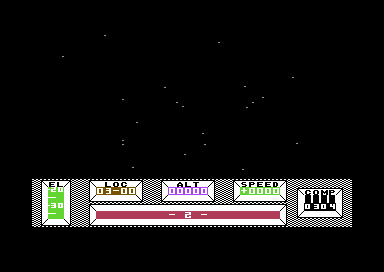<p class="cap">The countdown, over a starfield of 21 stars.</p></div>
      <div>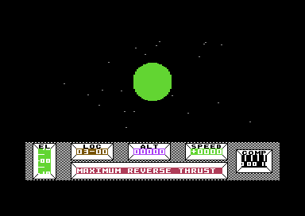<p class="cap">MAXIMUM REVERSE THRUST, with Targ growing.</p></div>
      <div>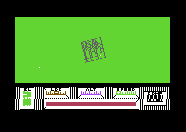<p class="cap">The descent: the city's roads from above.</p></div>
      <div>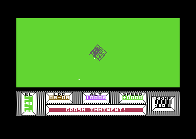<p class="cap">CRASH IMMINENT! Then manual control.</p></div>
    </div>
    <p class="cap">From the emulator, about 75 seconds from the start of the game to standing at 08-08. The opening's messages were logged from the message window as they played.</p>
  </div>
  <p>The opening is written in the same byte code as the rest of the game's events, at <code>$7001</code>, and it lives in memory that the second bitmap overwrites once play begins: after the opening it is gone. Its starfield speeds up (−32 a frame, then × 4.05 once, then × 1.012 a frame) and slows down again, and the planet grows as a disc of radius 1024 over the distance, from 1023 to 0 (<code>$74CA</code>). The descent starts at height <code>$7F0088</code>, looking straight down. Script 0 then takes over: CRASH IMMINENT!, one of four landing remarks picked at random ("WHERE AM I", "YOU CRASHED", "GOOD LANDING!", "OUCH!"), the status report ("CRASH LANDED ON TARG", "STATE OF WAR BETWEEN PALYARS AND MECHANOIDS") and the offer of the Dominion Dart for 5000.</p>
  <p>The first message on the original disk is NOVADRIVE COUNTDOWN. The copy this page was made from reads ABC UNLIMITED in its place, the cracking group's name, typed over the same bytes at <code>$7009</code>: it is the only change to the game's text.</p>
</section>

<section id="city-view">
  <p class="fig">02 · The city in lines</p>
  <h2 class="t">Explore the city of Targ, one building at a time</h2>
  <p class="lede">To keep rendering under control, the game keeps only one building in memory at a time. The square you're in dictates which building is live.</p>
  <p class="lede">Explore the city below – or <a href="https://gamesexplained.com/c64/mercenary/play.html">check the Play tab</a> for the full playable game.</p>
  <div class="plate">
    <div class="city-wrap">
      <div class="city-top">
        <div class="city-left">
          <div class="city-screen" id="city-screen" tabindex="0" role="img" aria-label="The view, drawn with the game's own arithmetic. Focus it to fly with the keyboard.">
            <canvas id="city-cv" width="320" height="136"></canvas>
          </div>
          <div class="city-all-row"><button type="button" id="city-all" aria-pressed="false">Render all buildings</button></div>
          <p class="city-keys" id="city-keys">Click the view, then <kbd>←</kbd> <kbd>→</kbd> turn, <kbd>↓</kbd> <kbd>↑</kbd> nose up and down, <kbd>W</kbd> <kbd>S</kbd> forward and back, <kbd>R</kbd> <kbd>F</kbd> climb and descend, <kbd>Q</kbd> <kbd>E</kbd> roll.</p>
          <p class="city-note" id="city-note" hidden></p>
        </div>
        <div class="city-aside">
          <canvas id="city-panel" width="128" height="24" aria-label="The panel's LOC and ALT readouts"></canvas>
          <canvas id="city-map" width="264" height="264" aria-label="Map: the roads the game lists this pass, its window, and the square whose building is loaded"></canvas>
          <div class="city-where" id="city-where" aria-live="polite"></div>
        </div>
      </div>
      <div class="city-controls">
        <div class="city-group city-go">
          <p class="city-label">Go to</p>
          <div class="city-presets" id="city-presets"></div>
          <div class="city-toggles">
            <button type="button" id="city-foot" aria-pressed="false">On foot</button>
          </div>
        </div>
        <div class="city-group city-fly">
          <p class="city-label">Fly</p>
          <div class="city-pad" id="city-pad">
            <button type="button" data-act="rollL" title="Roll left (Q)">Roll ⟲</button>
            <button type="button" data-act="up" title="Nose up (↓)">Nose up</button>
            <button type="button" data-act="rollR" title="Roll right (E)">Roll ⟳</button>
            <button type="button" data-act="left" title="Turn left (←)">◀ Turn</button>
            <button type="button" data-act="down" title="Nose down (↑)">Nose down</button>
            <button type="button" data-act="right" title="Turn right (→)">Turn ▶</button>
            <button type="button" data-act="fwd" title="Forward (W)">Forward</button>
            <button type="button" data-act="climb" title="Climb (R)">Climb</button>
            <button type="button" data-act="back" title="Back (S)">Back</button>
            <button type="button" data-act="level" title="Level the nose and the wings">Level</button>
            <button type="button" data-act="sink" title="Descend (F)">Descend</button>
            <button type="button" data-act="face" title="Turn to face north">Face north</button>
          </div>
          <label class="city-speed">Speed <input type="range" id="city-speed" min="0" max="100" value="45"> <span id="city-speed-v"></span></label>
        </div>
      </div>
      <div class="city-stat" id="city-stat"></div>
    </div>
    <p class="cap"><b>160 × 136</b> multicolour pixels, drawn by the page with the game's view code, ported routine by routine. Exhaustively verified as byte accurate.</p>
  </div>
  <p>The square's building is loaded only when the high byte of your X or Y changes (<code>$94FE</code>-<code>$952F</code>), and drawn only while you are low enough (height is under 65536). So buildings 'pop in' when you enter their square.</p>
  <p>From altitude 2048 and above, roads are drawn: lines between the centres of the squares they join. At height <code>$200000</code> a fixed picture of 13 roads replaces them (<code>$902A</code>).</p>
</section>

<section id="lift">
  <p class="fig">03 · Bug</p>
  <h2 class="t">Bug: stand on one patch of grass at the start and E takes you into the Colony Craft</h2>
  <p class="lede">You crash-land at 08-08, and the Colony Craft hangs straight above you at altitude 64,997. There is no lift on the ground here. But <b>one invisible patch of grass –</b> 1,024 units a side and about 14 seconds' walk from where you land – answers the E key as if it were the lift on the Colony Craft's deck. The ride 'down' goes into the Colony Craft's hangar; and pressing E again brings you up on its deck!</p>
  <div class="plate">
    <div class="lmap-wrap"><svg id="lmap" class="lmap" viewBox="0 0 640 448" role="img" aria-label="Top-down map of square 08-08 around the lift spot. Click anywhere to test the E key there."></svg></div>
    <div class="lift-ctl"><button id="lmap-walk" type="button">Walk it from the landing</button><button id="lmap-clear" type="button">Clear</button><span id="lmap-msg">Click anywhere to stand there and press E.</span></div>
    <p class="cap">Square 08-08 from above: runway marks, the spinning pyramid, the Dominion Dart. One grid step is 256 units, 1/256 of the whole square.</p>
  </div>
  <p>The Colony Craft sits over 08-08, so its deck and the grass underneath share X and Y coordinates. Only the height tells them apart. Its lift is entry 8 in the table of lift squares at <code>$B4B6</code>/<code>$B4BE</code>, and the E key's test checks the square and the middle bytes of X and Y. <b>It never reads the height</b>. So the patch under the deck's lift works exactly like the lift far above.</p>
  <div class="plate">
    <div class="lift-step">
      <pre class="lift-asm" id="lift-asm"></pre>
      <table class="lift-tbl"><thead><tr><th>Test</th><th>On the deck</th><th>On the ground</th></tr></thead><tbody id="lift-rows"></tbody></table>
    </div>
    <div class="lift-ctl"><button id="lift-next" type="button">Step</button><button id="lift-reset" type="button">Start again</button><span id="lift-msg"></span></div>
    <p class="cap">The E key's test, one instruction group at a time, with the values it reads on the Colony Craft's deck and on the grass under it.</p>
  </div>
  <p>The ride 'down' ends in room 8, the Colony Craft's hangar. Taking the elevator up again from room 8 works as expected: it starts in the room, and once it reaches the surface side, <code>$A312</code> adds <code>$40FF00</code> to your height, so it ends on the deck. The underground has no height of its own: a room is a separate box, and no room lies below any point of the city.</p>
  <p>Like all hangar lifts, it's designed for a vehicle – so you can drive the nearby Dominion Dart over to the pad and it works just as well.</p>
  <div class="plate">
    <div class="lift-grid lift-grid-3">
      <div>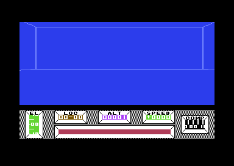<p class="cap"><b>E on the grass</b>: down into room 8, the Colony Craft's hangar.</p></div>
      <div>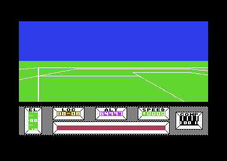<p class="cap"><b>E again</b>: up on the deck, ALT 64997.</p></div>
      <div>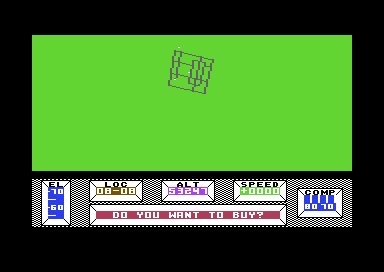<p class="cap"><b>Walk off the pad</b>: you tumble all the way down.</p></div>
    </div>
  </div>
  <p>It doesn't break the game as much as you'd expect! Hangar 8's three doors are all locked, with object 23 – so at game start, the hangar and deck are as far as you get.</p>
  <p>What you do from here depends on whether you brought the Dominion Dart. If you did, you can fly away – far above your normal permitted altitude. If you're on foot, your only option is to leave by the 'express elevator' – that is, walk off the roof of the Colony Craft and do some skydiving.</p>
  <h3 class="lmap-h">Try it yourself</h3>
  <ol class="lmap-steps">
    <li>Let the opening play to the end. Touch nothing until you stand at LOC 08-08 and Benson has finished "CRASH LANDED ON TARG". You face south.</li>
    <li>Turn right three-eighths of a turn, to face north-west. The COMP dial turns red as you pass west; north-west is the middle of the red quarter.</li>
    <li>Walk forward for about 14 seconds, about 100 steps, and stop.</li>
    <li>Press E. If nothing happens you are off the patch, which is about 2.5 seconds of walking across.</li>
  </ol>
  <figure class="lmap-fig">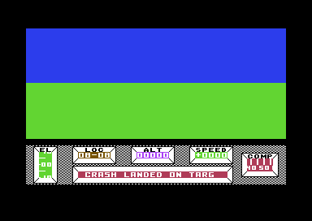<figcaption class="cap">On the patch, facing north-west. Nothing on the screen marks it.</figcaption></figure>
  <p>The foolproof way is to manually place yourself there. Open the VICE monitor and enter <code>&gt; 73 72</code> then <code>&gt; 79 72</code> to set your X, Y coordinates, then <code>x</code> to resume – placing you exactly in the middle of the patch at 08-08. Then press E.</p>
  <p>The <a href="https://gamesexplained.com/c64/mercenary/play.html">Play tab</a> has explicit support for this – it shows you the coordinates you need.</p>
</section>

<section id="npc">
  <p class="fig">04 · The other craft</p>
  <h2 class="t">Secret: the brother-in-law's new ship laps the city at ALT 500, for ever</h2>
  <p class="lede">One craft flies on its own from the moment the game starts. It belongs to the Palyar commander's brother-in-law, it has the Dart's shape, and it flies south down the west edge of the city, 32,769 units up, wrapping from the south edge back to the north. Two more craft come only when something calls them: the attack ship and the ship you hire.</p>
  <div class="plate">
    <div class="npc-row">
      <svg id="npc-map" class="npc-map" viewBox="0 0 440 440" role="img" aria-label="Map of the city, north up: the brother-in-law's ship on its line down column 00, and the landing site at 08-08"></svg>
      <div class="npc-side">
        <p class="city-label">Time since you landed</p>
        <div class="npc-slide"><input type="range" id="npc-t" min="0" max="150" value="0" step="1" aria-label="Minutes since you landed"><span id="npc-min">0.0 min</span></div>
        <p class="city-label">Spent</p>
        <select id="npc-pace" class="npc-select" aria-label="Where you spend the time">
          <option value="10.03">on foot at the landing site</option>
          <option value="7.99">in the Dart, on its pad</option>
          <option value="6.48">flying over the city</option>
          <option value="6.60">flying outside the city</option>
          <option value="9.00">on the Colony Craft's deck</option>
        </select>
        <div class="blind-ctl npc-ctl"><button type="button" id="npc-play" aria-pressed="false">Play, 40 times as fast</button></div>
        <div class="npc-where" id="npc-where"></div>
      </div>
    </div>
    <p class="cap">The ship's step (<code>$85C5</code>): one surface pass adds 256 to its Y, 1/256 of a square southward, and the square number is ANDed with 15, so after row 15 comes row 0. A lap is 4,096 passes. How long that takes depends on how long each pass takes to draw, which depends on where you are: the frames a pass are the game's own, measured in the simulator over a whole lap from each place. Underground the step does not run, and the ship waits.</p>
  </div>
  <div class="lift-grid npc-shots">
    <figure>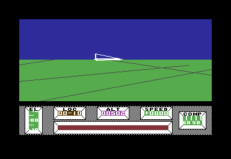<figcaption class="cap">The ship from 2,600 units west of it and 1,200 behind, from a Dart hovering just above its height. The game's code drew this frame in the simulator.</figcaption></figure>
    <figure>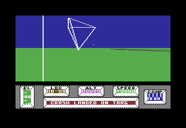<figcaption class="cap">From the landing site, turned to face it: the single pixel above the horizon in the middle of the view is the ship, 530,623 units away over 00-09. The white wedge at the left is part of the wreck you stand in.</figcaption></figure>
  </div>
  <p>The ship is object 0, with the Dart's model (<code>$3B25</code>). Its X is always <code>$006F41</code>, 4,287 units west of column 00's centre line, and its height is always 32,769 units, which the panel would show as ALT 00500. Only the Y moves. When you land it is over 00-09.</p>
  <p><b>You can see it from anywhere in the city.</b> The object routine (<code>$9728</code>) draws a whole model only within 65,536 units on every axis; farther away it plots one pixel, and it does that at any distance for an object above you (<code>$9787</code>). On foot, turned to face column 00, look for a pixel above the horizon. On the <a href="play.html">Play tab</a>, just after the landing, turn left a little less than a quarter of a turn: it is in the middle of the view, just above the horizon. The map above shows where it has got to since.</p>
  <p><b>Nobody can fly it.</b> B boards a craft only when you are on foot within 512 units of it (<code>$985D</code>), and nowhere 32,769 units up can you stand. Yet it has a motion record of its own, record 0, and it is the fastest in the game: a top speed of 11,475, which the SPEED readout would print as <code>**75</code>. The fastest craft you can fly, the CHEESE and the Dart with the Poweramp, reach 9,900.</p>
  <p><b>Shooting it</b> starts script 27 (<code>$8797</code>): YOU HAVE JUST DESTROYED, THE PALYAR COMMANDER'S BROTHER-IN-LAWS NEW SHIP, then PALYAR SHIP ATTACKING. The script also sets bit 5 of <code>$BEC0</code>, the brother-in-law's anger, the same bit that script 1 sets when you take the Dart on the pad without paying: THIS CRAFT BELONGED TO THE PALYAR COMMANDER'S BROTHER-IN-LAW, HE IS NOT TOO PLEASED. The Dart you are offered is his old one. Nothing puts the new ship back once it is shot, and its step still runs, so it goes on flying its line, unseen. His house is the cottage at 07-09.</p>

  <h3>The attack ship aims, overshoots and aims again</h3>
  <p>An attack is one ship, object 15, with the Hexapod's model whichever side sent it. It aims at you, flies for 46 passes and aims again. Each aim sets its velocity to a 32nd of the distance to you a pass (<code>$8998</code>), so after 46 passes it has gone 46/32 of the way: it overshoots, and each leg leaves it at 0.44 of the distance of the leg before, on the other side of you. It looks at you only when a leg ends: if it is then within 12,288 units on every axis, it stays where it is and fires (<code>$893E</code>). Flying past you on the way does not count.</p>
  <div class="plate">
    <div class="blind-ctl"><span>You:</span>
      <button type="button" id="npc-still" aria-pressed="true">stand still</button>
      <button type="button" id="npc-fly" aria-pressed="false">fly straight on</button></div>
    <svg id="npc-chase" class="npc-chart" viewBox="0 0 680 280" role="img" aria-label="The attack ship's distance from you, pass by pass, on a logarithmic scale"></svg>
    <p class="cap" id="npc-chase-cap"></p>
  </div>
  <p>Its missile, object 14, leaves with a 16th of the distance to you a pass and is not steered afterwards. A hit flashes the view white, prints SHIP DESTROYED if you were in a craft and Benson was not busy, and drops you into the falling mode; the craft you were in is lost, and only CTRL+Q brings the Dart back. The ship itself starts every attack from wherever the last one left it, and the first from under the landing site, 19,738 units below the ground.</p>
  <p>A craft holding a straight course at more than about 383 units a pass is never caught. The ship's velocity comes to equal yours, 32 passes' travel behind you, and it fires only from within 12,288 units: in the run above, the Dart cruising at about 4,465 units a pass leads it by 142,851 units for as long as it keeps going.</p>

  <h3>The hired ship takes 779 passes to come down</h3>
  <p>Hire the interstellar ship (the radio in room <code>$10</code>, which works with the Antenna, and a million credits) and Benson tells you it will be there in 2 MINS. The next pass puts object 7 over 08-08 at a height of 8,323,072 units, nearly twice the Colony Craft's, and each pass after that takes a 128th of the height's top two bytes off, and one more (<code>$863B</code>).</p>
  <div class="plate">
    <svg id="npc-hire" class="npc-chart" viewBox="0 0 680 240" role="img" aria-label="The hired ship's height, pass by pass, from 8,323,072 units down to the ground"></svg>
    <p class="cap">The height pass by pass, from the step's own arithmetic; the simulator gives the same heights to the unit. It passes the Colony Craft's height after 86 passes and is down after 779. Standing at the landing site that took 7,893 frames, 2 minutes 38 seconds; in a room underground, where the step goes on, 1 minute 29. It lands 4,352 units east and 768 south of the wreck.</p>
  </div>

  <h3>Three Darts that never fly</h3>
  <p>Objects 8 to 15 are the moving ones: <code>move_objects</code> (<code>$8690</code>) moves each of them by its velocity while its lifetime at <code>$BDA3</code> runs. Only three are ever given a lifetime.</p>
  <table class="lift-tbl npc-tbl">
    <thead><tr><th>Object</th><th>Model</th><th>What it does</th></tr></thead>
    <tbody>
      <tr><td>8</td><td>missile</td><td>your missile: 15 moves of 4,096 units</td></tr>
      <tr><td>9</td><td>Dart</td><td>never moves; can be put on the ground (below)</td></tr>
      <tr><td>10</td><td>the wreck</td><td>your crashed ship at 08-08; never moves</td></tr>
      <tr><td>11</td><td>Dart</td><td>never moves, never seen</td></tr>
      <tr><td>12</td><td>the Mechanoid</td><td>lies in room <code>$66</code>; never moves</td></tr>
      <tr><td>13</td><td>Dart</td><td>never moves, never seen</td></tr>
      <tr><td>14</td><td>missile</td><td>the attack ship's missile</td></tr>
      <tr><td>15</td><td>Hexapod</td><td>the attack ship</td></tr>
    </tbody>
  </table>
  <p>One of the three Darts can still turn up. CTRL+Q puts the craft you are in down in a random square of the city (<code>$85F5</code>), and it takes the craft's number from your mode, <code>$A9</code>, which is 9 while you are falling. Press CTRL+Q while you fall, after a hit or off the Colony Craft's deck, and object 9 appears on the ground somewhere in the city. It is a Dart you cannot board, since B takes only objects 0 to 7, and it never moves. In the simulator, from a fall, it landed at 12-15.</p>
</section>

<section id="blind">
  <p class="fig">05 · Secret</p>
  <h2 class="t">Secret: shoot a building from the next square and nobody notices</h2>
  <p class="lede">A building shot from outside its square is destroyed, but unless you get into that square within 16 passes, the game never counts it, never names it, and nobody comes after you for it.</p>
  <div class="plate">
    <div class="blind-ctl"><span>Where the player is while the building falls:</span>
      <button type="button" id="blind-in" aria-pressed="true">In 13-04, with the sign</button>
      <button type="button" id="blind-out" aria-pressed="false">Next door in 12-04</button>
      <button type="button" id="blind-run">Fire</button></div>
    <div class="blind-row"><div class="blind-sign"><p class="cap" id="blind-shot"></p></div>
      <table class="blind-tbl"><thead><tr><th>Pass</th><th><code>$F4</code></th><th><code>$B7</code> = <code>$F5</code>?</th><th>What runs</th></tr></thead><tbody id="blind-rows"></tbody></table></div>
    <p class="cap" id="blind-cap">The hit and the sixteen passes after it (<code>$871B</code>, <code>$879B</code>), for a missile that reaches 13-04's Commodore sign. The table follows the code's tests pass by pass; the pictures are the emulator's, from the two live runs: the shot from inside the square, and the shot from next door.</p>
  </div>
  <p>When a missile gets within 4096 units of a square's centre below height 2048, <code>$871B</code> marks the square destroyed in <code>$2B00</code> at once and starts a countdown of 16 passes in <code>$F4</code> for square <code>$F5</code>. Everything else waits for the countdown: sinking the building, adding it to the count of Palyar or Mechanoid sites, and starting its script, which names it and sends the owner's ship after you. The routine that does all that returns straight away unless you are standing in that square (<code>$87A4</code>), so flying into it before the countdown ends still gets it counted. Otherwise the countdown runs out anyway, and a later hit finds the square already destroyed and does nothing (<code>$87C1</code>). In the emulator, a missile fired east from 12-04, 1024 units up, destroyed 13-04's sign: <code>$2B4D</code> went from <code>$51</code> to <code>$D1</code>, the Mechanoid count stayed 0, and Benson said nothing, then or later.</p>
  <p>Firing from the ground does not work: level flight still points the nose down by a sine of −0.003, so a missile launched 63 units up hits the ground within five passes, before it reaches the next square's centre. From a little higher it does.</p>
</section>

<section id="signs">
  <p class="fig">06 · The war of signs</p>
  <h2 class="t">Shooting the Commodore sign makes you a TRAITOR</h2>
  <p class="lede">Ten squares of the city hold billboards: five with the Commodore logo, five with Atari's. Destroying either kind gets a verdict.</p>
  <div class="plate">
    <div class="lift-grid">
      <div><p class="cap"><b>13-04</b>: model <code>$C82E</code>, the Commodore logo on two posts. Also at 03-13, 09-13, 04-15 and 09-15.</p></div>
      <div>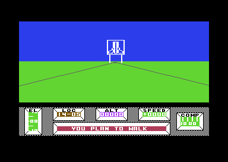<p class="cap"><b>14-05</b>: model <code>$C7B2</code>, the Atari logo. Also at 14-08, 12-11, 06-15 and 11-15.</p></div>
    </div>
    <div class="signs-strip">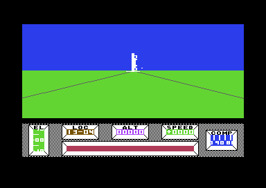<div class="signs-msg" id="signs-msg">TRAITOR!</div></div>
    <p class="cap">Shot from inside its square in the Dart: the Commodore sign sinks into the ground and Benson prints TRAITOR! (live). Its square's byte in <code>$2B00</code> says Mechanoid, script 17 + 32 = 49; the Atari squares run script 50, GOOD SHOW!</p>
  </div>
  <p>Each square's byte in the table at <code>$2B00</code> holds its owner (bit 6 Mechanoid, bit 5 nobody's, neither Palyar) and, in its low five bits, a script number n. When the square is destroyed, script 32 + n runs once. Scripts 36 to 48 name the landmarks ("YOU HAVE JUST DESTROYED", then BOSHER STADIUM, say), and all but Novabill's then set off an attack by the square's owner; scripts 49 and 50 print their one word and leave you alone.</p>
</section>

<section id="frame">
  <p class="fig">07 · The screen</p>
  <h2 class="t">The double buffer gives 4 or 5 fps</h2>
  <p class="lede">The view is a bitmap of 160 by 136 wide pixels, and there are two of them: the game draws into one while you look at the other.</p>
  <div class="plate">
    <div class="frame-wrap"><canvas id="frame-cv" width="768" height="544"></canvas></div>
    <div class="frame-ctl"><button id="frame-back" type="button" aria-pressed="false">Show the other bitmap</button><span id="frame-state" class="frame-state"></span></div>
    <p class="cap" id="frame-cap">One frame of the opening descent, high over the city, drawn by the site's C64 renderer from the memory and video-chip writes recorded in the emulator: all 104,448 pixels match the emulator's own picture of that frame. The button points the view at the other bitmap, which is half drawn.</p>
  </div>
  <p>Above the panel the screen is in multicolour bitmap mode: each byte holds four pixels of two bits, and each pixel is twice as wide as it is tall. Two bitmaps sit in the video chip's second bank, at <code>$4000</code> and <code>$6000</code>. On every pass the main loop swaps them (<code>$AF84</code>): the counter <code>$24</code> picks which one the game draws into (<code>$25</code>), and <code>$C7</code> holds the value the view's raster interrupt writes into <code>$D018</code> to show the other. At line 186 a second interrupt switches the screen to text for the panel (<code>$BA1E</code>).</p>
  <p>Seen from above the whole city, a view takes 13 frames to draw, so the picture changes about four times a second. On the ground, with one building to draw, the main loop runs five passes a second.</p>
</section>

<!-- benson: Benson's message window, how a message is stored, the event scripts, money in BCD.
     Needs benson.css, ../../lib/c64.js, window.MERC_GAME = C64.load('listing.json'), then benson.js. -->
<section id="benson-window">
  <p class="fig">08 · Benson</p>
  <h2 class="t">Benson and his sound</h2>
  <p class="lede">Benson, the craft's computer, speaks through a strip of 23 cells at the bottom of the panel. Under his words runs a tick: one square wave that sounds for the whole game, retuned every frame from the character he has just printed. A blank sets its pitch to zero, and the note falls silent.</p>
  <div class="plate benson-plate">
    <div class="benson-screen"><canvas id="benson-win" width="864" height="96" role="img" aria-label="Benson's message window and its frame, drawn from the game's screen codes and character set"></canvas></div>
    <div class="benson-ctl">
      <label class="benson-field benson-wide">Message <select id="benson-pick"></select></label>
    </div>
    <div class="benson-ctl">
      <label class="benson-field bv-say">Or type <input type="text" id="bv-text" maxlength="200" spellcheck="false" autocomplete="off" aria-label="Text for Benson to print"></label>
      <button type="button" id="bv-say">Say it</button>
      <button type="button" id="bv-stop">Stop</button>
    </div>
    <canvas id="bv-roll" class="bv-roll" role="img" aria-label="The tick's pitch frame by frame: one bar a character, labelled with it; blanks and the pause after each line are silent"></canvas>
    <div class="bv-row">
      <div class="bv-regs" id="bv-regs"></div>
      <div class="bv-scopewrap"><canvas id="bv-scope" class="bv-scope" role="img" aria-label="The square wave voice 3 plays during one frame"></canvas><p class="bv-scopecap" id="bv-scopecap"></p></div>
    </div>
    <div class="benson-ctl"><label class="benson-field">Window colour <select id="benson-colour"></select></label></div>
    <p class="cap">The window and its frame are rows 21-23 of the screen matrix at <code>$5C00</code>, drawn with the character set at <code>$7800</code> in the colours the code sets: ink from <code>$BBC2</code>, paper from <code>$BA3D</code>. The player is a port of the printer <code>$8DC3</code>. A test runs the game's own code in a 6502 simulator beside it and gets the same window, tick and state on every frame of all 219 messages; the finished "DO YOU WANT TO BUY?" matches the play snapshot byte for byte and the reference screenshot pixel for pixel. The sound is the site's model of the SID playing the printer's writes to <code>$D40F</code>, one a frame, and the window, the roll and the registers follow it. Typed text goes to the same port as a literal, as a script's print would feed it: letters, digits, spaces and <code>* + , - . / ? ! '</code> only, since the game's character set has nothing else.</p>
    <p class="benson-need" hidden></p>
  </div>
  <p>Each character moves the window one cell left and enters at the right. After 25 characters the printer stops for 99 frames, so a line lasts 124 frames, about 2.5 seconds, and the next line pushes it out. The window is 23 cells wide, so the first two characters of every line scroll off before the pause: the author pads each line with blanks to centre it.</p>
  <p>At start-up <code>$B910</code> copies 25 bytes from <code>$B921</code> into the SID, <code>$D400</code> to <code>$D418</code>, then sets voice 3's control to <code>$41</code>: the pulse wave, gate on. Voice 3's pulse width is <code>$800</code>, half of 4096, so its wave is square. Attack is 0 and sustain 15, so the note reaches full volume at once and stays there. Nothing turns the gate off again. The only other code that touches voice 3 is the printer, and it writes one register: <code>$D40F</code>, the high byte of the frequency.</p>
  <pre class="bv-asm"><span class="bv-c">; $8DC3, once a frame while a message prints</span>
8DC7  CMP #$1A     <span class="bv-c">; 26 frames into the line?</span>
8DCB  LDX #$00
8DCD  STX $D40F    <span class="bv-c">; then silence, for the 99-frame pause</span>
  ...
8DE9  LDA $FC      <span class="bv-c">; the character just printed</span>
8DEE  AND #$3F     <span class="bv-c">; keep its low six bits</span>
8DF0  CMP #$20     <span class="bv-c">; a blank?</span>
8DF2  BNE $8DF6
8DF4  LDA #$D0     <span class="bv-c">; $D0 + $30 carries out to $00</span>
8DF6  CLC
8DF7  ADC #$30
8DF9  STA $D40F    <span class="bv-c">; the pitch for this frame</span></pre>
  <p>The low byte of the frequency stays at 0, so the only pitches Benson has are multiples of 256 in the register. On a PAL machine one step of the register is 985,248 / 2<sup>24</sup> Hz, so each step of <code>$D40F</code> is 15.03 Hz. The letters run from A, <code>$31</code> at 737 Hz, to Z, <code>$4A</code> at 1,112 Hz, about seven semitones. A blank gives <code>$D0</code> + <code>$30</code>, which carries out of the byte and leaves 0: at frequency 0 the oscillator stops, and the SID's output stage filters the frozen level to silence.</p>
  <table class="lift-tbl bv-alpha"><thead><tr><th><code>$D40F</code></th><th>Hz</th><th>Nearest note</th><th>Characters</th></tr></thead><tbody id="bv-alpha"></tbody></table>
  <p>Only the low six bits of a character count, so the digits land on the same pitches as the first nine letters: 1 sounds like A, and 9 like I. The punctuation sits at the top, and ?, ! and the apostrophe are Benson's highest notes. A line takes 25 frames at 50 a second, half a second of chatter, then 99 frames of silence while it can be read.</p>
</section>

<section id="sound">
  <p class="fig">09 · Sound</p>
  <h2 class="t">Sound: thirteen sound effects and an engine</h2>
  <p class="lede">The game has no music. Its sound effects are thirteen entries of four bytes in one table, each started on voice 1 or voice 2 by the same routine; only the doors' hum and Benson's tick come from elsewhere. The lift and the engine rewrite a register while they play.</p>
  <div class="plate">
    <div id="snd-player"></div>
    <p class="cap">Each button plays the game's own register writes, frame by frame, through the site's model of the SID: the four bytes from the table at <code>$B987</code>, then whatever the game writes while the sound runs (the lift's pitch every frame, the wipes' two blocks, the opening's gate). The bytes are read from listing.json. A test runs the game's code in the kit's 6502 simulator and gets the same registers and the same gate changes on every frame, for every button. Voice 3 is Benson's (section 08) and stays silent here.</p>
    <p class="snd-need" hidden></p>
  </div>
  <p><code>$B958</code> (voice 1) and <code>$B93A</code> (voice 2) share a tail at <code>$B961</code> that closes the voice's gate, then writes the frequency's high byte, the attack and decay, the sustain and release, and the control byte, which opens the gate again with a pulse or noise wave. The frequency's low byte is <code>$80</code> and the pulse width <code>$800</code>, as <code>$B910</code> sets them from <code>$B921</code>, so every pulse is square; only the doors' hum changes the low byte, until <code>$B910</code> runs again. Whatever the voice was playing is cut off.</p>
  <div class="snd-scroll"><table class="lift-tbl snd-tbl">
    <thead><tr><th>Sound</th><th>What plays it</th><th>Voice</th><th>Bytes</th><th>Wave</th><th>Frequency</th><th>Attack, decay, sustain, release</th></tr></thead>
    <tbody id="snd-tbl"><tr><td colspan="7">The table is read from the game's bytes in listing.json, which the built site serves.</td></tr></tbody>
  </table></div>
  <p>Nearly every entry has sustain level 0, and nothing closes the gate afterwards. The note rises at the attack rate and dies away at the decay rate: 750 ms for the key beep, 15 seconds for a building. The next sound on the same voice cuts it off. Voice 1 carries the beeps, the missiles and the hits, voice 2 the engine, the lift and the opening. The transporter chime uses both.</p>
  <p>The lift's hum, sound <code>$30</code>, holds a steady level: sustain 4 of 15, a quarter of full volume, on a square wave whose own frequency byte is 0. The panel's interrupt supplies the pitch every frame (<code>$BA87</code> going down, <code>$BAE9</code> going up) from <code>$BBA5</code>, at the index that also picks the ride's step from <code>$BB89</code>. The pitch is lowest at the two ends of the shaft and highest in the middle, <code>$0280</code> to <code>$0580</code>, 38 to 83 Hz. The steps are smallest at the ends too, so the lift speeds up and slows down. Most laptop and phone speakers play little that low, and the hum is easier to hear in headphones. At the end of the ride <code>$BB2F</code> closes the gate.</p>
  <p>The doors hum on voice 2 with the triangle wave, ring-modulated by voice 1. <code>$AF3E</code> and <code>$AF3A</code> write thirteen registers, <code>$D40D</code> down to <code>$D401</code>, from one of two blocks, <code>$AF53</code> and <code>$AF61</code>, then <code>$15</code> into voice 2's control: the triangle, the ring modulation and the gate. The blocks differ in one byte, the low byte of voice 2's frequency: <code>$0550</code> (80 Hz) or <code>$05E4</code> (89 Hz). Walking through a door, the lower hum plays while the band rises and the higher one for the 22 frames after; backing through, the lower one holds for 30 frames and the higher one plays while the band comes down. Voice 1 sits at <code>$0980</code> (143 Hz) with no wave of its own, heard only through the ring modulation. At the end <code>$B910</code> reloads the whole SID, which stops the hum. In a transporter booth the chime follows: square waves at <code>$0E80</code> and <code>$0F80</code>, 218 and 233 Hz, which beat against each other 15 times a second as they swell for a second and fade.</p>
  <p>The opening plays the Novadrive on voice 2. Sound <code>$28</code> sets up noise with a three-second attack and leaves the gate closed. NOVADRIVE ENGAGED sets the mode that opens it on every pass (<code>$741C</code>), and the slow-down closes it (<code>$7439</code>, a three-second release). Sound <code>$2C</code> then retunes the noise lower and stretches its fade to 24 seconds. At UNABLE TO CORRECT the opening's script pokes <code>$81</code> into <code>$D40B</code> itself (operation 25 at <code>$7194</code>), and the rumble of the fall fades until the landing, where the engine's code sets its pitch to zero.</p>
  <h3>The engine</h3>
  <div class="plate">
    <div class="eng-ctl">
      <button type="button" id="eng-play" aria-pressed="false">Play the engine</button>
      <label for="eng-speed">Speed</label>
      <input type="range" id="eng-speed" min="-3840" max="3840" step="1" value="2825" aria-describedby="eng-regs">
    </div>
    <div class="eng-presets" id="eng-presets">
      <button type="button" data-p="0">Stopped</button>
      <button type="button" data-p="-865">Reversing, SPEED −4</button>
      <button type="button" data-p="-1057">Reversing, SPEED −7</button>
      <button type="button" data-p="865">SPEED 4</button>
      <button type="button" data-p="2825">The Hovercar flat out, 825</button>
      <button type="button" data-p="3469">The Dart flat out, 4950</button>
    </div>
    <canvas id="eng-chart" class="eng-chart" role="img" aria-label="The engine's sustain level at every speed, reversing on the left and forward on the right; the current speed is marked"></canvas>
    <div class="eng-regs" id="eng-regs" aria-live="polite"></div>
    <p class="cap">The slider sets the speed as the game holds it, a two-byte float: <code>$27</code>, the exponent with the sign in bit 0, and <code>$26</code>, the mantissa. The page computes the engine's two registers the way <code>$B5D8</code> does, and a test that runs the game's own code in the simulator on every value of the two bytes, from eight different last levels, gets the same writes. The bars are the sustain level at each speed; the red band is the one where reversing is silent.</p>
    <p class="snd-need" hidden></p>
  </div>
  <p>On the surface, and not during the opening's descent, the panel's routine sets the engine note once a pass (<code>$B5D8</code>-<code>$B61C</code>). Voice 2 plays noise. The sustain level is the speed's power of two less 3, and at least 1, so from 32 units a pass the engine gets one step louder each time the speed doubles. The frequency's high byte takes the level in its top four bits and the top four bits of the speed's mantissa below them: the pitch climbs in 16 steps through each doubling and then jumps. When the level rises the game starts sound <code>$24</code> again, since the SID's envelope only falls to a new sustain level by itself. When the level falls, a write to <code>$D40D</code> is enough.</p>
  <p>Below a speed of 1 the sustain and release byte is 0 and the engine is silent. The other silence comes from the arithmetic. The level is the speed's exponent byte less <code>$0C</code>, and bit 0 of that byte is the sign. Going forward at 8 to 16 units a pass the byte is <code>$0C</code>, the difference is 0, and the code replaces it with the minimum, level 1. Reversing at the same speeds the byte is <code>$0D</code> and the difference is 1, which the code keeps: shifted into place it becomes <code>$0C</code>, sustain 0 and a three-second release. The engine falls silent between −8 and −16, SPEED −3 to −5 on the panel, and comes back at −16.</p>
</section>

<section id="benson-store">
  <p class="fig">10 · How a message is stored</p>
  <h2 class="t">How a message is stored</h2>
  <p class="lede">A message is a list of one-byte tokens, most of them numbers of words in a dictionary.</p>
  <div class="plate benson-plate">
    <div class="benson-browser">
      <div class="benson-listcol">
        <input type="search" id="benson-q" class="benson-search" placeholder="Search the text or the address" aria-label="Search the messages">
        <div class="benson-filter" role="group" aria-label="Which messages">
          <button type="button" data-f="all" aria-pressed="true">All</button><button type="button" data-f="canned" aria-pressed="false">Canned</button><button type="button" data-f="script" aria-pressed="false">In scripts</button><button type="button" data-f="quirk" aria-pressed="false">Quirks</button>
        </div>
        <ul id="benson-msgs" class="benson-list" aria-label="Messages"></ul>
        <p class="benson-count" id="benson-count"></p>
      </div>
      <div class="benson-detail" id="benson-msg" aria-live="polite"></div>
    </div>
    <p class="cap">All 64 canned messages (pointers <code>$20A0</code>/<code>$20E0</code>, tokens <code>$151F</code>-<code>$16D2</code>) and the 155 messages inside the scripts, decoded as the printer reads them (<code>$8E1E</code>), with words from the dictionary at <code>$1249</code>-<code>$151B</code> through <code>$2120</code>/<code>$2210</code>. The lines under the table are the printer port's output, which matches the game's code frame by frame.</p>
    <p class="benson-need" hidden></p>
  </div>
  <p>A token of 8 or more is a word with a blank before it; 1 to 7 are endings such as S and ED, glued to the word before. <code>$EF</code> is a blank, <code>$F8</code>-<code>$FE</code> print a counter in decimal, <code>$FF</code> starts literal text that runs to the byte with bit 7 set, and 0 ends the message. Words 230 to 238 are nothing but spaces, nine down to one. They centre a line, and word 230 at the end of a message pushes it into a second, empty line that clears the window.</p>
</section>

<section id="benson-scripts">
  <p class="fig">11 · The event scripts</p>
  <h2 class="t">The event scripts</h2>
  <p class="lede">What Benson says, and when, comes from 51 scripts in a small byte code, run one operation per pass of the main loop.</p>
  <div class="plate benson-plate">
    <div class="benson-jumps" id="benson-jumps"></div>
    <div class="benson-browser benson-browser-code">
      <ul class="benson-list benson-scriptlist" id="benson-scriptlist" aria-label="The scripts"></ul>
      <div class="benson-code" id="benson-code"></div>
    </div>
    <p class="cap">Every operation reachable from the 51 entries of the table at <code>$0800</code> and from the opening's script at <code>$7001</code>, 527 in all, decoded as the interpreter <code>$8AB2</code> reads them, plus two pieces nothing reaches. Triggers come from the room records, the object flags <code>$29C0</code>, the square table <code>$2B00</code> and the code that starts a script (<code>$8A8C</code>). Headings are the labels of the Source tab.</p>
    <p class="benson-need" hidden></p>
  </div>
  <p>An operation byte holds the operation in its low six bits; bit 7 turns a test round. A test is followed by its operands and a two-byte target, where the script goes if the test holds. The interpreter waits while a message is printing, so every script moves at the pace of Benson's window.</p>
</section>

<section id="benson-money">
  <p class="fig">12 · Money in BCD</p>
  <h2 class="t">Money in BCD, and a purchase without subtraction</h2>
  <p class="lede">The credits are eight decimal digits in four bytes, and the scripts have no way to subtract: a purchase adds the price's ten's complement.</p>
  <div class="plate benson-plate">
    <div class="benson-ctl">
      <label class="benson-field">Credits <input type="number" id="benson-credits" min="0" max="99999999" step="1000" inputmode="numeric"></label>
      <label class="benson-field">Price <input type="number" id="benson-price" min="0" max="99999999" step="1000" inputmode="numeric"></label>
      <span class="benson-presets" id="benson-presets"></span>
    </div>
    <div id="benson-sum" class="benson-sum" aria-live="polite"></div>
    <div class="benson-ctl">
      <button type="button" id="benson-buy">Pay: the result becomes the credits</button>
      <button type="button" id="benson-reset">Start again at 9000</button>
    </div>
    <p class="benson-dh">Canned message 21 with those credits, as the window shows it:</p>
    <canvas id="benson-have" class="benson-line" width="368" height="16" role="img" aria-label="Canned message 21 with the credits"></canvas>
    <h3 class="benson-h3">What the rooms pay</h3>
    <div class="benson-tw"><table class="benson-t benson-sales" id="benson-sales"></table></div>
    <p class="benson-salenote" id="benson-salenote" aria-live="polite"></p>
    <p class="cap">The addition is a port of operation 14 (<code>$8C73</code>): four decimal-mode additions from the least significant byte up, the carry out of the top byte dropped. It gives the same bytes as the game's code in a 6502 simulator on 10,000 random purchases and on the live test, 9000 + 99995000 = 4000. The prices are read from the sale rooms' scripts; a price in the table adds to the credits as operation 21 does at <code>$1041</code>.</p>
    <p class="benson-need" hidden></p>
  </div>
  <p>Credits start at 9000 (<code>$710C</code>). The Dart's script adds 99995000 (<code>$0A29</code>), which is 5000 short of 100000000; the carry out of the top digit is thrown away, leaving 4000. The Hertz ship costs 999,999 (99000001 at <code>$0E90</code>), but the check before it (<code>$0E6F</code>) only asks whether the top byte is above zero, so it wants 1,000,000.</p>
</section>

<section id="math-lines">
  <p class="fig">13 · Lines</p>
  <h2 class="t">Drawing a line: eight routines, one per octant</h2>
  <p class="lede">Each edge in the view is drawn by one of eight short routines that step along the longer axis, add a slope byte to an 8-bit counter (or subtract it), and step sideways whenever the counter wraps.</p>
  <div class="plate math-lineplate">
    <div class="math-need" id="math-need-line" hidden></div>
    <div class="math-linerow">
      <div class="math-viewcol">
        <div class="math-screen" id="math-screen">
          <canvas id="math-view" width="160" height="136" aria-label="The 160 by 136 view: drag to draw a line"></canvas>
          <canvas id="math-over" width="640" height="272" aria-hidden="true"></canvas>
        </div>
        <div class="math-ctl">
          <div class="math-ops math-ops-sm" id="math-form" role="group" aria-label="Line form">
            <button type="button" data-form="and" class="math-on" aria-pressed="true">AND: white %00</button>
            <button type="button" data-form="or" aria-pressed="false">ORA: %01</button>
          </div>
          <button type="button" class="math-btn" id="math-clear">Clear</button>
          <label class="math-check"><input type="checkbox" id="math-ideal" checked> exact line</label>
        </div>
        <div class="math-ctl math-presets" id="math-presets" aria-label="Examples"></div>
      </div>
      <div class="math-side">
        <p class="math-errtitle">The octants as the view shows them (click one)</p>
        <svg id="math-compass" viewBox="-104 -58 208 116" role="img" aria-label="The eight octants"></svg>
        <div class="math-read" id="math-read"></div>
        <p class="math-readnote" id="math-readnote"></p>
      </div>
    </div>
    <div class="math-lower">
      <div class="math-lowleft">
        <p class="math-errtitle" id="math-loupetitle">Close up</p>
        <canvas id="math-loupe" width="240" height="120" aria-label="Close up of the line"></canvas>
        <p class="math-errtitle math-gap">The counter <code>$08</code> at each pixel of the last line</p>
        <svg id="math-steps" class="math-steps" viewBox="0 0 600 120" preserveAspectRatio="none" aria-label="The counter after each step"></svg>
        <p class="math-stepread" id="math-stepread"></p>
      </div>
      <pre class="math-asm" id="math-asm" aria-label="The routine that drew the last line"></pre>
    </div>
    <p class="cap">The view's 160 × 136 pixels, each twice as wide as it is tall, over a sky and ground in the surface's colours from <code>$B27D</code>. Drag to draw; the end may leave the view. Each end is a whole pixel whose offset from the centre becomes a float; from there the port does what <code>$9A94</code>–<code>$9D95</code> do (the slope by logarithms, the octant through <code>$BBD0</code>, the routine through <code>$BC38</code>/<code>$BC40</code>, the corner from <code>$BBD8</code>/<code>$BBE0</code> for an end off the view) and runs the routine. <b>Checked:</b> every byte of the bitmap, and the slope, octant and end, match the game's code run in a 6502 simulator for 3,000 random drags and every row and column of the view, in both forms, and 6,000 direct calls of the eight routines.</p>
  </div>
</section>

<section id="keys">
  <p class="fig">14 · Controls</p>
  <h2 class="t">The keys, as the game reads them</h2>
  <p class="lede">The game scans the keyboard itself and turns each key into a number, row × 8 + column, with 64 added for SHIFT and 128 for CTRL. The joystick goes in port 2.</p>
  <div class="plate tablewrap">
    <table class="keys-tbl"><thead><tr><th>Key</th><th>Number</th><th>Does</th><th>Where</th></tr></thead><tbody>
      <tr><td>Stick</td><td></td><td>walk or fly; on foot, up and down step 80 units, left and right turn 1/64 of a turn a pass</td><td><code>$B2FE</code>, <code>$A165</code></td></tr>
      <tr><td>Fire</td><td></td><td>a missile, from a craft on the surface</td><td><code>$886A</code></td></tr>
      <tr><td>1 to 9, 0</td><td></td><td>throttle 2<sup>n+4</sup>; 0 is 2<sup>14</sup>, the fastest</td><td><code>$B47E</code>, <code>$BC50</code></td></tr>
      <tr><td>SHIFT + digit</td><td></td><td>the same, in reverse</td><td><code>$B47E</code></td></tr>
      <tr><td>+ and −</td><td><code>$28</code>, <code>$2B</code></td><td>throttle × 1.03 or × 0.98 every pass while held</td><td><code>$B499</code></td></tr>
      <tr><td>SPACE, ←</td><td><code>$3C</code>, <code>$39</code></td><td>throttle 2<sup>−31</sup>: stop</td><td><code>$BC50</code></td></tr>
      <tr><td>T</td><td><code>$16</code></td><td>take an object within 256 units</td><td><code>$970A</code></td></tr>
      <tr><td>B</td><td><code>$1C</code></td><td>board a craft within 512 units</td><td><code>$970E</code></td></tr>
      <tr><td>D</td><td><code>$12</code></td><td>drop the last object taken</td><td><code>$98FE</code></td></tr>
      <tr><td>L</td><td><code>$2A</code></td><td>leave the craft, when landed</td><td><code>$98C8</code></td></tr>
      <tr><td>E</td><td><code>$0E</code></td><td>the lift</td><td><code>$B3FD</code></td></tr>
      <tr><td>Y</td><td><code>$19</code></td><td>yes, when Benson asks</td><td>script op 11</td></tr>
      <tr><td>CTRL + RETURN</td><td><code>$81</code></td><td>pause, until the next key</td><td><code>$B335</code></td></tr>
      <tr><td>CTRL + Q</td><td><code>$BE</code></td><td>scatter what you carry over the city and start again in the Dart at 08-08</td><td><code>$80E8</code></td></tr>
      <tr><td>CTRL + S, CTRL + L</td><td><code>$8D</code>, <code>$AA</code></td><td>save or load position 0-9 on disk</td><td><code>$B382</code>, <code>$819E</code></td></tr>
    </tbody></table>
    <p class="cap">The dispatch is at <code>$B2FE</code>-<code>$B47E</code>. Stick input skips the keyboard for that pass, and any input at all sets bit 7 of <code>$BEC0</code>, which is how Benson knows you have not been doing anything.</p>
  </div>
</section>

<section id="odd">
  <p class="fig">15 · Odds and ends</p>
  <h2 class="t">Things a pilot would not know</h2>
  <p class="lede">Small things found in the code and checked in the emulator.</p>
  <div class="plate">
    <canvas id="odd-dos" width="640" height="64"></canvas>
    <p class="cap" id="odd-dos-cap">The bytes at <code>$BCB8</code>-<code>$BCFF</code>, drawn with the game's own panel font (the Atari's space, <code>$00</code>, left blank): a piece of Atari DOS 2's menu, in 40-column lines with the Atari's two-column left margin. Nothing reads them.</p>
  </div>
  <ul class="odd-list">
    <li><b>An Atari screen in a Commodore game.</b> The bytes above are in the Atari's internal screen code, which is also how the game stores its panel labels (A is <code>$21</code>). They are a slice of an Atari's screen memory with the DOS menu on it, carried along in a block of the game's memory.</li>
    <li><b>Benson notices when you do nothing.</b> When the offer of the Dart goes unanswered, he asks IS ANYBODY THERE, AM I TALKING TO MYSELF, ARE YOU STILL ALIVE and WHERE ARE YOU, 18 seconds apart; at the first key or stick movement he says AH! YOU ARE BACK, NOW YOU ARE HERE... I WILL START AGAIN, and starts the briefing over. Any key or stick movement sets bit 7 of <code>$BEC0</code> (<code>$B31B</code>), and script 0 tests it.</li>
    <li><b>RESTORE does nothing.</b> The NMI vector points at <code>$8009</code>, a bare <code>RTI</code>.</li>
    <li><b>It will not run on an American machine, and crashes trying.</b> <code>$5024</code> reads the KERNAL's PAL flag and, on NTSC, jumps back to the copy loop at <code>$5000</code>, whose self-modified addresses have already moved on: the second pass copies memory over zero page and then over itself.<br>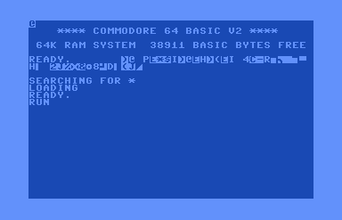</li>
    <li><b>A save file holds the whole world.</b> CTRL + S writes 1904 bytes gathered from 14 blocks (<code>$8260</code>): every square's state, every object's position, the scripts' state, the credits and the whole zero page. One of the blocks is <code>$8000</code>-<code>$803F</code>, so a position saved from the original disk carries its CBM80 signature into any copy that loads it.</li>
    <li><b>The escape waits for the author.</b> With the billboard at 02-03 destroyed, the author's advert for his earlier game Encounter, your ship refuses to leave: THE AUTHOR WON'T LET YOU LEAVE UNTIL YOU FIX HIS ADVERT (script 7 tests <code>$2B00</code> + <code>$32</code>). The Anti Time Bomb repairs it.</li>
    <li><b>GAME OVER, for ever.</b> After the escape the script machine's busy flag (bit 6 of <code>$BEC0</code>) is never cleared, so no other event runs again, and GAME OVER comes round every 18 seconds or so: a 15-second wait, then the line.</li>
    <li><b>The attacking ship's missile is not homing.</b> The ship itself closes in by 1/32 of the distance each pass, but its missile is aimed once, at launch, and flies straight.</li>
    <li><b>00-00 has a building nobody has seen.</b> Square number 0 also means "outside the city", so the model the table gives it (<code>$E424</code>) is never loaded.</li>
    <li><b>You can never have exactly 999,999 credits.</b> Hertz's ship costs 999,999, but the test at <code>$0E6F</code> wants the top byte of the credits above zero: 1,000,000. It makes no difference: you start with 9000 and every price is a multiple of 5000, so your credits always end in 4000 or 9000.</li>
  </ul>
</section>
</main>
<footer style="margin:16px 0 0;padding:22px var(--gx) 0;border-top:1px solid #e0ded8;font-family:'IBM Plex Mono',ui-monospace,Menlo,monospace;font-size:12px;color:#80838a"><a href="https://github.com/gamesexplained/gamesexplained" aria-label="GitHub" style="display:inline-flex;align-items:center;justify-content:center;width:26px;height:26px;margin-left:8px;border:1px solid #e0ded8;border-radius:7px;background:#ffffff;color:#80838a;vertical-align:middle"><svg width="15" height="15" viewBox="0 0 24 24" fill="currentColor" aria-hidden="true"><path d="M12 .297c-6.63 0-12 5.373-12 12 0 5.303 3.438 9.8 8.205 11.385.6.113.82-.258.82-.577 0-.285-.01-1.04-.015-2.04-3.338.724-4.042-1.61-4.042-1.61C4.422 18.07 3.633 17.7 3.633 17.7c-1.087-.744.084-.729.084-.729 1.205.084 1.838 1.236 1.838 1.236 1.07 1.835 2.809 1.305 3.495.998.108-.776.417-1.305.76-1.605-2.665-.3-5.466-1.332-5.466-5.93 0-1.31.465-2.38 1.235-3.22-.135-.303-.54-1.523.105-3.176 0 0 1.005-.322 3.3 1.23.96-.267 1.98-.399 3-.405 1.02.006 2.04.138 3 .405 2.28-1.552 3.285-1.23 3.285-1.23.645 1.653.24 2.873.12 3.176.765.84 1.23 1.91 1.23 3.22 0 4.61-2.805 5.625-5.475 5.92.42.36.81 1.096.81 2.22 0 1.606-.015 2.896-.015 3.286 0 .315.21.69.825.57C20.565 22.092 24 17.592 24 12.297c0-6.627-5.373-12-12-12"/></svg></a><a href="https://discord.gg/3V9GWyRDWV" aria-label="Discord" style="display:inline-flex;align-items:center;justify-content:center;width:26px;height:26px;margin-left:8px;border:1px solid #e0ded8;border-radius:7px;background:#ffffff;color:#80838a;vertical-align:middle"><svg width="15" height="15" viewBox="0 0 24 24" fill="currentColor" aria-hidden="true"><path d="M20.317 4.3698a19.7913 19.7913 0 00-4.8851-1.5152.0741.0741 0 00-.0785.0371c-.211.3753-.4447.8648-.6083 1.2495-1.8447-.2762-3.68-.2762-5.4868 0-.1636-.3933-.4058-.8742-.6177-1.2495a.077.077 0 00-.0785-.037 19.7363 19.7363 0 00-4.8852 1.515.0699.0699 0 00-.0321.0277C.5334 9.0458-.319 13.5799.0992 18.0578a.0824.0824 0 00.0312.0561c2.0528 1.5076 4.0413 2.4228 5.9929 3.0294a.0777.0777 0 00.0842-.0276c.4616-.6304.8731-1.2952 1.226-1.9942a.076.076 0 00-.0416-.1057c-.6528-.2476-1.2743-.5495-1.8722-.8923a.077.077 0 01-.0076-.1277c.1258-.0943.2517-.1923.3718-.2914a.0743.0743 0 01.0776-.0105c3.9278 1.7933 8.18 1.7933 12.0614 0a.0739.0739 0 01.0785.0095c.1202.099.246.1981.3728.2924a.077.077 0 01-.0066.1276 12.2986 12.2986 0 01-1.873.8914.0766.0766 0 00-.0407.1067c.3604.698.7719 1.3628 1.225 1.9932a.076.076 0 00.0842.0286c1.961-.6067 3.9495-1.5219 6.0023-3.0294a.077.077 0 00.0313-.0552c.5004-5.177-.8382-9.6739-3.5485-13.6604a.061.061 0 00-.0312-.0286zM8.02 15.3312c-1.1825 0-2.1569-1.0857-2.1569-2.419 0-1.3332.9555-2.4189 2.157-2.4189 1.2108 0 2.1757 1.0952 2.1568 2.419 0 1.3332-.9555 2.4189-2.1569 2.4189zm7.9748 0c-1.1825 0-2.1569-1.0857-2.1569-2.419 0-1.3332.9554-2.4189 2.1569-2.4189 1.2108 0 2.1757 1.0952 2.1568 2.419 0 1.3332-.946 2.4189-2.1568 2.4189Z"/></svg></a><br>© Games Explained contributors. Write-ups, facts and symbol maps are available under <a href="https://creativecommons.org/licenses/by-sa/4.0/" style="color:#1f5fa8;text-decoration:none">CC BY-SA 4.0</a>; code under <a href="https://opensource.org/licenses/MIT" style="color:#1f5fa8;text-decoration:none">MIT</a></footer>
<script src="../../lib/c64.js"></script>
<script>
window.MERC_GAME = window.C64 ? C64.load('listing.json') : Promise.reject(new Error('no C64'));
window.MERC_GAME.catch(() => {});
</script>
<script>
/* city */
// The city of Targ in lines: the game's own view pipeline, ported routine by routine, drawing into
// a copy of the game's bitmap layout. Every routine keeps the game's arithmetic: two-byte
// logarithmic floats (the log tables at $5800/$5900, the sine table at $5A00/$5B00, all read from
// listing.json), the same rounding, the same clipping and the same eight line routines, so the
// picture is the game's, pixel for pixel. The node tests in work/tests/ run the game's code in a
// 6502 simulator on snapshot memory and compare.
(function () {
  'use strict';

  // ---------------------------------------------------------------------------------------------
  // The engine. ram: a 64 KB Uint8Array holding the game (C64.load's ram).
  function makeEngine(ram) {
    const LOG = ram.slice(0x5800, 0x5900), ALOG = ram.slice(0x5900, 0x5A00);
    const SINM = ram.slice(0x5A00, 0x5B00), SINE = ram.slice(0x5B00, 0x5C00);

    // A float is packed as (exponent byte << 8) | mantissa byte. The exponent byte holds a
    // signed power of two in bits 2-7 and the sign in bit 0: value = +-(1 + m/256) * 2^e.
    const sat = r8 => (r8 & 0x80 ? ((r8 & 1) | 0x78) : ((r8 & 1) | 0x84)) << 8;   // $831A
    // $82FA fp_mul: a (X, Y) times b ($08, $09); saturates on exponent overflow.
    function fmul(a, b) {
      let s = LOG[a & 255] + LOG[b & 255], A = a >> 8;
      if (s > 255) { s &= 255; A = (A + 4) & 255; }
      const B = b >> 8, r8 = (A + B) & 255;
      if (~(A ^ B) & (A ^ r8) & 0x80) return sat(r8);
      return ((r8 & 0xFD) << 8) | ALOG[s];
    }
    // the same multiply written inline in the projection, with no overflow test
    function lmul(a, b) {
      let s = LOG[a & 255] + LOG[b & 255], A = a >> 8;
      if (s > 255) { s &= 255; A = (A + 4) & 255; }
      return ((((A + (b >> 8)) & 255) & 0xFD) << 8) | ALOG[s];
    }
    // $8334 fp_div: num ($08, $09) over den (X, Y); saturates like fp_mul.
    function fdiv(num, den) {
      let d = LOG[num & 255] - LOG[den & 255], A = (num >> 8) | 2;
      if (d < 0) { d &= 255; A = (A - 4) & 255; }
      const B = den >> 8, r8 = (A - B) & 255;
      if ((A ^ B) & (A ^ r8) & 0x80) return sat(r8);
      return ((r8 & 0xFD) << 8) | ALOG[d];
    }
    // the inline divide (log subtract), no overflow test
    function ldiv(num, den) {
      let d = LOG[num & 255] - LOG[den & 255], A = (num >> 8) | 2;
      if (d < 0) { d &= 255; A = (A - 4) & 255; }
      return ((((A - (den >> 8)) & 255) & 0xFD) << 8) | ALOG[d];
    }
    // $83D5 fp_normalise: a difference A (1-255) at exponent byte e
    function normalise(A, e) {
      let k = 0;
      do { k++; const c = A & 0x80; A = (A << 1) & 255; if (c) break; } while (true);
      const B = (-4 * k) & 255, r8 = (B + e) & 255;
      if (~(B ^ e) & (B ^ r8) & 0x80) return 0x8400;
      return (r8 << 8) | A;
    }
    // $838B fp_add: a (X, Y) plus b ($08, $09). The smaller mantissa, its leading 1 restored,
    // is shifted right by the exponent difference; 9 or more returns the larger; truncates.
    function fadd(a, b) {
      const X = a & 255, Y = a >> 8, m8 = b & 255, e9 = b >> 8;
      const d = (Y - e9) & 255, C = Y >= e9 ? 1 : 0;
      const bigger = () => (Y & 0x80 ? b : a);                                      // $836C
      if ((Y ^ e9) & (Y ^ d) & 0x80) return bigger();
      const a2 = (d + 1 + C) & 255;
      if (~(d ^ 1) & (d ^ a2) & 0x80) return bigger();
      const unlike = d & 1;
      if (a2 & 0x80) {                                  // $83F5: b is the larger
        if (a2 < 0xE0) return b;
        const sh = 8 - ((a2 >> 2) & 7), M = ((256 + X) >> sh) & 255;
        if (!unlike) { let s = m8 + M, e = e9; if (s > 255) { s = (s & 255) >> 1; e = (e + 4) & 255; } return (e << 8) | s; }
        const s = m8 - M;
        return s >= 0 ? (e9 << 8) | s : normalise(s & 255, e9);
      }
      const a3 = a2 >> 2;
      if (a3 === 0) {                                   // $8359: equal exponents
        if (!unlike) return (((Y + 4) & 255) << 8) | ((X + m8) >> 1);
        const s = X - m8;
        if (s === 0) { const r = (Y - 0x24) & 255; return ((Y ^ 0x24) & (Y ^ r) & 0x80) ? ((r & 1) | 0x84) << 8 : r << 8; }
        if (s > 0) return normalise(s, Y);
        return normalise(-s, e9);
      }
      if (a3 >= 9) return a;
      const M = ((256 + m8) >> a3) & 255;
      if (!unlike) { let s = X + M, e = Y; if (s > 255) { s = (s & 255) >> 1; e = (e + 4) & 255; } return (e << 8) | s; }
      const s = X - M;
      return s >= 0 ? (Y << 8) | s : normalise(s & 255, Y);
    }
    const neg = f => f ^ 0x100;
    // $8477 fp_to_int8: rounded to nearest, halves away from zero; NaN where the game sets the carry
    function toInt8(f) {
      const m = f & 255, Y = f >> 8;
      let A;
      if (Y & 0x80) A = Y >= 0xFC ? 1 : 0;
      else {
        const e = Y >> 2;
        if (e >= 7) return NaN;
        const v = 256 + m, sh = 8 - e;
        A = (v >> sh) + ((v >> (sh - 1)) & 1);
        if (A & 0x80) return NaN;
      }
      return Y & 1 ? -A : A;
    }
    // $84A7 fp_to_int16: truncated, ones' complement for negatives; -1 where the carry is set
    function toInt16(f) {
      const m = f & 255, Y = f >> 8;
      if (Y & 0x80) return Y & 1 ? 0xFFFF : 0;
      const e = Y >> 2;
      if (e >= 15) return -1;
      const v = ((256 + m) << 7) >> (15 - e);
      return Y & 1 ? ~v & 0xFFFF : v;
    }
    // $8510 int24_to_fp: signed 24-bit (hi, mid, lo) to a float, truncating
    function i24f(hi, mid, lo) {
      const sign = hi & 0x80 ? 1 : 0;
      if (sign) { const v = (0x1000000 - ((hi << 16) | (mid << 8) | lo)) & 0xFFFFFF; hi = v >> 16; mid = (v >> 8) & 255; lo = v & 255; }
      let A, low, X;
      if (hi) { A = hi; low = mid; X = 24; } else if (mid) { A = mid; low = lo; X = 16; } else if (lo) { A = lo; low = 0; X = 8; } else return 0xE000;
      for (;;) { X--; const c1 = low >> 7, c = A >> 7; low = (low << 1) & 255; A = ((A << 1) | c1) & 255; if (c) break; }
      return (((X << 2) | sign) << 8) | A;
    }
    const i24d = d => i24f((d >> 16) & 255, (d >> 8) & 255, d & 255);   // a 24-bit difference
    // $841F / $841E: sine and cosine of a 10-bit angle (hi byte's bits 0-1 the quadrant)
    function sin10(lo, hi) {
      let X = lo & 255; if (hi & 1) X ^= 255;
      return (((SINE[X] | ((hi >> 1) & 1)) & 255) << 8) | SINM[X];
    }
    const cos10 = (lo, hi) => sin10(lo, hi + 1);
    const fval = f => (f >> 8 & 1 ? -1 : 1) * (1 + (f & 255) / 256) * Math.pow(2, ((f >> 10) & 63) - ((f >> 10) & 32 ? 64 : 0));

    // ------------------------------------------------------------------ the view state
    const S = {
      x: 0x088800, h: 0x00003F, y: 0x088800,      // $72-$74, $75-$77, $78-$7A (24 bits each)
      roll: 0, pitch: 512, head: 0,               // $28/$29, $2A/$2B, $2C/$2D
      spin: 0,                                    // $99/$9A
      foot: false,                                // $A9 bit 7: on foot, the heading-only transform
      mirror: 0,                                  // $F1
      descent1: false,                            // $9E93 still a JSR: road ends at 8 x depth
      cx: 80, cy: 68,                             // $8E, $8F
      win: [0, 0, 0, 0],                          // $90, $92, $94, $96 (floats)
      c: 0,                                       // $8C/$8D
    };
    const T = {};                                 // trig floats
    const Mx = new Int32Array(9);                 // $40-$51: x' row, y' row, depth row
    // vertex slots ($0100-$07FF)
    const fl = new Uint8Array(64), sx = new Uint8Array(64), sy = new Uint8Array(64);
    const qx = new Int32Array(64), qy = new Int32Array(64), vx = new Int32Array(64), vy = new Int32Array(64), vz = new Int32Array(64);

    function trig() {                                                              // $A544
      const r = S.roll, p = S.pitch, h = S.head, s = S.spin;
      T.cosR = cos10(r & 255, r >> 8); T.sinR = sin10(r & 255, r >> 8);
      T.tanR = fdiv(T.sinR, T.cosR); T.cotR = fdiv(T.cosR, T.sinR);
      T.cosP = cos10(p & 255, p >> 8); T.sinP = sin10(p & 255, p >> 8);
      T.tanP = fdiv(T.sinP, T.cosP);
      T.sinH = sin10(h & 255, h >> 8); T.cosH = cos10(h & 255, h >> 8);
      T.sinS = sin10(s & 255, s >> 8); T.cosS = cos10(s & 255, s >> 8);
    }
    function centreOffset() {                                                      // $94E0
      const h77 = (S.h >> 16) & 255, h76 = (S.h >> 8) & 255;
      if (h77) S.c = 0x1000;
      else { const f = i24f(0, 0, h76); const e = f >> 8; S.c = ((e & 0x80 ? e : (e - 0x10) & 255) << 8) | (f & 255); }
    }
    function matrix() {                                                            // $A320
      const F1 = S.mirror & 1;
      const t1 = fmul(T.sinP, T.sinR), t2 = fmul(T.sinH, t1);
      Mx[0] = fadd(t2, fmul(T.cosH, T.cosR)) ^ (F1 << 8);
      const m42 = fmul(T.cosP, T.sinR) ^ 0x100 ^ (F1 << 8); Mx[1] = m42;
      const P = fmul(S.c, m42);
      S.cx = (80 + toInt8(P)) & 255;
      S.win[0] = fadd(0x1940, neg(P)); S.win[1] = fadd(0x1C3E, S.win[0]);
      const t3 = fmul(T.cosH, t1);
      Mx[2] = fadd(t3, fmul(neg(T.sinH), T.cosR)) ^ (F1 << 8);
      const t4 = fmul(T.sinP, T.cosR);
      const t5 = fmul(T.sinH, t4) ^ 0x100;
      Mx[3] = fadd(t5, fmul(T.cosH, T.sinR));
      Mx[4] = fmul(T.cosP, T.cosR);
      const Q = fmul(S.c, Mx[4]);
      S.cy = (68 + toInt8(Q)) & 255;
      S.win[2] = fadd(0x1910, neg(Q)); S.win[3] = fadd(0x1C0E, S.win[2]);
      const t6 = fmul(T.cosH, t4);
      Mx[5] = fadd(t6, fmul(T.sinH, T.sinR)) ^ 0x100;
      Mx[6] = fmul(T.sinH, T.cosP);
      Mx[7] = T.sinP;
      Mx[8] = fmul(T.cosH, T.cosP);
    }
    // $A75C / $A979 / $A8E9: project the point (X, H, Y) relative to the eye into slot n
    let r6A = 0, r6B = 0;                         // $6A/$6B keep their last value when a conversion fails
    const count = { v: 0, e: 0 };                 // vertices projected and edges drawn this pass
    function project(n, X, H, Y) {
      count.v++;
      let flag, x1, q1 = 0, q2 = 0, z, y1;
      if (S.foot) {
        z = fadd(lmul(X, T.sinH), lmul(Y, T.cosH)) ^ 0x100;
        flag = (z >> 8) & 1 ? 0x80 : 0;
        x1 = fadd(lmul(X, T.cosH), lmul(Y, T.sinH) ^ 0x100) ^ ((S.mirror & 1) << 8);
        y1 = H ^ 0x100;
      } else {
        z = fadd(lmul(X, Mx[6]), fadd(lmul(H, Mx[7]), lmul(Y, Mx[8])));
        flag = (z >> 8) & 1 ? 0x80 : 0;
        x1 = fadd(lmul(X, Mx[0]), fadd(lmul(H, Mx[1]), lmul(Y, Mx[2])));
        y1 = fadd(lmul(X, Mx[3]), fadd(lmul(H, Mx[4]), lmul(Y, Mx[5])));
      }
      if (!flag) {                               // x = $8E + 64 x'/z
        q1 = ldiv(x1, z);
        const e8 = ((q1 >> 8) + 0x18) & 255;
        if (((q1 >> 8) ^ e8) & (0x18 ^ e8) & 0x80) flag = 1;
        else { const v = toInt8((e8 << 8) | (q1 & 255)); if (v !== v) flag = 1; else { r6A = (v + S.cx) & 255; if (r6A >= 160) flag = 1; } }
      }
      // $A8E9: y' doubled for the wide pixels, then y = $8F + 64 * 2y'/z
      const ye = y1 >> 8, ye4 = (ye + 4) & 255;
      if (!(~(ye ^ 4) & (ye ^ ye4) & 0x80)) y1 = (ye4 << 8) | (y1 & 255);
      if (!(flag & 0x80)) {
        q2 = ldiv(y1, z);
        const e8 = ((q2 >> 8) + 0x18) & 255;
        if (((q2 >> 8) ^ e8) & (0x18 ^ e8) & 0x80) flag |= 2;
        else { const v = toInt8((e8 << 8) | (q2 & 255)); if (v !== v) flag |= 2; else { r6B = (v + S.cy) & 255; if (r6B >= 136) flag |= 2; } }
        qx[n] = q1; qy[n] = q2; sx[n] = r6A; sy[n] = r6B;
      }
      fl[n] = flag; vx[n] = x1; vy[n] = y1; vz[n] = z;
    }

    // ------------------------------------------------------------------ lines
    let bits = null, page = 0;                   // the bitmap being drawn and its base offset
    let orMode = false;                          // $AE02 (ORA, pair |= %01) or $ADFC (AND, pair = %00)
    const CLIPX = [0x9F, 0x9F, 0, 0, 0, 0, 0x9F, 0x9F], CLIPY = [0x87, 0x87, 0x87, 0x87, 0, 0, 0, 0];
    const OCT = ram.slice(0xBBD0, 0xBBD8), CLIPIDX = ram.slice(0xBBE8, 0xBBF8), CSTART = ram.slice(0xBBF8, 0xBC18);
    const CEND = ram.slice(0xBC18, 0xBC40);      // $BC18 + 32 reaches $BC38 (octant_lo), as the game's index does
    function plot(x, y) {
      const a = page + (y >> 3) * 320 + (y & 7) + (x >> 2) * 8, sh = 6 - 2 * (x & 3);
      bits[a] = orMode ? bits[a] | (1 << sh) : bits[a] & ~(3 << sh);
    }
    // the eight line routines at $AC61 + 47n: plot, stop at the end's major coordinate, step
    function line(oct, x, y, ex, ey, slope) {
      let err = 0x80, guard = 0;
      for (;;) {
        if (x > 255 || y > 255 || ++guard > 512) return;
        plot(x, y);
        switch (oct) {
          case 0: { if (x === ex) return; const c = x >= ex ? 1 : 0; x++; err += slope + c; if (err > 255) { err &= 255; y++; if (y === 0x88) return; } break; }
          case 1: { if (y === ey) return; const c = y >= ey ? 1 : 0; y++; err += slope + c; if (err > 255) { err &= 255; x++; if (x === 0xA0) return; } break; }
          case 2: { if (y === ey) return; const c = y >= ey ? 1 : 0; y++; err += slope + c; if (err > 255) { err &= 255; x--; if (x < 0) return; } break; }
          case 3: { if (x === ex) return; const c = x >= ex ? 1 : 0; x--; err -= slope + 1 - c; if (err < 0) { err &= 255; y++; if (y === 0x88) return; } break; }
          case 4: { if (x === ex) return; const c = x >= ex ? 1 : 0; x--; err -= slope + 1 - c; if (err < 0) { err &= 255; y--; if (y < 0) return; } break; }
          case 5: { if (y === ey) return; const c = y >= ey ? 1 : 0; y--; err += slope + c; if (err > 255) { err &= 255; x--; if (x < 0) return; } break; }
          case 6: { if (y === ey) return; const c = y >= ey ? 1 : 0; y--; err -= slope + 1 - c; if (err < 0) { err &= 255; x++; if (x === 0xA0) return; } break; }
          case 7: { if (x === ex) return; const c = x >= ex ? 1 : 0; x++; err += slope + c; if (err > 255) { err &= 255; y--; if (y < 0) return; } break; }
        }
      }
    }
    // $99DD draw_edge between slots a and b
    function edge(a, b) {
      count.e++;
      let X = a, Y = b;
      const fa = fl[X];
      if (fa !== 0) {
        let swap = false;
        if (fa & 0x80) swap = true;
        else {
          const fb = fl[Y];
          if (fb === 0) swap = true;
          else if (!(fb & 0x80) && ((vz[X] >> 8) ^ 0x80) < ((vz[Y] >> 8) ^ 0x80)) swap = true;
        }
        if (swap) { X = b; Y = a; if (fl[X] & 0x80) return; }
      }
      const f6e = fl[X], f6f = fl[Y];
      let x0 = sx[X], y0 = sy[X], ex = sx[Y], ey = sy[Y];
      const p5e = qx[X], p60 = qy[X], p62 = qx[Y], p64 = qy[Y];
      let code, slope, ratio;                    // $67, $68/$69, the minor/major ratio
      if (f6f & 0x80) {                          // $9B2C: the end is behind the eye
        const r = ldiv(vz[Y], vz[X]) ^ 0x100;
        const dX = fadd(vx[Y], lmul(r, vx[X]));
        code = ((((dX >> 8) ^ (vz[X] >> 8)) << 1) & 2);
        const dY = fadd(vy[Y], lmul(r, vy[X]));
        code |= ((dY >> 8) ^ (vz[X] >> 8)) & 1;
        slope = ldiv(dY, dX); ratio = slope;
        if (!((slope >> 8) & 0x80)) { code |= 4; ratio = ldiv(dX, dY); }
      } else {                                   // $9A94: both in front
        const dX = fadd(p62, p5e ^ 0x100);
        code = ((dX >> 8) << 1) & 2;
        const dY = fadd(p64, p60 ^ 0x100);
        code |= (dY >> 8) & 1;
        slope = ldiv(dY, dX); ratio = slope;
        if (!((slope >> 8) & 0x80)) { code |= 4; ratio = ldiv(dX, dY); }
      }
      let s66;
      if ((ratio >> 8) & 0x80) s66 = toInt16(((((ratio >> 8) + 0x20) & 0xFC) << 8) | (ratio & 255)) & 255;
      else s66 = 0xFF;
      const oct = OCT[code];
      if (f6f) { ex = CLIPX[oct]; ey = CLIPY[oct]; }
      if (f6e === 0) return line(oct, x0, y0, ex, ey, s66);
      // $9C36 edge_clip_start: the start is in front but off screen
      let i = ((p60 >> 8) << 2 & 4) | f6e | ((p5e >> 8) << 3 & 8);
      const enter = CSTART[(oct | CLIPIDX[i]) >> 1];
      if (!enter) return;
      if (!(f6f & 0x80)) {
        i = ((p64 >> 8) << 2 & 4) | f6f | ((p62 >> 8) << 3 & 8);
        if (!CEND[(oct | CLIPIDX[i]) >> 1]) return;
      }
      const at = (w, pos, g) => {                // a crossing in screen pixels, or -1
        const e = (g >> 8) + 0x18, e8 = e & 255;
        if (((g >> 8) ^ e8) & (0x18 ^ e8) & 0x80) return -1;
        const v = toInt8((e8 << 8) | (g & 255));
        if (v !== v) return -1;
        const s = (v + pos) & 255;
        return s < w ? s : -1;
      };
      const edgeF = w => (((w >> 8) - 0x18) & 255) << 8 | (w & 255);
      if (enter & 1) {                           // right, x = 159
        const g = fadd(p60, fmul(slope, fadd(p5e ^ 0x100, edgeF(S.win[1]))));
        const yy = at(0x88, S.cy, g);
        if (yy >= 0) return line(oct, 0x9F, yy, ex, ey, s66);
      }
      if (enter & 2) {                           // bottom, y = 135
        const g = fadd(p5e, fdiv(fadd(p60 ^ 0x100, edgeF(S.win[3])), slope));
        const xx = at(0xA0, S.cx, g);
        if (xx >= 0) return line(oct, xx, 0x87, ex, ey, s66);
      }
      if (enter & 4) {                           // left, x = 0
        const g = fadd(p60, fmul(slope, fadd(p5e ^ 0x100, edgeF(S.win[0]))));
        const yy = at(0x88, S.cy, g);
        if (yy >= 0) return line(oct, 0, yy, ex, ey, s66);
      }
      if (enter & 8) {                           // top, y = 0
        const g = fadd(p5e, fdiv(fadd(p60 ^ 0x100, edgeF(S.win[2])), slope));
        const xx = at(0xA0, S.cx, g);
        if (xx >= 0) return line(oct, xx, 0, ex, ey, s66);
      }
    }

    // ------------------------------------------------------------------ sky and ground ($AFD5)
    function fillRow(row, left, right, cut) {    // cells 0..38-c = left, cell 39-c = cut, the rest right
      const base = page + (row >> 3) * 320 + (row & 7);
      for (let cell = 0; cell < 40; cell++) bits[base + cell * 8] = cell < 39 - cut.c ? left : cell === 39 - cut.c ? cut.b : right;
    }
    function fillWhole(row, v) { const base = page + (row >> 3) * 320 + (row & 7); for (let cell = 0; cell < 40; cell++) bits[base + cell * 8] = v; }
    const EDGEB = ram.slice(0xBC4C, 0xBC50);
    function skyGround() {
      let b82, b83, b84;
      if (((((((S.pitch >> 8) + 1) ^ (S.roll >> 8)) >> 1) ^ S.mirror) & 1)) { b82 = 0xAA; b83 = 0x55; b84 = 0xFF; }
      else { b82 = 0x55; b83 = 0xAA; b84 = 0; }
      const ce = ((T.cotR >> 8) ^ 1 ^ S.mirror) & 255;
      const d7d = ce & 1;
      let step;                                  // $7C:$7B, 8.8 fixed point
      const e = ((ce & 0xFC) + 0x18) & 255;
      if (~((ce & 0xFC) ^ 0x18) & ((ce & 0xFC) ^ e) & 0x80) step = 0xFFFF;
      else { const v = toInt16((e << 8) | (T.cotR & 255)); step = v < 0 ? 0xFFFF : v; }
      step = (step << 1) & 0xFFFF;
      let hh; { const te = T.tanP >> 8, e2 = (te + 0x18) & 255; hh = (~(te ^ 0x18) & (te ^ e2) & 0x80) ? 0x7400 : (e2 << 8) | (T.tanP & 255); }
      let row = 0, xp = -1;
      const top = fadd(fdiv(hh ^ 0x100, T.sinR), fdiv(0x140C, T.tanR));
      let v = toInt8(top ^ ((S.mirror & 1) << 8));
      if (v === v) { v = (v + 0x50) & 255; if (v < 0xA0) xp = v; }
      if (xp < 0) {                              // $B06A: the side edge
        const s1 = fdiv(hh, T.cosR);
        const s2 = fmul(T.tanR ^ ((S.mirror & 1) << 8), 0x193C ^ (d7d << 8));
        let g = fadd(s1, s2), ge = g >> 8; const ge4 = (ge + 4) & 255;
        let y = NaN;
        if (!(~(ge ^ 4) & (ge ^ ge4) & 0x80)) { const w = toInt8((ge4 << 8) | (g & 255)); if (w === w) { const yy = (w + 0x44) & 255; if (yy < 0x88) y = yy; } }
        if (y !== y) {                           // $B0AA: the horizon is off the view
          const which = ((((S.roll >> 8) + 3) & 255) >> 1 ^ (S.pitch >> 8) ^ d7d) & 1;
          for (let r = 0; r < 136; r++) fillWhole(r, which ? b83 : b82);
          return;
        }
        const n = (135 - y) & 255;
        const fillv = d7d ? b83 : b82;
        for (let r = 0; r < n; r++) fillWhole(row++, fillv);
        xp = d7d ? 0x9F : 1;
      }
      // $B0E1: the split rows
      let frac = 0;
      for (;;) {
        const c = xp >> 2;
        fillRow(row, b82, b83, { c, b: EDGEB[xp & 3] ^ b84 });
        if (++row === 136) return;
        if (!d7d) {
          const f = frac + (step & 255); frac = f & 255;
          const nx = xp + (step >> 8) + (f >> 8);
          if (nx > 255 || nx >= 0xA0) break;
          xp = nx;
        } else {
          const f = frac - (step & 255); frac = f & 255;
          const nx = xp - (step >> 8) - (f < 0 ? 1 : 0);
          if (nx < 0) break;
          xp = nx;
        }
      }
      const rest = d7d ? b82 : b83;              // $B168
      while (row < 136) fillWhole(row++, rest);
    }

    // ------------------------------------------------------------------ buildings
    // $9575 load_building: the model of square sq, its vertices placed in square (qx, qy)
    const modelAddr = sq => ram[0x2600 + sq] | ram[0x2700 + sq] << 8;
    function loadModel(sq) { return loadModelAt(modelAddr(sq), sq); }
    function loadModelAt(p, sq) {
      const addr = p;
      const nv = ram[p] + 1, lastEdge = ram[p + 1], pen = ram[p + 2], r = ram[p + 3];
      let y = 3, nrot = 0, speed = null, rcx = 0, rcz = 0;
      if (r) { nrot = (r & 15) + 1; speed = (r & 0xF0) >> 1; rcx = ram[p + 4]; rcz = ram[p + 5]; y = 5; }
      const from = [], to = [];
      let wide = false;
      while (from.length <= lastEdge) {
        if (!wide) { const b = ram[p + ++y]; if (b === 0) { wide = true; continue; } from.push(b >> 4); to.push(b & 15); }
        else { from.push(ram[p + ++y]); to.push(ram[p + ++y]); }
      }
      const V = [];                              // {x, h, z}: middle bytes and low bytes (x and z mid, h mid/lo)
      const rx = [], rz = [];
      let b06 = 0;
      for (let i = 0; i < nv; i++) {
        if (i < nrot) {
          const fx = i24f(ram[p + ++y], 0, 0); const hb = ram[p + ++y]; const fz = i24f(ram[p + ++y], 0, 0);
          rx.push(((((fx >> 8) - 0x28) & 255) << 8) | (fx & 255)); rz.push(((((fz >> 8) - 0x28) & 255) << 8) | (fz & 255));
          V.push({ x: 0, hm: hb, hl: 0, z: 0, xl: 0, zl: 0, raw: [ram[p + y - 2], hb, ram[p + y]] });
          continue;
        }
        const coord = () => { const b = ram[p + ++y]; b06 = ((b06 << 2) | (b >> 6)) & 255; const c = b & 63; return c === 0 ? 0 : c === 63 ? 255 : c + 0x60; };
        const x = coord(), z = coord();
        let hm = 0, hl = 0;
        const code = b06 & 15;
        if (b06 !== 0) {
          hm = code;
          if (code === 15) {
            const b = ram[p + ++y];
            if (b & 0x80) { hl = (b << 4) & 255; b06 = ((b06 << 3) | ((b >> 4) & 7)) & 255; hm = b06 & 7; } else hm = b;
          }
        }
        V.push({ x, hm, hl, z, xl: 0, zl: 0 });
      }
      return { sq, addr, nv, from, to, pen, nrot, speed, rcx, rcz, rx, rz, V, end: p + y, rotor: r };
    }
    // $96AC collapse_step, repeated until flat ($96A6): a destroyed building
    function collapse(m) {
      for (;;) {
        let moved = 0;
        for (let i = m.nv - 1; i >= 0; i--) {
          const v = m.V[i];
          if (!v.hm) continue;
          moved++; v.hm--;
          if (v.x & 0x80) v.x = (v.x - 1) & 255; else v.x = (v.x + 1) & 255;
          if (v.z & 0x80) v.z = (v.z - 1) & 255; else v.z = (v.z + 1) & 255;
        }
        if (!moved) return;
      }
    }
    // $A4B2 spin_points: turn the rotor's vertices by the spin angle
    function spinPoints(m) {
      for (let i = m.nrot - 1; i >= 0; i--) {
        const a = toInt16(fadd(fmul(T.cosS, m.rx[i]), fmul(T.sinS, neg(m.rz[i]))));
        m.V[i].xl = a & 255; m.V[i].x = ((a >> 8) + m.rcx) & 255;
        const b = toInt16(fadd(fmul(T.sinS, m.rx[i]), fmul(T.cosS, m.rz[i])));
        m.V[i].zl = b & 255; m.V[i].z = ((b >> 8) + m.rcz) & 255;
      }
    }
    // $96D8 project_building, with the vertices in square (sqx, sqy)
    function projectModel(m, sqx, sqy) {
      for (let i = m.nv - 1; i >= 0; i--) {
        const v = m.V[i];
        const X = i24d(((sqx << 16) | (v.x << 8) | v.xl) - S.x);
        const H = i24d(((v.hm << 8) | v.hl) - S.h);
        const Y = i24d(((sqy << 16) | (v.z << 8) | v.zl) - S.y);
        project(i, X, H, Y);
      }
    }
    // $96E7 draw_building: edges from the last down; after the pen split with ORA, then AND.
    // noRoads leaves out the edges to the road ends, points 60-63 (for the page's all-buildings view).
    function drawModel(m, noRoads) {
      orMode = true;
      for (let k = m.from.length - 1; k >= 0; k--) {
        if (k === m.pen) orMode = false;
        if (noRoads && (m.from[k] >= 60 || m.to[k] >= 60)) continue;
        edge(m.from[k], m.to[k]);
      }
    }

    // ------------------------------------------------------------------ roads
    const R = { pts: new Uint8Array(64), ef: new Uint8Array(64), et: new Uint8Array(64), B5: 0x3C, B6: 2, B9: 0xFF, EE: 0xFF, B7: 0, sqx: -1, sqy: -1, win: null };
    R.ef[1] = 0x3C; R.et[1] = 0x3D; R.ef[2] = 0x3E; R.et[2] = 0x3F;
    function slotOf(v) {                                                           // $8FAE
      for (let x = R.B5; x < 0x40; x++) if (R.pts[x] === v) return x;
      R.B5--; R.pts[R.B5] = v; return R.B5;
    }
    function roadAdd(x, a) {                                                       // $8FC3
      if (a === R.B7 || x === R.B7) return;
      const sX = slotOf(x), sA = slotOf(a);
      for (let e = R.B6; e >= 1; e--) if (R.ef[e] === sA && R.et[e] === sX) return;
      R.B6++; R.ef[R.B6] = sA; R.et[R.B6] = sX;
    }
    // $8F7F: one axis of the window. Returns the first square in A and the width in X; on a miss
    // (the window misses the city) the carry is set and X keeps its value, as in the game.
    function axis(p, r, X) {
      const w = (2 * r + 1) & 255;
      let A = (p - r) & 255;
      if (A & 0x80) {
        A = (A + w) & 255;
        if (A & 0x80 || A === 0) return { A, X, miss: 1 };
        return { A: 0, X: A >= 0x11 ? 16 : A, miss: 0 };
      }
      if (A >= 16) return { A, X, miss: 1 };
      const n = 16 - A;
      return { A, X: n >= w ? w : n, miss: 0 };
    }
    // $8EC2 build_road_list for radius r; X is the register at entry (the height index)
    function buildRoads(r, X) {
      const sx74 = (S.x >> 16) & 255, sy7a = (S.y >> 16) & 255;
      const ax = axis(sx74, r, X);
      const first = ax.A, w19 = ax.X;
      const ay = axis(sy7a, r, ax.X);
      let rowStart = ((ay.A << 4) | first) & 255;
      X = ay.X;
      if (X === 16 && X === w19) { if (R.EE === 0) return; R.EE = rowStart; } else R.EE = 0xFF;
      R.B5 = 0x3C; R.B6 = 2;
      if ((sx74 | sy7a) & 0xF0) { R.pts[0x3C] = R.pts[0x3D] = R.pts[0x3F] = 0; R.B7 = 0; R.pts[0x3E] = 0; }
      else { const b = R.B7; R.pts[0x3D] = ram[0x2C00 + b]; R.pts[0x3C] = ram[0x2D00 + b]; R.pts[0x3F] = ram[0x2E00 + b]; R.pts[0x3E] = ram[0x2F00 + b]; }
      R.win = ax.miss || ay.miss ? null : { x0: first, nx: w19, y0: ay.A, ny: X, r };
      if (ax.miss || ay.miss || r === 0) return;
      for (let rows = X; rows > 0; rows--, rowStart = (rowStart + 16) & 255) {
        for (let k = 0; k < w19; k++) {
          const s = (rowStart + k) & 255;
          let x = ram[0x2C00 + s]; if (x) roadAdd(x, ram[0x2D00 + s]);
          x = ram[0x2E00 + s]; if (x) roadAdd(x, ram[0x2F00 + s]);
        }
      }
    }
    function presetRoads() {                                                       // $8FF8
      let y = 0x902A; const first = ram[y++];
      R.B5 = first;
      for (let x = first; x < 0x40; x++) R.pts[x] = ram[y++];
      R.B9 = R.EE = 0x40; R.win = null;
      R.B6 = ram[y++];
      for (let x = 3; x <= R.B6; x++) { R.ef[x] = ram[y++]; R.et[x] = ram[y++]; }
    }
    let model = null;
    function enterSquare() {                                                       // $950D
      R.B9 = 0xFF;
      const X = (S.x >> 16) & 255, Y = (S.y >> 16) & 255;
      R.B7 = (X | Y) & 0xF0 ? 0 : (Y << 4 | (X & 15));
      if (R.B7) { model = loadModel(R.B7); if (ram[0x2B00 + R.B7] & 0x80) collapse(model); }
      R.sqx = X; R.sqy = Y;
    }
    function viewRange() {                                                         // $9532
      const h77 = (S.h >> 16) & 255;
      if (h77 >= 0x20) { presetRoads(); return; }
      let i = (S.h >> 11) & 0x1FFF; if (i > 255) i = 255;
      const r = ram[0x2A00 + i];
      if (r !== R.B9) { R.B9 = r; buildRoads(r, i); }
    }
    // $B64C sets $EF when a LOC coordinate is 100 or more squares from 0; $9054 then draws no roads
    const beyond = v => ((v + 99) & 255) >= 199;
    function drawRoads() {                                                         // $9054
      orMode = true;
      if (beyond((S.x >> 16) & 255) || beyond((S.y >> 16) & 255)) return;
      const hd = (0x1000000 - (S.h & 0xFFFF00)) & 0xFFFF00;
      let H = i24f((hd >> 16) & 255, (hd >> 8) & 255, 0);
      if (S.descent1) H = ((((H >> 8) + 0x0C) & 255) << 8) | (H & 255);
      for (let n = R.B5; n < 0x40; n++) {
        const sq = R.pts[n];
        if (!sq) continue;
        const X = i24f((((sq & 15) - ((S.x >> 16) & 255) - (0x80 < ((S.x >> 8) & 255) ? 1 : 0)) & 255), (0x80 - ((S.x >> 8) & 255)) & 255, 0);
        const Y = i24f((((sq >> 4) - ((S.y >> 16) & 255) - (0x80 < ((S.y >> 8) & 255) ? 1 : 0)) & 255), (0x80 - ((S.y >> 8) & 255)) & 255, 0);
        project(n, X, H, Y);
      }
      for (let e = R.B6; e >= 3; e--) edge(R.ef[e], R.et[e]);
      if ((S.h >> 16) & 255) {
        if (R.pts[0x3C]) edge(0x3C, 0x3D);
        if (R.pts[0x3E]) edge(0x3E, 0x3F);
      }
    }


    // ------------------------------------------------------------------ the panel's LOC and ALT
    // The glyph codes the panel update $B53D writes into row 19: LOC ($B61D, $B64C) each square
    // coordinate as two figures through the BCD table $803A (negatives as reversed figures, bit 7;
    // $AA past 99, shown **), ALT ($B56D) the height's high byte as two figures and the rest,
    // ($76:$75) x 1000 / 65536, as three, each a step of alt_next_digit $B62F (times 5/8).
    function altNext(X, Y) {                                                       // $B62F
      let h9 = X, A = Y;
      for (let i = 0; i < 2; i++) { const c = h9 & 1; h9 >>= 1; A = (A >> 1) | (c << 7); }
      const s1 = Y + A, Y1 = s1 & 255, s2 = X + h9 + (s1 >> 8);
      const Aout = ((s2 & 255) >> 1) | ((s2 >> 8) << 7);
      return [Aout, Aout & 15, (Y1 >> 1) | ((s2 & 1) << 7)];
    }
    function panelFigures() {
      const two = (v, rev) => { const b = ram[0x803A + v]; return [(b >> 4) | rev, (b & 15) | rev]; };
      const loc = v => { const rev = v & 0x80; return two(rev ? (256 - v) & 255 : v, rev); };
      const h77 = (S.h >> 16) & 255;
      const [a1, x1, y1] = altNext((S.h >> 8) & 255, S.h & 255);
      const [a2, , y2] = altNext(x1, y1);
      const s3 = y2 + (y2 >> 2), d3 = ((((s3 & 255) >> 1) | ((s3 >> 8) << 7)) >> 4);
      return { loc: [...loc((S.x >> 16) & 255), ram[0x5F02], ...loc((S.y >> 16) & 255)],
               alt: [...two(h77, 0), a1 >> 4, a2, d3] };
    }

    // ------------------------------------------------------------------ one pass
    // Draws the view as the surface branch of the main loop does ($85A1-$85C2): trig, the
    // square and its road list, the matrix, the rotor, sky and ground, roads, the building.
    function pass(out, base) {
      bits = out; page = base || 0; count.v = count.e = 0;
      trig();
      centreOffset();
      if (((S.x >> 16) & 255) !== R.sqx || ((S.y >> 16) & 255) !== R.sqy) enterSquare();
      viewRange();
      if (!S.foot) matrix();
      if (model && R.B7) spinPoints(model);
      skyGround();
      drawRoads();
      if (R.B7 && !((S.h >> 16) & 255)) { projectModel(model, (S.x >> 16) & 255, (S.y >> 16) & 255); drawModel(model); }
    }
    // Every building at once: what the game avoids by loading one. Each square's model is
    // loaded, turned and drawn, 00-00 excepted (square 0 is "outside"). A model's roads are two
    // kerbs from its square's edge to the centre of the square where the road ends (points
    // 60-63), so every square a road crosses would draw that road again, from its own edge: only
    // the eye's square keeps them, and only below 65536, where the game draws its building.
    const allModels = [];
    function passAll(out, base) {
      bits = out; page = base || 0; count.v = count.e = 0;
      trig(); centreOffset();
      if (((S.x >> 16) & 255) !== R.sqx || ((S.y >> 16) & 255) !== R.sqy) enterSquare();
      viewRange();
      if (!S.foot) matrix();
      skyGround();
      drawRoads();
      const H0 = (() => { const hd = (0x1000000 - (S.h & 0xFFFF00)) & 0xFFFF00; return i24f((hd >> 16) & 255, (hd >> 8) & 255, 0); })();
      for (let sq = 1; sq < 256; sq++) {
        const m = allModels[sq] || (allModels[sq] = loadModel(sq));
        if (m.nrot) spinPoints(m);
        const qx0 = sq & 15, qy0 = sq >> 4;
        projectModel(m, qx0, qy0);
        const ends = [ram[0x2D00 + sq], ram[0x2C00 + sq], ram[0x2F00 + sq], ram[0x2E00 + sq]];
        for (let k = 0; k < 4; k++) {
          const t = ends[k]; if (!t) continue;
          const X = i24f((((t & 15) - ((S.x >> 16) & 255) - (0x80 < ((S.x >> 8) & 255) ? 1 : 0)) & 255), (0x80 - ((S.x >> 8) & 255)) & 255, 0);
          const Y = i24f((((t >> 4) - ((S.y >> 16) & 255) - (0x80 < ((S.y >> 8) & 255) ? 1 : 0)) & 255), (0x80 - ((S.y >> 8) & 255)) & 255, 0);
          project(60 + k, X, H0, Y);
        }
        drawModel(m, sq !== R.B7 || !!((S.h >> 16) & 255));
      }
      R.sqx = -1;                               // the slots are spent: reload the square next pass
    }

    return { S, R, T, Mx, count, fl, sx, sy, qx, qy, vx, vy, vz, fmul, lmul, fdiv, ldiv, fadd, toInt8, toInt16, i24f, sin10, cos10, fval,
             trig, centreOffset, matrix, project, edge, line, skyGround, loadModel, collapse, spinPoints, projectModel, drawModel,
             buildRoads, presetRoads, enterSquare, loadModelAt, modelAddr, panelFigures, viewRange, drawRoads, pass, passAll,
             get model() { return model; }, set model(m) { model = m; },
             target(out, base) { bits = out; page = base || 0; }, setOr(v) { orMode = v; } };
  }

  // The squares the scripts name: $2B00 bits 0-4 give script 32 + n, run when the building is
  // destroyed; scripts 36-48 print "YOU HAVE JUST DESTROYED" and these words (work/tests/
  // city-test-names.js checks them against the scripts), 49 and 50 print TRAITOR! and GOOD SHOW!.
  const NAMES = { 36: 'NOVABILL', 37: 'THE AUTHORS ADVERT', 38: 'SABINS CUBE', 39: 'THE WALTON MONUMENT', 40: 'ST. STALLARDS',
    41: 'THE MOORBY ARCH', 42: 'TYLER POINT', 43: 'BOSHER STADIUM', 44: 'JORDAN AIRPORT', 45: 'VECTOR HENGE',
    46: "THE PALYAR COMMANDER'S BROTHER-IN-LAWS HOUSE", 47: 'THE MECHANOID FORT', 48: 'THE COACH AND HORSES',
    49: 'a Commodore sign (TRAITOR!)', 50: 'an Atari sign (GOOD SHOW!)' };

  if (typeof document === 'undefined') { module.exports = { makeEngine, NAMES }; return; }

  // ---------------------------------------------------------------------------------------------
  // The widget.
  const $ = id => document.getElementById(id);
  if (!$('city-view')) return;
  const note = msg => { const n = $('city-note'); n.textContent = msg; n.hidden = false; };
  const NEED = 'This view reads the game from listing.json, which the built site serves: open the page from the site, not from disk.';
  if (!window.MERC_GAME) { note(NEED); return; }
  window.MERC_GAME.then(start, e => note(NEED + (e && e.message ? ' (' + e.message + ')' : '')));

  function start(G) {
    const ram = G.ram, E = makeEngine(ram), S = E.S;
    const PAL = window.C64.PAL;
    const hex = (n, w) => n.toString(16).toUpperCase().padStart(w || 2, '0');
    const addr = a => '<code><a href="source.html#' + hex(a, 4) + '">$' + hex(a, 4) + '</a></code>';
    const sq2 = v => { const s = v >= 128 ? v - 256 : v; return (s < 0 ? '-' : '') + String(Math.abs(s)).padStart(2, '0'); };
    const signed24 = v => v >= 0x800000 ? v - 0x1000000 : v;
    const rgb = [0, 1, 2, 3].map(i => { const h = PAL[ram[0xB27D + i] & 15]; return [1, 3, 5].map(k => parseInt(h.substr(k, 2), 16)); });

    // the view
    const cv = $('city-cv'), ctx = cv.getContext('2d'), img = ctx.createImageData(320, 136), bits = new Uint8Array(5440);
    function blit() {
      const d = img.data;
      for (let y = 0; y < 136; y++) {
        const row = (y >> 3) * 320 + (y & 7);
        for (let cell = 0; cell < 40; cell++) {
          const b = bits[row + cell * 8];
          for (let k = 0; k < 4; k++) {
            const c = rgb[(b >> (6 - 2 * k)) & 3], o = (y * 320 + cell * 8 + k * 2) * 4;
            d[o] = d[o + 4] = c[0]; d[o + 1] = d[o + 5] = c[1]; d[o + 2] = d[o + 6] = c[2]; d[o + 3] = d[o + 7] = 255;
          }
        }
      }
      ctx.putImageData(img, 0, 0);
    }
    // the panel's LOC and ALT boxes: rows 18-20, columns 7-22 of the matrix $5C00, in the
    // character set $7800, with the figures the panel update would write
    const pcv = $('city-panel'), pctx = pcv.getContext('2d'), charset = ram.subarray(0x7800, 0x8000);
    pctx.imageSmoothingEnabled = false;
    function panel() {
      const f = E.panelFigures();
      for (let r = 18; r <= 20; r++) for (let c = 7; c <= 22; c++) {
        let code = ram[0x5C00 + r * 40 + c], col = 0;
        if (r === 19 && c >= 8 && c <= 12) { code = f.loc[c - 8]; col = ram[0xBBC4]; }
        if (r === 19 && c >= 17 && c <= 21) { code = f.alt[c - 17]; col = ram[0xBBC5]; }
        window.C64.drawGlyph(pctx, charset, code, (c - 7) * 8, (r - 18) * 8, 1, PAL[col & 15], PAL[1]);
      }
    }

    // the map: every road dim, the roads listed this pass bright, the window they come from,
    // the square whose building is loaded, and the eye with its heading
    const mcv = $('city-map'), mctx = mcv.getContext('2d');
    const css = n => getComputedStyle(document.documentElement).getPropertyValue(n).trim() || '#888';
    const COLS = { line: css('--line'), mute: css('--ink-mute'), hi: css('--violet'), amber: css('--amber'), ink: css('--ink'), soft: css('--line-soft') };
    const roadsAll = [];
    { const seen = new Set();
      for (let s = 0; s < 256; s++) for (const [a, b] of [[ram[0x2C00 + s], ram[0x2D00 + s]], [ram[0x2E00 + s], ram[0x2F00 + s]]]) {
        if (!a || !b) continue; const k = a + ',' + b; if (!seen.has(k)) { seen.add(k); roadsAll.push([a, b]); } } }
    const CELL = 14, M = 20;
    const cx = s => M + ((s & 15) + 0.5) * CELL, cy = s => M + ((s >> 4) + 0.5) * CELL;
    function map() {
      const g = mctx; g.clearRect(0, 0, 264, 264);
      g.strokeStyle = COLS.line; g.lineWidth = 1;
      for (let i = 0; i <= 16; i++) { g.beginPath(); g.moveTo(M + i * CELL + .5, M); g.lineTo(M + i * CELL + .5, M + 16 * CELL); g.stroke(); g.beginPath(); g.moveTo(M, M + i * CELL + .5); g.lineTo(M + 16 * CELL, M + i * CELL + .5); g.stroke(); }
      const hi77 = (S.h >> 16) & 255, R = E.R;
      if (R.B7 && (allMode || !hi77)) { g.fillStyle = COLS.amber; g.fillRect(M + (R.B7 & 15) * CELL + 1, M + (R.B7 >> 4) * CELL + 1, CELL - 1, CELL - 1); }
      else if (R.B7) { g.strokeStyle = COLS.amber; g.lineWidth = 2; g.strokeRect(M + (R.B7 & 15) * CELL + 2, M + (R.B7 >> 4) * CELL + 2, CELL - 3, CELL - 3); }
      if (allMode) { g.fillStyle = COLS.amber; g.globalAlpha = 0.35; g.fillRect(M, M, 16 * CELL, 16 * CELL); g.globalAlpha = 1; g.clearRect(M + 1, M + 1, CELL - 1, CELL - 1); }
      g.lineWidth = 2; g.strokeStyle = COLS.mute;
      for (const [a, b] of roadsAll) { g.beginPath(); g.moveTo(cx(a), cy(a)); g.lineTo(cx(b), cy(b)); g.stroke(); }
      const listed = [];
      for (let e = R.B6; e >= 3; e--) listed.push([R.pts[R.ef[e]], R.pts[R.et[e]]]);
      if (hi77) { if (R.pts[0x3C]) listed.push([R.pts[0x3C], R.pts[0x3D]]); if (R.pts[0x3E]) listed.push([R.pts[0x3E], R.pts[0x3F]]); }
      g.strokeStyle = COLS.hi; g.lineWidth = 4;
      const far = ((((S.x >> 16) & 255) + 99) & 255) >= 199 || ((((S.y >> 16) & 255) + 99) & 255) >= 199;
      if (!far) for (const [a, b] of listed) { g.beginPath(); g.moveTo(cx(a), cy(a)); g.lineTo(cx(b), cy(b)); g.stroke(); }
      if (R.win && R.win.r && hi77 < 0x20) { g.strokeStyle = COLS.hi; g.lineWidth = 1.5; g.setLineDash([4, 3]); g.strokeRect(M + R.win.x0 * CELL + 1, M + R.win.y0 * CELL + 1, R.win.nx * CELL - 2, R.win.ny * CELL - 2); g.setLineDash([]); }
      const sx = v => { const q = signed24(v) / 65536; return M + q * CELL; };
      const ex = Math.max(4, Math.min(260, sx(S.x))), ey = Math.max(4, Math.min(260, sx(S.y)));
      const a = S.head * Math.PI * 2 / 1024;
      g.strokeStyle = COLS.ink; g.fillStyle = COLS.ink; g.lineWidth = 2;
      g.beginPath(); g.moveTo(ex, ey); g.lineTo(ex - Math.sin(a) * 12, ey - Math.cos(a) * 12); g.stroke();
      g.beginPath(); g.arc(ex, ey, 3.5, 0, Math.PI * 2); g.fill();
    }

    // where the eye is, what the game has loaded, what this pass cost
    const where = $('city-where'), stat = $('city-stat');
    let lastWhere = '';
    function info() {
      const X = (S.x >> 16) & 255, Y = (S.y >> 16) & 255, inCity = !((X | Y) & 0xF0), sq = Y << 4 | (X & 15);
      let html = '<b>LOC ' + sq2(X) + '-' + sq2(Y) + '</b>';
      if (!inCity) html += '<br>outside the city: no building';
      else if (!sq) html += '<br>square 0 also means outside the city: its building is never loaded';
      else {
        const st = ram[0x2B00 + sq], script = 32 + (st & 31), m = E.model;
        if (NAMES[script]) html += '<br><span class="city-name">' + NAMES[script] + '</span>';
        html += '<br>building ' + addr(E.modelAddr(sq)) + '<br>' + m.nv + ' points, ' + m.from.length + ' edges' + (m.nrot ? ', ' + m.nrot + ' turning' : '');
        html += '<br>' + (allMode ? 'drawn, with every other square\'s' : !((S.h >> 16) & 255) ? 'drawn: below 65,536 up' : 'not drawn: 65,536 up or more');
      }
      if (html !== lastWhere) { where.innerHTML = html; lastWhere = html; }
      const r = E.R;
      stat.textContent = `This view: ${E.count.v} points projected, ${E.count.e} edges drawn, ${Math.max(0, r.B6 - 2)} roads listed${((S.h >> 16) & 255) >= 0x20 ? ' (the fixed picture)' : ''}. ` +
        `X ${hex(S.x >> 16 & 255)}:${hex(S.x >> 8 & 255)}:${hex(S.x & 255)}, Y ${hex(S.y >> 16 & 255)}:${hex(S.y >> 8 & 255)}:${hex(S.y & 255)}, ` +
        `height ${hex(S.h >> 16 & 255)}:${hex(S.h >> 8 & 255)}:${hex(S.h & 255)}; heading ${S.head & 1023}, pitch ${S.pitch & 1023}, roll ${S.roll & 1023} (1024 a turn).`;
    }

    let allMode = false;
    function draw() {
      if (allMode) E.passAll(bits, 0); else E.pass(bits, 0);
      blit(); panel(); map(); info();
    }

    // the eye on foot takes the centre the last flight left: level, on the ground
    function setFoot(on) {
      if (on) {
        Object.assign(S, { foot: false, h: 0x3F, pitch: 512, roll: 0 });
        E.trig(); E.centreOffset(); E.matrix();
      }
      S.foot = on;
      $('city-foot').setAttribute('aria-pressed', on ? 'true' : 'false');
    }
    // Go to: places by kind. The buildings from ALT 36, level, looking at the square's building:
    // from its south side facing north (heading 0), further off for a tall one; the rest on foot; the signs stand edge-on to
    // north, so from the east. The hangars are the lift squares $B4B6/$B4BE, entries 1-8, seen
    // from south of the lift patch (middle bytes $70-$73).
    const H = s => parseInt(s, 16);
    const at = (sqx, sqy, mx, my, head) => ({ x: (sqx & 255) << 16 | mx << 8, y: (sqy & 255) << 16 | my << 8, h: 0x3F, head, foot: true });
    const ALT36 = 0x940;                         // 2368 units: the panel reads ALT 00036
    const sq = t => t.split('-').map(Number);
    const building = (t, my) => { const [x, y] = sq(t); return Object.assign(at(x, y, 0x80, my, 0), { h: ALT36, foot: false }); };
    const GOTO = [
      ['Buildings', [
        ['Crash site, 08-08', { x: H('088800'), y: H('088800'), h: ALT36, head: 311 }],
        ['Bosher Stadium, 08-07', building('08-07', 0xA4)],
        ['Coach and Horses, 15-02', building('15-02', 0x9C)],
        ['Jordan Airport, 12-13', building('12-13', 0xA6)],
        ['Mechanoid Fort, 01-04', building('01-04', 0xA0)],
        ['Moorby Arch, 10-01', building('10-01', 0x9C)],
        ['Novabill, 03-08', building('03-08', 0xB0)],
        ['Sabins Cube, 12-03', { x: H('0C7B00'), y: H('03B000'), h: ALT36, head: 0 }],
        ['Science Museum, 03-01', building('03-01', 0xA0)],
        ['St. Stallards, 06-03', building('06-03', 0xAC)],
        ['The author\'s advert, 02-03', building('02-03', 0xB0)],
        ['The brother-in-law\'s house, 07-09', building('07-09', 0xA0)],
        ['Tyler Point, 07-00', building('07-00', 0xB0)],
        ['Vector Henge, 02-04', building('02-04', 0xA0)],
        ['Walton Monument, 06-00', building('06-00', 0xA4)],
      ]],
      ['Hangars', [['1, 09-06', '09-06'], ['2, 09-05', '09-05'], ['3, 03-00', '03-00'], ['4, 11-13', '11-13'],
        ['5, 03-15 (the Pass)', '03-15'], ['6, 81-35, outside the city', '81-35'], ['7, 136-136, LOC **', '136-136']].map(([t, s]) => { const [x, y] = sq(s); return ['Hangar ' + t, at(x, y, 0x78, 0x8C, 0)]; })],
      ['Signs', [['Commodore', ['13-04', '03-13', '09-13', '04-15', '09-15']], ['Atari', ['14-05', '14-08', '12-11', '06-15', '11-15']]]
        .flatMap(([n, l]) => l.map(t => { const [x, y] = sq(t); return [n + ', ' + t, at(x, y, 0xA8, 0x80, 256)]; }))],
      ['Heights', [
        ['8,192', { x: H('088000'), y: H('0B0000'), h: 0x2000, head: 0, pitch: 548, roll: 0 }],
        ['524,288', { x: H('080000'), y: H('180000'), h: 0x80000, head: 0, pitch: 600, roll: 0 }],
        ['Just below $200000', { x: H('080000'), y: H('280000'), h: 0x1F8000, head: 0, pitch: 620, roll: 0 }],
        ['Just above $200000', { x: H('080000'), y: H('280000'), h: 0x208000, head: 0, pitch: 620, roll: 0 }],
      ]],
    ];
    // after any control, the keys fly again
    const refocus = () => $('city-screen').focus({ preventScroll: true });
    function go(p) {
      Object.assign(S, { roll: 0, pitch: 512 }, p);
      setFoot(!!p.foot);
      if (p.foot) Object.assign(S, p);
      draw(); kick();
    }
    const pbox = $('city-presets'), selects = [];
    GOTO.forEach(([kind, places]) => {
      const sel = document.createElement('select');
      sel.setAttribute('aria-label', 'Go to: ' + kind);
      sel.add(new Option(kind, ''));
      places.forEach(([label], i) => sel.add(new Option(label, i)));
      sel.addEventListener('change', () => {
        if (sel.value === '') return;
        selects.forEach(o => { if (o !== sel) o.value = ''; });
        go(places[+sel.value][1]); refocus();
      });
      selects.push(sel); pbox.appendChild(sel);
    });
    $('city-foot').addEventListener('click', () => { setFoot(!S.foot); draw(); refocus(); });
    $('city-all').addEventListener('click', () => { allMode = !allMode; $('city-all').setAttribute('aria-pressed', allMode ? 'true' : 'false'); draw(); kick(); refocus(); });

    // the step: units a frame, 16 to 16384 on a log scale
    const speedIn = $('city-speed'), speedOut = $('city-speed-v');
    const step = () => Math.round(16 * Math.pow(1024, speedIn.value / 100));
    const showStep = () => { speedOut.textContent = step().toLocaleString('en-GB') + ' a frame'; };
    speedIn.addEventListener('input', showStep); showStep();
    speedIn.addEventListener('pointerup', refocus);

    // held controls, from the buttons and the keyboard
    const held = new Set();
    const KEYS = { ArrowLeft: 'left', ArrowRight: 'right', ArrowUp: 'down', ArrowDown: 'up', w: 'fwd', s: 'back', r: 'climb', f: 'sink', q: 'rollL', e: 'rollR' };
    const pad = $('city-pad');
    const buttonOf = act => pad.querySelector('[data-act="' + act + '"]');
    function press(act, on) {
      if (act === 'level' || act === 'face') {
        if (on) { if (act === 'level') { S.pitch = 512; S.roll = 0; } else S.head = 0; draw(); }
        return;
      }
      if (on) held.add(act); else held.delete(act);
      const b = buttonOf(act); if (b) b.classList.toggle('city-held', on);
      if (on) kick();
    }
    pad.querySelectorAll('button').forEach(b => {
      const act = b.dataset.act;
      b.addEventListener('pointerdown', ev => { ev.preventDefault(); b.setPointerCapture(ev.pointerId); press(act, true); });
      const up = () => { press(act, false); refocus(); };
      b.addEventListener('pointerup', up); b.addEventListener('pointercancel', up); b.addEventListener('lostpointercapture', up);
      b.addEventListener('keydown', ev => { if (ev.key === 'Enter' || ev.key === ' ') { ev.preventDefault(); press(act, true); } });
      b.addEventListener('keyup', ev => { if (ev.key === 'Enter' || ev.key === ' ') press(act, false); });
    });
    const screen = $('city-screen');
    screen.addEventListener('pointerdown', () => screen.focus());
    screen.addEventListener('focus', () => screen.classList.add('city-focus'));
    screen.addEventListener('blur', () => { screen.classList.remove('city-focus'); [...held].forEach(a => press(a, false)); });
    screen.addEventListener('keydown', ev => { const a = KEYS[ev.key.length === 1 ? ev.key.toLowerCase() : ev.key]; if (a) { ev.preventDefault(); press(a, true); } });
    screen.addEventListener('keyup', ev => { const a = KEYS[ev.key.length === 1 ? ev.key.toLowerCase() : ev.key]; if (a) press(a, false); });

    // one frame of movement: angles in 1024ths of a turn, heading 0 north (falling Y), 256
    // west; pitch 512 level, more nose down. Forward is along the view, as the craft flies.
    const wrap24 = v => ((v % 0x1000000) + 0x1000000) % 0x1000000;
    function move(dt) {
      const k = dt * 60, d = step() * k;
      const flying = ['up', 'down', 'rollL', 'rollR', 'climb', 'sink'].some(a => held.has(a));
      if (flying && S.foot) setFoot(false);
      if (held.has('left')) S.head = (S.head + Math.round(6 * k)) & 1023;
      if (held.has('right')) S.head = (S.head - Math.round(6 * k)) & 1023;
      if (held.has('up')) S.pitch = Math.max(256, S.pitch - Math.round(4 * k));
      if (held.has('down')) S.pitch = Math.min(768, S.pitch + Math.round(4 * k));
      if (held.has('rollL')) S.roll = (S.roll - Math.round(6 * k)) & 1023;
      if (held.has('rollR')) S.roll = (S.roll + Math.round(6 * k)) & 1023;
      let h = S.h;
      if (held.has('climb')) h += Math.max(64, h * 0.04) * k;
      if (held.has('sink')) h -= Math.max(64, h * 0.04) * k;
      const dir = (held.has('fwd') ? 1 : 0) - (held.has('back') ? 1 : 0);
      if (dir) {
        const a = n => n * Math.PI * 2 / 1024, p = S.foot ? 512 : S.pitch;
        const cp = Math.cos(a(p)), sp = Math.sin(a(p));
        const nx = signed24(S.x) + dir * d * cp * Math.sin(a(S.head)), ny = signed24(S.y) + dir * d * cp * Math.cos(a(S.head));
        S.x = wrap24(Math.round(Math.min(32 * 65536 - 1, Math.max(-16 * 65536, nx))));
        S.y = wrap24(Math.round(Math.min(32 * 65536 - 1, Math.max(-16 * 65536, ny))));
        if (!S.foot) h += dir * d * sp;
      }
      S.h = S.foot ? 0x3F : Math.round(Math.min(0x7F0000, Math.max(0x3F, h)));
    }
    // the rotor turns $A2 a pass; the game makes about 5 passes a second over the city
    let spinAcc = 0;
    function spin(dt) {
      const m = E.model, show = allMode || (m && m.nrot && E.R.B7 && !((S.h >> 16) & 255));
      if (!show) return false;
      const rate = allMode ? 24 : m.speed;
      spinAcc += rate * 5 * dt;
      const whole = Math.floor(spinAcc); spinAcc -= whole;
      S.spin = (S.spin + whole) & 0xFFFF;
      return true;
    }
    let running = false, last = 0, visible = true;
    function frame(t) {
      const dt = Math.max(0, Math.min(0.1, (t - last) / 1000 || 1 / 60)); last = t;
      const moving = held.size > 0;
      if (moving) move(dt);
      const spinning = spin(dt);
      if (moving || spinning) draw();
      if ((moving || spinning) && visible) requestAnimationFrame(frame); else running = false;
    }
    function kick() { if (!running && visible) { running = true; last = performance.now(); requestAnimationFrame(frame); } }
    if ('IntersectionObserver' in window) new IntersectionObserver(es => { visible = es[0].isIntersecting; if (visible) kick(); }).observe(cv);

    // start at the crash site
    selects[0].value = '0'; go(GOTO[0][1][0][1]);
  }
})();
</script>
<script>
/* lead-lift */
(function () {
  const $ = id => document.getElementById(id);
  const ASM = [
    ['$B3FD', 'JSR $B4B2', 'forget the key'],
    ['$B400', 'LDA $CA : BNE $B42F', 'a ride already running?'],
    ['$B404', 'LDA $A8 : BNE $B455', 'underground? (another test)'],
    ['$B408', 'LDA $7F : BEQ $B42F', 'standing on something?'],
    ['$B40C', 'LDA $73 : LSR : LSR : CMP #$1C : BNE $B42F', 'X middle byte $70-$73?'],
    ['$B414', 'LDA $79 : LSR : LSR : CMP #$1C : BNE $B42F', 'Y middle byte $70-$73?'],
    ['$B41C', 'LDX #$08', 'from lift 8 down'],
    ['$B41E', 'LDA $B4B6,X : CMP $74 : BNE $B42C', 'square column'],
    ['$B425', 'LDA $B4BE,X : CMP $7A : BEQ $B430', 'square row'],
    ['$B430', 'CPX #$05 : BNE $B43E', 'lift 5 wants the Pass'],
    ['$B43E', 'JSR $B94D : STX $CD', 'beep; the ride goes to room 8'],
  ];
  const STEPS = [
    { asm: 1, test: 'No ride running (<code>$CA</code>)', deck: '0', ground: '0', ok: true },
    { asm: 2, test: 'On the surface (<code>$A8</code>)', deck: '0', ground: '0', ok: true },
    { asm: 3, test: 'Standing on something (<code>$7F</code>)', deck: '$3F', ground: '$3F', ok: true },
    { asm: 4, test: 'X middle byte (<code>$73</code>)', deck: '$71', ground: '$71', ok: true },
    { asm: 5, test: 'Y middle byte (<code>$79</code>)', deck: '$71', ground: '$71', ok: true },
    { asm: 8, test: 'Square in the table, lift 8', deck: '08-08', ground: '08-08', ok: true },
    { asm: 9, test: 'Not lift 5, no Pass needed', deck: 'lift 8', ground: 'lift 8', ok: true },
    { asm: 10, test: 'Height (<code>$75</code>-<code>$77</code>)', deck: '<code>$40FF3F</code>', ground: '<code>$00003F</code>', ok: null },
  ];
  const asmEl = $('lift-asm'), rows = $('lift-rows'), msg = $('lift-msg');
  let k = 0;
  function render() {
    asmEl.innerHTML = ASM.map((l, i) => '<span class="' + (k > 0 && STEPS[k - 1].asm === i ? 'on' : '') + '">' +
      l[0] + '  ' + l[1].padEnd(40) + ' ; ' + l[2] + '</span>').join('\n');
    rows.innerHTML = STEPS.map((s, i) => {
      const done = i < k;
      const res = s.ok === null ? '<span class="none">never read</span>' : '<span class="ok">passes</span>';
      return '<tr class="' + (done ? '' : 'pending') + '"><td>' + s.test + '</td><td>' + (done ? s.deck : '') + '</td><td>' + (done ? s.ground + ' ' + res : '') + '</td></tr>';
    }).join('');
    msg.textContent = k === 0 ? 'Press Step.' : k < STEPS.length ? 'Both pass.' : 'Both ride to room 8. The ride up from room 8 ends on the deck.';
  }
  $('lift-next').onclick = () => { if (k < STEPS.length) k++; render(); };
  $('lift-reset').onclick = () => { k = 0; render(); };
  render();
})();
</script>
<script>
/* lead-lift-map */
// Square 08-08 from above, drawn from the game's bytes: the square's model ($2600/$2700, format
// read by $9575/$968D), the Dart (object 1), the E test's window ($B40C) and the deck pad ($A13D).
(function () {
  const $ = id => document.getElementById(id);
  const svg = $('lmap'); if (!svg || !window.MERC_GAME) return;
  const NS = 'http://www.w3.org/2000/svg';
  const X0 = 0x58, Z0 = 0x62, K = 8;                       // map origin (middle bytes) and pixels a unit
  const px = x => (x - X0) * K, pz = z => (z - Z0) * K;
  const el = (t, a, parent) => { const e = document.createElementNS(NS, t); for (const k in a) e.setAttribute(k, a[k]); (parent || svg).appendChild(e); return e; };
  const hex2 = n => '$' + (n & 255).toString(16).toUpperCase().padStart(2, '0');
  const START = 0x8800;                                     // where the opening leaves you, X and Y
  const inPatch = v => ((v >> 8) >> 2) === 0x1C;             // $B40C: middle byte LSR LSR = $1C
  const onPad = v => (v >> 8) >= 0x68 && (v >> 8) <= 0x77;  // $A13D
  let probe = null, timer = null;
  const msg = $('lmap-msg');
  function say(x, y) {
    const e = inPatch(x) && inPatch(y);
    msg.innerHTML = 'X ' + hex2(x >> 8) + ':' + hex2(x) + ', Y ' + hex2(y >> 8) + ':' + hex2(y) + '. E on the grass: ' +
      (e ? '<b style="color:var(--green)">down into room 8</b>' : 'nothing') + '. The same spot on the deck: ' +
      (onPad(x) && onPad(y) ? 'on the pad' : 'off the pad, falling') + '.';
    return e;
  }
  function place(x, y) {
    if (!probe) probe = el('circle', { r: 6 });
    probe.setAttribute('cx', px(x / 256)); probe.setAttribute('cy', pz(y / 256));
    probe.setAttribute('class', 'probe ' + (say(x, y) ? 'ok' : 'no'));
  }
  window.MERC_GAME.then(game => {
    const ram = game.ram;
    for (let v = X0; v <= X0 + 80; v += 8) {
      el('line', { class: 'grid', x1: px(v), y1: 0, x2: px(v), y2: 448 });
      if (v % 16 === 0) el('text', { class: 'axis', x: px(v) + 3, y: 440 }).textContent = hex2(v);
    }
    for (let v = Z0 - (Z0 % 8) + 8; v <= Z0 + 56; v += 8) {
      el('line', { class: 'grid', x1: 0, y1: pz(v), x2: 640, y2: pz(v) });
      if (v % 16 === 0) el('text', { class: 'axis', x: 3, y: pz(v) - 3 }).textContent = hex2(v);
    }
    el('text', { class: 'axis', x: 612, y: 16 }).textContent = 'N ↑';
    // the deck's pad, overhead, and the patch where E works
    el('rect', { class: 'pad', x: px(0x68), y: pz(0x68), width: 16 * K, height: 16 * K });
    el('text', { class: 'lbl v', x: px(0x68) + 4, y: pz(0x68) - 6 }).textContent = "the deck's pad, overhead";
    el('rect', { class: 'patch', x: px(0x70), y: pz(0x70), width: 4 * K, height: 4 * K });
    el('text', { class: 'lbl g', x: px(0x74) + 6, y: pz(0x72) + 4 }).textContent = 'E works here';
    // the square's model: $2600/$2700 for square 8*16+8
    const sq = 0x88, p = ram[0x2600 + sq] | ram[0x2700 + sq] << 8;
    const nv = ram[p] + 1, lastEdge = ram[p + 1], pen = ram[p + 2], r = ram[p + 3];
    let y = 3, nrot = 0;
    if (r) { nrot = (r & 15) + 1; y = 5; }
    const from = [], to = []; let wide = false;
    while (from.length <= lastEdge) {
      if (!wide) { const b = ram[p + ++y]; if (b === 0) { wide = true; continue; } from.push(b >> 4); to.push(b & 15); }
      else { from.push(ram[p + ++y]); to.push(ram[p + ++y]); }
    }
    const V = []; let b06 = 0;
    for (let i = 0; i < nv; i++) {
      if (i < nrot) { y += 3; V.push(null); continue; }       // spinning points: drawn round the rotor centre below
      const coord = () => { const b = ram[p + ++y]; b06 = ((b06 << 2) | (b >> 6)) & 255; const c = b & 63; return c === 0 ? 0 : c === 63 ? 255 : c + 0x60; };
      const x = coord(), z = coord();
      if ((b06 & 15) === 15) y++;
      V.push({ x, z });
    }
    for (let e = pen + 1; e <= lastEdge; e++) {               // the road marks: the runway
      const a = V[from[e]], b = V[to[e]]; if (!a || !b) continue;
      el('line', { class: 'runway', x1: px(a.x), y1: pz(a.z), x2: px(b.x), y2: pz(b.z) });
    }
    if (r) {                                                   // the pyramid spinning on its tip
      const cx = px(ram[p + 4]), cz = pz(ram[p + 5]);
      el('path', { class: 'pyr', d: 'M' + (cx) + ',' + (cz - 9) + ' L' + (cx + 8) + ',' + (cz + 5) + ' L' + (cx - 8) + ',' + (cz + 5) + ' Z' });
      el('text', { class: 'lbl', x: cx - 58, y: cz + 24 }).textContent = 'spinning pyramid';
    }
    el('text', { class: 'lbl', x: px(0x61), y: pz(0x7E) - 6 }).textContent = 'runway marks';
    // the Dart, object 1
    const dx = ram[0x2481] + ram[0x2881] / 256, dz = ram[0x2501] + ram[0x2901] / 256;
    el('path', { class: 'dart', d: 'M' + px(dx) + ',' + (pz(dz) - 7) + ' l6,12 l-6,-3 l-6,3 Z' });
    el('text', { class: 'lbl', x: px(dx) + 10, y: pz(dz) + 4 }).textContent = 'Dart';
    // the landing point and the route
    const s = START / 256;
    el('line', { class: 'route', x1: px(s), y1: pz(s), x2: px(0x72), y2: pz(0x72) });
    el('circle', { class: 'you', cx: px(s), cy: pz(s), r: 7 });
    el('path', { class: 'you', d: 'M' + (px(s) - 5) + ',' + (pz(s) + 9) + ' l5,8 l5,-8 Z' });
    el('text', { class: 'lbl', x: px(s) + 12, y: pz(s) + 16 }).textContent = 'you land here, facing south';
    svg.addEventListener('click', ev => {
      if (timer) { clearInterval(timer); timer = null; }
      const pt = svg.createSVGPoint(); pt.x = ev.clientX; pt.y = ev.clientY;
      const q = pt.matrixTransform(svg.getScreenCTM().inverse());
      place(Math.round((q.x / K + X0) * 256), Math.round((q.y / K + Z0) * 256));
    });
    $('lmap-walk').onclick = () => {
      if (timer) clearInterval(timer);
      const step = 80 * Math.SQRT1_2;                         // 80 units a step ($A1ED), north-west
      const at = n => Math.round(START - n * step);
      let first = 0; while (!inPatch(at(first))) first++;
      let last = first; while (inPatch(at(last + 1))) last++;
      const stop = Math.round((first + last) / 2);            // the middle of the patch
      let n = 0;
      timer = setInterval(() => {
        const v = at(n);
        place(v, v);
        msg.innerHTML = 'Step ' + n + '. ' + msg.innerHTML;
        if (n >= stop) {
          clearInterval(timer); timer = null;
          msg.innerHTML += ' E works from step ' + first + ' to step ' + last + '; stop anywhere in between.';
        }
        n++;
      }, 70);
    };
    $('lmap-clear').onclick = () => {
      if (timer) { clearInterval(timer); timer = null; }
      if (probe) { probe.remove(); probe = null; }
      msg.textContent = 'Click anywhere to stand there and press E.';
    };
  }).catch(() => {});
})();
</script>
<script>
/* lead-blind */
(function () {
  const $ = id => document.getElementById(id);
  const img = $('blind-img'), shot = $('blind-shot'), rows = $('blind-rows');
  // the emulator's pictures from the two live runs (reference/)
  const PIC = {
    in0: ['reference/sign-commodore-1304.png', 'In 13-04, facing the sign.'],
    in1: ['reference/sign-commodore-collapsing.png', 'In 13-04: the sign sinking.'],
    in2: ['reference/sign-commodore-flattened.png', 'In 13-04: flat, and TRAITOR! in the window.'],
    out0: ['reference/blind-shot-from-1204.png', 'From 12-04: the sign next door is not drawn.'],
    out2: ['reference/blind-shot-1304-flattened.png', 'Later, in 13-04: flat, and no message.'],
  };
  let inside = true, pass = -1, timer = null;
  function show(k) { img.src = PIC[k][0]; img.alt = PIC[k][1]; shot.textContent = PIC[k][1]; }
  function render() {
    const out = [];
    for (let p = 0; p <= Math.min(pass, 16); p++) {
      let what, eq = inside ? 'yes' : 'no: <code>$4C</code> ≠ <code>$4D</code>';
      if (p === 0) { what = 'the hit: <code>$2B4D</code> |= <code>$80</code>, <code>$F4</code> = 16, <code>$F5</code> = <code>$4D</code>'; eq = ''; }
      else if (!inside) what = p === 16 ? 'nothing; the countdown is over' : 'nothing';
      else what = p === 16 ? 'counted in <code>$BEBC</code>; script 49: TRAITOR!' : 'the building sinks';
      out.push('<tr class="' + (p === pass ? 'cur' : '') + '"><td>' + p + '</td><td>' + (16 - p) + '</td><td>' + eq + '</td><td>' + what + '</td></tr>');
    }
    rows.innerHTML = out.join('') || '<tr><td colspan="4">Press Fire.</td></tr>';
    if (inside) show(pass < 1 ? 'in0' : pass < 16 ? 'in1' : 'in2');
    else show(pass < 16 ? 'out0' : 'out2');
  }
  function run() {
    if (timer) clearInterval(timer);
    pass = 0; render();
    timer = setInterval(() => { pass++; render(); if (pass >= 16) { clearInterval(timer); timer = null; } }, 260);
  }
  function mode(v) { inside = v; $('blind-in').setAttribute('aria-pressed', String(v)); $('blind-out').setAttribute('aria-pressed', String(!v)); pass = -1; if (timer) { clearInterval(timer); timer = null; } render(); }
  $('blind-in').onclick = () => mode(true);
  $('blind-out').onclick = () => mode(false);
  $('blind-run').onclick = run;
  render();
})();
</script>
<script>
/* lead-frame */
(function () {
  const F = {"schema":1,"standard":"PAL","lines":312,"cycles":63,"about":"","vic":[160,116,0,0,0,0,0,0,0,0,0,0,0,0,0,0,0,27,0,0,0,0,200,1,127,241,241,0,0,1,0,255,240,241,241,242,243,244,240,255,242,243,244,245,246,247,252],"cia2":[150,63],"cpu":[47,53],"writes":[[0,21,53272,121],[0,27,53265,59],[0,40,53270,216],[0,46,65534,30],[0,52,65535,186],[186,33,65534,187],[186,39,65535,185],[186,61,53272,127],[187,2,53265,27],[187,12,53270,200]],"colour":"CwsLCwsLCwsLCwsLCwsLCwsLCwsLCwsLCwsLCwsLCwsLCwsLCwsLCwsLCwsLCwsLCwsLCwsLCwsLCwsLCwsLCwsLCwsLCwsLCwsLCwsLCwsLCwsLCwsLCwsLCwsLCwsLCwsLCwsLCwsLCwsLCwsLCwsLCwsLCwsLCwsLCwsLCwsLCwsLCwsLCwsLCwsLCwsLCwsLCwsLCwsLCwsLCwsLCwsLCwsLCwsLCwsLCwsLCwsLCwsLCwsLCwsLCwsLCwsLCwsLCwsLCwsLCwsLCwsLCwsLCwsLCwsLCwsLCwsLCwsLCwsLCwsLCwsLCwsLCwsLCwsLCwsLCwsLCwsLCwsLCwsLCwsLCwsLCwsLCwsLCwsLCwsLCwsLCwsLCwsLCwsLCwsLCwsLCwsLCwsLCwsLCwsLCwsLCwsLCwsLCwsLCwsLCwsLCwsLCwsLCwsLCwsLCwsLCwsLCwsLCwsLCwsLCwsLCwsLCwsLCwsLCwsLCwsLCwsLCwsLCwsLCwsLCwsLCwsLCwsLCwsLCwsLCwsLCwsLCwsLCwsLCwsLCwsLCwsLCwsLCwsLCwsLCwsLCwsLCwsLCwsLCwsLCwsLCwsLCwsLCwsLCwsLCwsLCwsLCwsLCwsLCwsLCwsLCwsLCwsLCwsLCwsLCwsLCwsLCwsLCwsLCwsLCwsLCwsLCwsLCwsLCwsLCwsLCwsLCwsLCwsLCwsLCwsLCwsLCwsLCwsLCwsLCwsLCwsLCwsLCwsLCwsLCwsLCwsLCwsLCwsLCwsLCwsLCwsLCwsLCwsLCwsLCwsLCwsLCwsLCwsLCwsLCwsLCwsLCwsLCwsLCwsLCwsLCwsLCwsLCwsLCwsLCwsLCwsLCwsLCwsLCwsLCwsLCwsLCwsLCwsLCwsLCwsLCwsLCwsLCwsLCwsAAAAAAAAAAAAAAAAAAAAAAAAAAAAAAAAAAAAAAAAAAAAAAAAAAAAAAAAAAAAAAAAAAAAAAAAAAAAAAAAAAAAAAAAAAAAAAAAAAAAAAAAAAAAABQUAAAAACQkJCQkAAAAABAQEBAQAAAAABQUFBQUAAAAAAAAAAAAAAAUFAAAAAAAAAAAAAAAAAAAAAAAAAAAAAAAAAAAAAAAAAAAAAAAAAAAFBQAAAAAAAAAAAAAAAAAAAAAAAAAAAAAAAAAAAAAAAAAAAAAAAAAABQUAAAAAAgICAgICAgICAgICAgICAgICAgICAgIAAAAAAAAAAAAAAAAAAAAAAAAAAAAAAAAAAAAAAAAAAAAAAAAAAAAAAAAAAAAAAAAAAAAAAAAAAAAAAAAAAAAAAAAAAAAAAAAAAAAAAAAAAAAAAAAAAAAAAAIPCAcADwQPBA8FDwMOAAsECwIPAAcFDA==","ram":[{"a":23552,"b":"ZWVlZWVlZWVlZWVlZWVlZWVlZWVlZWVlZWVlZWVlZWVlZWVlZWVlZWVlZWVlZWVlZWVlZWVlZWVlZWVlZWVlZWVlZWVlZWVlZWVlZWVlZWVlZWVlZWVlZWVlZWVlZWVlZWVlZWVlZWVlZWVlZWVlZWVlZWVlZWVlZWVlZWVlZWVlZWVlZWVlZWVlZWVlZWVlZWVlZWVlZWVlZWVlZWVlZWVlZWVlZWVlZWVlZWVlZWVlZWVlZWVlZWVlZWVlZWVlZWVlZWVlZWVlZWVlZWVlZWVlZWVlZWVlZWVlZWVlZWVlZWVlZWVlZWVlZWVlZWVlZWVlZWVlZWVlZWVlZWVlZWVlZWVlZWVlZWVlZWVlZWVlZWVlZWVlZWVlZWVlZWVlZWVlZWVlZWVlZWVlZWVlZWVlZWVlZWVlZWVlZWVlZWVlZWVlZWVlZWVlZWVlZWVlZWVlZWVlZWVlZWVlZWVlZWVlZWVlZWVlZWVlZWVlZWVlZWVlZWVlZWVlZWVlZWVlZWVlZWVlZWVlZWVlZWVlZWVlZWVlZWVlZWVlZWVlZWVlZWVlZWVlZWVlZWVlZWVlZWVlZWVlZWVlZWVlZWVlZWVlZWVlZWVlZWVlZWVlZWVlZWVlZWVlZWVlZWVlZWVlZWVlZWVlZWVlZWVlZWVlZWVlZWVlZWVlZWVlZWVlZWVlZWVlZWVlZWVlZWVlZWVlZWVlZWVlZWVlZWVlZWVlZWVlZWVlZWVlZWVlZWVlZWVlZWVlZWVlZWVlZWVlZWVlZWVlZWVlZWVlZWVlZWVlZWVlZWVlZWVlZWVlZWVlZWVlZWVlZWVlZWVlZWVlZWVlZWVlZWVlZWVlZWVlZWVlZWVlZWVlZWVlZWVlZWVlZWVlZWVlZWVlZWVlZWVlZWVlZWVlZWVlZWWgoKCgoKCgoKCgoKCgoKCgoKCgoKCgoKCgoKCgoKCgoKCgoKCgoKCgQOUlLOZAQOXpLC8j6eZAQOXpISw06eZAQOUzMCUlJOZAQEBAQEBAQEDs/PrrQEDsAAiNAAjrQEDsAAMHBQLrQEDsiwAAAADrQOUjLy0w5kBA7P3760BA6Orq6urq50BA6Orq6urq50BA6Orq6urq50Ds9/f39+tAQOz++utAQOXp6enp6enp6enp6enp6enp6enp6enp6eZA7Nzd3t/rQEDs//vrQEDsoKCgoKCgoKCgoKCgoKCgoKCgoKCgoKDrQOjq6urq50BA6Orq50BA6Orq6urq6urq6urq6urq6urq6urq6urq50BAQEBAQEBAoKCgoKCgoKCgoKCgoKCgoKCgoKCgoKCgoKCgoKCgoKCgoKCgoKCgoA=="},{"a":24576,"b":"qqqqqqqqqqqqqqqqqqqqqqqqqqqqqqqqqqqqqqqqqqqqqqqqqqqqqqqqqqqqqqqqqqqqqqqqqqqqqqqqqqqqqqqqqqqqqqqqqqqqqqqqqqqqqqqqqqqqqqqqqqqqqqqqqqqqqqqqqqqqqqqqqqqqqqqqqqqqqqqqqqqqqqqqqqqqqqqqqqqqqqqqqqqqqqqqqqqqqqqqqqqqqqqqqqqqqqqqqqqqqqqqqqqqqqqqqqqqqqqqqqqqqqqqqqqqqqqqqqqqqqqqqqqqqqqqqqqqqqqqqqqqqqqqqqqqqqqqqqqqqqqqqqqqqqqqqqqqqqqqqqqqqqqqqqqqqqqqqqqqqqqqqqqqqqqqqqqqqqqqqqqqqqqqqqqqqqqqqqqqqqqqqqqqqqqqqqqqqqqqqqqqqqqqqqqqqqqqqqqqqqqqqqqqqqqqqqqqqqqqqqqqqqqqqqqqqqqqqqqqqqqqqqqqqqqqqqqqqqqqqqqqqqqqqqqqqqqqqqqqqqqqqqqqqqqqqqqqqqqqqqqqqqqqqqqqqqqqqqqqqqqqqqqqqqqqqqqqqqqqqqqqqqqqqqqqqqqqqqqqqqqqqqqqqqqqqqqqqqqqqqqqqqqqqqqqqqqqqqqqqqqqqqqqqqqqqqqqqqqqqqqqqqqqqqqqqqqqqqqqqqqqqqqqqqqqqqqqqqqqqqqqqqqqqqqqqqqqqqqqqqqqqqqqqqqqqqqqqqqqqqqqqqqqqqqqqqqqqqqqqqqqqqqqqqqqqqqqqqqqqqqqqqqqqqqqqqqqqqqqqqqqqqqqqqqqqqqqqqqqqqqqqqqqqqqqqqqqqqqqqqqqqqqqqqqqqqqqqqqqqqqqqqqqqqqqqqqqqqqqqqqqqqqqqqqqqqqqqqqqqqqqqqqqqqqqqqqqqqqqqqqqqqqqqqqqqqqqqqqqqqqqqqqqqqqqqqqqqqqqqqqqqqqqqqqqqqqqqqqqqqqqqqqqqqqqqqqqqqqqqqqqqqqqqqqqqqqqqqqqqqqqqqqqqqqqqqqqqqqqqqqqqqqqqqqqqqqqqqqqqqqqqqqqqqqqqqqqqqqqqqqqqqqqqqqqqqqqqqqqqqqqqqqqqqqqqqqqqqqqqqqqqqqqqqqqqqqqqqqqqqqqqqqqqqqqqqqqqqqqqqqqqqqqqqqqqqqqqqqqqqqqqqqqqqqqqqqqqqqqqqqqqqqqqqqqqqqqqqqqqqqqqqqqqqqqqqqqqqqqqqqqqqqqqqqqqqqqqqqqqqqqqqqqqqqqqqqqqqqqqqqqqqqqqqqqqqqqqqqqqqqqqqqqqqqqqqqqqqqqqqqqqqqqqqqqqqqqqqqqqqqqqqqqqqqqqqqqqqqqqqqqqqqqqqqqqqqqqqqqqqqqqqqqqqqqqqqqqqqqqqqqqqqqqqqqqqqqqqqqqqqqqqqqqqqqqqqqqqqqqqqqqqqqqqqqqqqqqqqqqqqqqqqqqqqqqqqqqqqqqqqqqqqqqqqqqqqqqqqqqqqqqqqqqqqqqqqqqqqqqqqqqqqqqqqqqqqqqqqqqqqqqqqqqqqqqqqqqqqqqqqqqqqqqqqqqqqqqqqqqqqqqqqqqqqqqqqqqqqqqqqqqqqqqqqqqqqqqqqqqqqqqqqqqqqqqqqqqqqqqqqqqqqqqqqqqqqqqqqqqqqqqqqqqqqqqqqqqqqqqqqqqqqqqqqqqqqqqqqqqqqqqqqqqqqqqqqqqqqqqqqqqqqqqqqqqqqqqqqqqqqqqqqqqqqqqqqqqqqqqqqqqqqqqqqqqqqqqqqqqqqqqqqqqqqqqqqqqqqqqqqqqqqqqqqqqqqqqqqqqqqqqqqqqqqqqqqqqqqqqqqqqqqqqqqqqqqqqqqqqqqqqqqqqqqqqqqqqqqqqqqqqqqqqqqqqqqqqqqqqqqqvquqqvrv7u7u/u+qqv67urq6/6qqqv+qqqqqqqqqqv+rq6uqqqqqqv+6uqqqqqqq6v/qqqqqqqqq+q+qqqqqqqqq6qqqqqqqqqqqqqqqqqqqqqqqqqqqqqqqqqqqqqqqqqqqqqqqqqqqqqqqqqqqqqqqqqqqqqqqqqqqqqqqqqqqqqqqqqqqqqqqqqqqqqqqqqqqqqqqqqqqqqqqqqqqqqqqqqqqqqqqqqqqqqqqqqqqqqqqqqqqqqqqqqqqqqqqqqqqqqqqqqqqqqqqqqqqqqqqqqqqqqqqqqqqqqqqqqqqqqqqqqqqqqqqqqqqqqqqqqqqqqqqqqqqqqqqqqqqqqqqqqqqqqqqqqqqqqqqqqqqqqqqqqqqqqqqqqqqqqqqqqqqqqqqqqqqqqqqqqqqqqqqqqqqqqqqqqqqqqqqqqurq6vu7u7urrq7u7q6ur67urr//7q6uvq6uvrrv6urq6uqqrq7u7u7/7u76qqqqqrqv6qrq6urq6urq6qqqqqqqqqqqqqqqqqqqqqqqqqqqqqqqqqqqqqqqqqqqqqqqqqqqqqqqqqqqqqqqqqqqqqqqqqqqqqqqqqqqqqqqqqqqqqqqqqqqqqqqqqqqqqqqqqqqqqqqqqqqqqqqqqqqqqqqqqqqqqqqqqqqqqqqqqqqqqqqqqqqqqqqqqqqqqqqqqqqqqqqqqqqqqqqqqqqqqqqqqqqqqqqqqqqqqqqqqqqqqqqqqqqqqqqqqqqqqqqqqqqqqqqqqqqqqqqqqqqqqqqqqqqqqqqqqqqqqqqqqqqqqqqqqqqqqqqqqqqqqqqqqqqqqqqqqqqqqqqqqqqqqqqqqqqqqqqqqqqqqrq6urq7+rq7u7u7u7vv++urr67+rq6v+/q6v/6+vr/vq/urr+u7rq6//r6+v/6+uqqvq6urr/uqurrq6uru6/qqqqqqqqqqqqqqqqqqqqqqqqqqqqqqqqqqqqqqqqqqqqqqqqqqqqqqqqqqqqqqqqqqqqqqqqqqqqqqqqqqqqqqqqqqqqqqqqqqqqqqqqqqqqqqqqqqqqqqqqqqqqqqqqqqqqqqqqqqqqqqqqqqqqqqqqqqqqqqqqqqqqqqqqqqqqqqqqqqqqqqqqqqqqqqqqqqqqqqqqqqqqqqqqqqqqqqqqqqqqqqqqqqqqqqqqqqqqqqqqqqqqqqqqqqqqqqqqqqqqqqqqqqqqqqqqqqqqqqqqqqqqqqqqqqqqqqqqqqqqqqqqqqqqqqqqqqqqqqqqqqqqqqqqqqqqqqqqqqqqqqurq6urq6urvr6+v76+v7rq6ur/qqqq/+/u7u7+rq7u+u/q6v7r6urr/+vr6//u7rrq/+rq6v7urq6u/q6urq6qqqqqqqqqqqqqqqqqqqqqqqqqqqqqqqqqqqqqqqqqqqqqqqqqqqqqqqqqqqqqqqqqqqqqqqqqqqqqqqqqqqqqqqqqqqqqqqqqqqqqqqqqqqqqqqqqqqqqqqqqqqqqqqqqqqqqqqqqqqqqqqqqqqqqqqqqqqqqqqqqqqqqqqqqqqqqqqqqqqqqqqqqqqqqqqqqqqqqqqqqqqqqqqqqqqqqqqqqqqqqqqqqqqqqqqqqqqqqqqqqqqqqqqqqqqqqqqqqqqqqqqqqqqqqqqqqqqqqqqqqqqqqqqqqqqqqqqqqqqqqqqqqqqqqqqqqqqqqqqqqqqqqqqqqqqqqqqKqqqqqrq6urq6urq666urq6urq6q6uurq6urq6/+rq6urq6urqv66uL6+vr+7+7+6urq+q7u7urq6u/66urq6urq66/qqqqqqqqqqqqqqqqqqqqqqqqqqqqqqqqqqqqqqqqqqqqqqqqqqqqqqqqqqqqqqqqqqqqqqqqqqqqqqqqqqqqqqqqqqqqqqqqqqqqqqqqqqqqqqqqqqqqqqqqqqqqqqqqqqqqqqqqqqqqqqqqqqqqqqqqqqqqqqqqqqqqqqqqqqqqqqqqqqqqqqqqqqqqqqqqqqqqqqqqqqqqqqqqqqqqqqqqqqqqqqqqqqqqqqqqqqqqqqqqqqqqqqqqqqqqqqqqqqqqqqqqqqqqqqqqqqqqqqqqqqqqqqqqqqqqqqqqqqqqqqqqqqqqqqqqqqqqqqqqqqqqqqqqqqqqqqqqqqqqqqurq6urq6ururq6urq6urqurq6urq6u7v/6urq6uqqqrv/u7u7u7u7qqqqqqqqqqq6urq6urq6urq6urq6urq6qqqqqqqqqqqqqqqqqqqqqqqqqqqqqqqqqqqqqqqqqqqqqqqqqqqqqqqqqqqqqqqqqqqqqqqqqqqqqqqqqqqqqqqqqqqqqqqqqqqqqqqqqqqqqqqqqqqqqqqqqqqqqqqqqqqqqqqqqqqqqqqqqqqqqqqqqqqqqqqqqqqqqqqqqqqqqqqqqqqqqqqqqqqqqqqqqqqqqqqqqqqqqqqqqqqqqqqqqqqqqqqqqqqqqqqqqqqqqqqqqqqqqqqqqqqqqqqqqqqqqqqqqqqqqqqqqqqqqqqqqqqqqqqqqqqqqqqqqqqqqqqqqqqqqqqqqqqqqqqqqqqqqqqqqqqqqqqqqquqqq6urq66+7+76urq6uqq/qu7u7u7u7vr/6qqqqqqqqqqu7+rq6urq6uq/quqqqqqqrq6+qqqqqqqurq6urq6urqqqqqqqqqqqqqqqqqqqqqqqqqqqqqqqqqqqqqqqqqqqqqqqqqqqqqqqqqqqqqqqqqqqqqqqqqqqqqqqqqqqqqqqqqqqqqqqqqqqqqqqqqqqqqqqqqqqqqqqqqqqqqqqqqqqqqqqqqqqqqqqqqqqqqqqqqqqqqqqqqqqqqqqqqqqqqqqqqqqqqqqqqqqqqqqqqqqqqqqqqqqqqqqqqqqqqqqqqqqqqqqqqqqqqqqqqqqqqqqqqqqqqqqqqqqqqqqqqqqqqqqqqqqqqqqqqqqqqqqqqqqqqqqqqqqqqqqqqqqqqqqqqqqqqqqqqqqqqqqqqqqqqqqqqqqqqqqqqqq6qqu7u7u7v7r6qqqqqqqqr+q+vq6urq6ur//6qqqqqqqqqu/66urq6urqrqvKqqqqqqqqqqqqqqqqq6uurq6urq6qqqqqqqqqqqqqqqqqqqqqqqqqqqqqqqqqqqqqqqqqqqqqqqqqqqqqqqqqqqqqqqqqqqqqqqqqqqqqqqqqqqqqqqqqqqqqqqqqqqqqqqqqqqqqqqqqqqqqqqqqqqqqqqqqqqqqqqqqqqqqqqqqqqqqqqqqqqqqqqqqqqqqqqqqqqqqqqqqqqqqqqqqqqqqqqqqqqqqqqqqqqqqqqqqqqqqqqqqqqqqqqqqqqqqqqqqqqqqqqqqqqqqqqqqqqqqqqqqqqqqqqqqqqqqqqqqqqqqqqqqqqqqqqqqqqqqqqqqqqqqqqqqqqqqqqqqqqqqqqqqqqqqqqqqqqqqqqqqqqqqqqqqqqqqqqqqqqqqqqqqqqqqqqqqqqqqr/qqqqqqqqqq7/qqqqqqqqquq/qqqqqqqqqvqvqqqqqurq6uqqqqqqqqqqqqqqqqqqqqqqqqqqqqqqqqqqqqqqqqqqqqqqqqqqqqqqqqqqqqqqqqqqqqqqqqqqqqqqqqqqqqqqqqqqqqqqqqqqqqqqqqqqqqqqqqqqqqqqqqqqqqqqqqqqqqqqqqqqqqqqqqqqqqqqqqqqqqqqqqqqqqqqqqqqqqqqqqqqqqqqqqqqqqqqqqqqqqqqqqqqqqqqqqqqqqqqqqqqqqqqqqqqqqqqqqqqqqqqqqqqqqqqqqqqqqqqqqqqqqqqqqqqqqqqqqqqqqqqqqqqqqqqqqqqqqqqqqqqqqqqqqqqqqqqqqqqqqqqqqqqqqqqqqqqqqqqqqqqqqqqqqqqqqqqqqqqqqqqqqqqqqqqqqqqqqqqqqqqqqqqqqqqqqqqqqqqqqqqqqqqqqqqqqqqqqqqqqqqqqqqqqqqqqqqqqqqqqqqqqqqqqqqqqqqqqqqqqqqqqqqqqqqqqqqqqqqqqqqqqqqqqqqqqqqqqqqqqqqqqqqqqqqqqqqqqqqqqqqqqqqqqqqqqqqqqqqqqqqqqqqqqqqqqqqqqqqqqqqqqqqqqqqqqqqqqqqqqqqqqqqqqqqqqqqqqqqqqqqqqqqqqqqqqqqqqqqqqqqqqqqqqqqqqqqqqqqqqqqqqqqqqqqqqqqqqqqqqqqqqqqqqqqqqqqqqqqqqqqqqqqqqqqqqqqqqqqqqqqqqqqqqqqqqqqqqqqqqqqqqqqqqqqqqqqqqqqqqqqqqqqqqqqqqqqqqqqqqqqqqqqqqqqqqqqqqqqqqqqqqqqqqqqqqqqqqqqqqqqqqqqqqqqqqqqqqqqqqqqqqqqqqqqqqqqqqqqqqqqqqqqqqqqqqqqqqqqqqqqqqqqqqqqqqqqqqqqqqqqqqqqqqqqqqqqqqqqqqqqqqqqqqqqqqqqqqqqqqqqqqqqqqqqqqqqqqqqqqqqqqqqqqqqqqqqqqqqqqqqqqqqqqqqqqqqqqqqqqqqqqqqqqqqqqqqqqqqqqqqqqqqqqqqqqqqqqqqqqqqqqqqqqqqqqqqqqqqqqqqqqqqqqqqqqqqqqqqqqqqqqqqqqqqqqqqqqqqqqqqqqqqqqqqqqqqqqqqqqqqqqqqqqqqqqqqqqqqqqqqqqqqqqqqqqqqqqqqqqqqqqqqqqqqqqqqqqqqqqqqqqqqqqqqqqqqqqqqqqqqqqqqqqqqqqqqqqqqqqqqqqqqqqqqqqqqqqqqqqqqqqqqqqqqqqqqqqqqqqqqqqqqqqqqqqqqqqqqqqqqqqqqqqqqqqqqqqqqqqqqqqqqqqqqqqqqqqqqqqqqqqqqqqqqqqqqqqqqqqqqqqqqqqqqqqqqqqqqqqqqqqqqqqqqqqqqqqqqqqqqqqqqqqqqqqqqqqqqqqqqqqqqqqqqqqqqqqqqqqqqqqqqqqqqqqqqqqqqqqqqqqqqqqqqqqqqqqqqqqqqqqqqqqqqqqqqqqqqqqqqqqqqqqqqqqqqqqqqqqqqqqqqqqqqqqqqqqqqqqqqqqqqqqqqqqqqqqqqqqqqqqqqqqqqqqqqqqqqqqqqqqqqqqqqqqqqqqqqqqqqqqqqqqqqqqqqqqqqqqqqqqqqqqqqqqqqqqqqqqqqqqqqqqqqqqqqqqqqqqqqqqqqqqqqqqqqqqqqqqqqqqqqqqqqqqqqqqqqqqqqqqqqqqqqqqqqqqqqqqqqqqqqqqqqqqqqqqqqqqqqqqqqqqqqqqqqqqqqqqqqqqqqqqqqqqqqqqqqqqqqqqqqqqqqqqqqqqqqqqqqqqqqqqqqqqqqqqqqqqqqqqqqqqqqqqqqqqqqqqqqqqqqqqqqqqqqqqqqqqqqqqqqqqqqqqqqqqqqqqqqqqqqqqqqqqqqqqqqqqqqqqqqqqqqqqqqqqqqqqqqqqqqqg=="},{"a":30720,"b":"/4GZmZmZgf8="},{"a":30736,"b":"/4H5gZ+Zgf//wfnB+fnB/w=="},{"a":30760,"b":"/4GfgfmZgf8="},{"a":30776,"b":"/4H5+fn5+f//gZmBmZmB/w=="},{"a":30984,"b":"M/8AGDxmfmY="},{"a":31000,"b":"M/8APGZgZjwz/wB4bGxseDP/AH5gfGB+"},{"a":31072,"b":"M/8AYGBgYH4z/wBjd39rYw=="},{"a":31096,"b":"M/8APGZmZjwz/wB8ZnxgYA=="},{"a":31128,"b":"M/8APGA8Bjwz/wB+GBgYGA=="},{"a":31232,"b":"M8wzzDPMM8w="},{"a":31832,"b":"/+fngefn//8="},{"a":31848,"b":"////gf////8="},{"a":32000,"b":"//////////8="},{"a":32480,"b":"/x6enp4e////DExMTAz///8fn5+fH////8zMzMzM//8="},{"a":32552,"b":"M/9g0EjEQsEz/gcKEyJDgoNCIxILBv/MQcJEyFDgf8wz/wAAAAAAAAAAAAAAAP/MAwIDAgMCAwJAwEDAQMBAwA=="},{"a":32696,"b":"8/Pz8/Pz8/M="},{"a":32720,"b":"ycH//////////////8HJyeTg//////8A///////g5CD8/P//////AP//////4OQg"}],"capture":{"phase_cycles_uncertain":0,"frame_cycles":19656,"writes_account_for_end_state":true,"ram_bytes_changed_during_frame":196,"colour_cells_changed_during_frame":0}};       // kit/c64/frame.py trim of one frame: the view shows $6000
  const BACK = "qqqqqqqqqqqqqqqqqqqqqqqqqqqqqqqqqqqqqqqqqqqqqqqqqqqqqqqqqqqqqqqqqqqqqqqqqqqqqqqqqqqqqqqqqqqqqqqqqqqqqqqqqqqqqqqqqqqqqqqqqqqqqqqqqqqqqqqqqqqqqqqqqqqqqqqqqqqqqqqqqqqqqqqqqqqqqqqqqqqqqqqqqqqqqqqqqqqqqqqqqqqqqqqqqqqqqqqqqqqqqqqqqqqqqqqqqqqqqqqqqqqqqqqqqqqqqqqqqqqqqqqqqqqqqqqqqqqqqqqqqqqqqqqqqqqqqqqqqqqqqqqqqqqqqqqqqqqqqqqqqqqqqqqqqqqqqqqqqqqqqqqqqqqqqqqqqqqqqqqqqqqqqqqqqqqqqqqqqqqqqqqqqqqqqqqqqqqqqqqqqqqqqqqqqqqqqqqqqqqqqqqqqqqqqqqqqqqqqqqqqqqqqqqqqqqqqqqqqqqqqqqqqqqqqqqqqqqqqqqqqqqqqqqqqqqqqqqqqqqqqqqqqqqqqqqqqqqqqqqqqqqqqqqqqqqqqqqqqqqqqqqqqqqqqqqqqqqqqqqqqqqqqqqqqqqqqqqqqqqqqqqqqqqqqqqqqqqqqqqqqqqqqqqqqqqqqqqqqqqqqqqqqqqqqqqqqqqqqqqqqqqqqqqqqqqqqqqqqqqqqqqqqqqqqqqqqqqqqqqqqqqqqqqqqqqqqqqqqqqqqqqqqqqqqqqqqqqqqqqqqqqqqqqqqqqqqqqqqqqqqqqqqqqqqqqqqqqqqqqqqqqqqqqqqqqqqqqqqqqqqqqqqqqqqqqqqqqqqqqqqqqqqqqqqqqqqqqqqqqqqqqqqqqqqqqqqqqqqqqqqqqqqqqqqqqqqqqqqqqqqqqqqqqqqqqqqqqqqqqqqqqqqqqqqqqqqqqqqqqqqqqqqqqqqqqqqqqqqqqqqqqqqqqqqqqqqqqqqqqqqqqqqqqqqqqqqqqqqqqqqqqqqqqqqqqqqqqqqqqqqqqqqqqqqqqqqqqqqqqqqqqqqqqqqqqqqqqqqqqqqqqqqqqqqqqqqqqqqqqqqqqqqqqqqqqqqqqqqqqqqqqqqqqqqqqqqqqqqqqqqqqqqqqqqqqqqqqqqqqqqqqqqqqqqqqqqqqqqqqqqqqqqqqqqqqqqqqqqqqqqqqqqqqqqqqqqqqqqqqqqqqqqqqqqqqqqqqqqqqqqqqqqqqqqqqqqqqqqqqqqqqqqqqqqqqqqqqqqqqqqqqqqqqqqqqqqqqqqqqqqqqqqqqqqqqqqqqqqqqqqqqqqqqqqqqqqqqqqqqqqqqqqqqqqqqqqqqqqqqqqqqqqqqqqqqqqqqqqqqqqqqqqqqqqqqqqqqqqqqqqqqqqqqqqqqqqqqqqqqqqqqqqqqqqqqqqqqqqqqqqqqqqqqqqqqqqqqqqqqqqqqqqqqqqqqqqqqqqqqqqqqqqqqqqqqqqqqqqqqqqqqqqqqqqqqqqqqqqqqqqqqqqqqqqqqqqqqqqqqqqqqqqqqqqqqqqqqqqqqqqqqqqqqqqqqqqqqqqqqqqqqqqqqqqqqqqqqqqqqqqqqqqqqqqqqqqqqqqqqqqqqqqqqqqqqqqqqqqqqqqqqqqqqqqqqqqqqqqqqqqqqqqqqqqqqqqqqqqqqqqqqqqqqqqqqqqqqqqqqqqqqqqqqqqqqqqqqqqqqqqqqqqqqqqqqqqqqqqqqqqqqqqqqqqqqqqqqqqqqqqqqqqqqqqqqqqqqqqqqqqqqqqqqqqqqqqqqqqqqqqqqqqqqqqqqqqqqqqqqqqqqqqqqqqqqqqqqqqqqqqqqqqqqqqqqqqqqqqqqqqqqqqqqqqqqqqqqqqqqqqqqqqqqqqqqqqqqqqqqqqqqqqqqqqqqqqqqqqqqqqqqqqqqqqqqqqqqqqqq+q6qqqqqqqqr6r6qqqqqurq7uv7q6uqqqqqqq/66uqqqqqqqq/quqqqq6u+vr7qqqqqq66urqqqqqqqqqqqqqqqqqqqqquqqqqqqqqqqqqqqqqqqqqqqqqqqqqqqqqqqqqqqqqqqqqqqqqqqqqqqqqqqqqqqqqqqqqqqqqqqqqqqqqqqqqqqqqqqqqqqqqqqqqqqqqqqqqqqqqqqqqqqqqqqqqqqqqqqqqqqqqqqqqqqqqqqqqqqqqqqqqqqqqqqqqqqqqqqqqqqqqqqqqqqqqqqqqqqqqqqqqqqqqqqqqqqqqqqqqqqqqqqqqqqqqqqqqqqqqqqqqqqqqqqqqqqqqqqqqqqqqqqqqqqqqqqqqqqqqqqqqqqqqqqqqqqqqqqqqqqqqqqqqqqqqqqqqqqqqqqqqqqqqqqqqqqqqqqqqqqqqqqqqqqqqqqqq6urq7q/urq6/7q6uvq+urq6/6uqqqqqqqqq+u7u7u7/rq6u6urq6ur+6+qqqqqqqqrqqrq66urq6urqqqqqqqqqqqqqqqqqqqqqqqqqqqqqqqqqqqqqqqqqqqqqqqqqqqqqqqqqqqqqqqqqqqqqqqqqqqqqqqqqqqqqqqqqqqqqqqqqqqqqqqqqqqqqqqqqqqqqqqqqqqqqqqqqqqqqqqqqqqqqqqqqqqqqqqqqqqqqqqqqqqqqqqqqqqqqqqqqqqqqqqqqqqqqqqqqqqqqqqqqqqqqqqqqqqqqqqqqqqqqqqqqqqqqqqqqqqqqqqqqqqqqqqqqqqqqqqqqqqqqqqqqqqqqqqqqqqqqqqqqqqqqqqqqqqqqqqqqqqqqqqqqqqqqqqqqqqqqqqqqqqqqqqqqqqqqqvqvqqqqqqurq+u/q6uuur676ur+6+qrq/+76+v/67+6uvq/urr6/q+vr/u/u7vq6r6urq7/rqqqqqqqqqr/6urq6urq6qqqqqqqqqqqqqqqqqqqqqqqqqqqqqqqqqqqqqqqqqqqqqqqqqqqqqqqqqqqqqqqqqqqqqqqqqqqqqqqqqqqqqqqqqqqqqqqqqqqqqqqqqqqqqqqqqqqqqqqqqqqqqqqqqqqqqqqqqqqqqqqqqqqqqqqqqqqqqqqqqqqqqqqqqqqqqqqqqqqqqqqqqqqqqqqqqqqqqqqqqqqqqqqqqqqqqqqqqqqqqqqqqqqqqqqqqqqqqqqqqqqqqqqqqqqqqqqqqqqqqqqqqqqqqqqqqqqqqqqqqqqqqqqqqqqqqqqqqqqqqqqqqqqqqqqqqqqqqqqqqqqqqqqqqqqqqqqqqqqqqqqrq+urq6vqqrq+q+qqqr+u+vu7r6urq7+v7rq6v7r6ur7v7u7u/+7u66u/66uuvq/q6ur/6urq+vqqqqq6qqqqqqqqqqqqqqqqqqqqqqqqqqqqqqqqqqqqqqqqqqqqqqqqqqqqqqqqqqqqqqqqqqqqqqqqqqqqqqqqqqqqqqqqqqqqqqqqqqqqqqqqqqqqqqqqqqqqqqqqqqqqqqqqqqqqqqqqqqqqqqqqqqqqqqqqqqqqqqqqqqqqqqqqqqqqqqqqqqqqqqqqqqqqqqqqqqqqqqqqqqqqqqqqqqqqqqqqqqqqqqqqqqqqqqqqqqqqqqqqqqqqqqqqqqqqqqqqqqqqqqqqqqqqqqqqqqqqqqqqqqqqqqqqqqqqqqqqqqqqqqqqqqqqqqqqqqqqqqqqqqqqqqqqqqqqqqqqqqqqqqqqqqqqqqqqqqqqrq6urq7u7u77+rq6qqqqvrqv66urq6urr7+/+7u7u7ru7u7+6urq/+rq6urq66urqqqqqqqqqqqqqqqqqqqqqqqqqqqqqqqqqqqqqqqqqqqqqqqqqqqqqqqqqqqqqqqqqqqqqqqqqqqqqqqqqqqqqqqqqqqqqqqqqqqqqqqqqqqqqqqqqqqqqqqqqqqqqqqqqqqqqqqqqqqqqqqqqqqqqqqqqqqqqqqqqqqqqqqqqqqqqqqqqqqqqqqqqqqqqqqqqqqqqqqqqqqqqqqqqqqqqqqqqqqqqqqqqqqqqqqqqqqqqqqqqqqqqqqqqqqqqqqqqqqqqqqqqqqqqqqqqqqqqqqqqqqqqqqqqqqqqqqqqqqqqqqqqqqqqqqqqqqqqqqqqqqqqqqqqqqqqqqqqqqqqqqqqqqqqqqqqqqqqqqqqqqu7u7u+vr6+uvqqqqqqqqqu6+rq66urq76urq6urq6qqrq6urq6uurv6vrq6urq6uqqqqqqqqqqqqqqqqqqqqqqqqqqqqqqqqqqqqqqqqqqqqqqqqqqqqqqqqqqqqqqqqqqqqqqqqqqqqqqqqqqqqqqqqqqqqqqqqqqqqqqqqqqqqqqqqqqqqqqqqqqqqqqqqqqqqqqqqqqqqqqqqqqqqqqqqqqqqqqqqqqqqqqqqqqqqqqqqqqqqqqqqqqqqqqqqqqqqqqqqqqqqqqqqqqqqqqqqqqqqqqqqqqqqqqqqqqqqqqqqqqqqqqqqqqqqqqqqqqqqqqqqqqqqqqqqqqqqqqqqqqqqqqqqqqqqqqqqqqqqqqqqqqqqqqqqqqqqqqqqqqqqqqqqqqqqqqqqvquqqqqqqqqq+q+qqqqqqqqq6r/r6+7u7u7u7qqqqqqqqqqqu7u/q6urq6uqqvqvqqqqqq6uru6+qqqqrq66urq6urqqqqqqqqqqqqqqqqqqqqqqqqqqqqqqqqqqqqqqqqqqqqqqqqqqqqqqqqqqqqqqqqqqqqqqqqqqqqqqqqqqqqqqqqqqqqqqqqqqqqqqqqqqqqqqqqqqqqqqqqqqqqqqqqqqqqqqqqqqqqqqqqqqqqqqqqqqqqqqqqqqqqqqqqqqqqqqqqqqqqqqqqqqqqqqqqqqqqqqqqqqqqqqqqqqqqqqqqqqqqqqqqqqqqqqqqqqqqqqqqqqqqqqqqqqqqqqqqqqqqqqqqqqqqqqqqqqqqqqqqqqqqqqqqqqqqqqqqqqqqqqqqqqqqqqqqqqqqqqqqqqqqqqqqqqqqqqqqqqv6qqqrq6urr6v6qqqqurq6ur///qqqqqqqqqqv6rqqqqqqqrq/+rq66urqqqqvqvqqqqqqqqqqqqqqq6urq6urq6uqqqqqqqqqqqqqqqqqqqqqqqqqqqqqqqqqqqqqqqqqqqqqqqqqqqqqqqqqqqqqqqqqqqqqqqqqqqqqqqqqqqqqqqqqqqqqqqqqqqqqqqqqqqqqqqqqqqqqqqqqqqqqqqqqqqqqqqqqqqqqqqqqqqqqqqqqqqqqqqqqqqqqqqqqqqqqqqqqqqqqqqqqqqqqqqqqqqqqqqqqqqqqqqqqqqqqqqqqqqqqqqqqqqqqqqqqqqqqqqqqqqqqqqqqqqqqqqqqqqqqqqqqqqqqqqqqqqqqqqqqqqqqqqqqqqqqqqqqqqqqqqqqqqqqqqqqqqqqqqqqqqqqqqqqqqqqqqqqqqqqqqqqqqqqqqqquqqqqqqqqq+q+qqqqqqqqq+q+qqqqqqq6u7r+qqqqqqqqqqv+qqqqqqqqqqv6rqurq6urq6uqqqqqqqqqqqqqqqqqqqqqqqqqqqqqqqqqqqqqqqqqqqqqqqqqqqqqqqqqqqqqqqqqqqqqqqqqqqqqqqqqqqqqqqqqqqqqqqqqqqqqqqqqqqqqqqqqqqqqqqqqqqqqqqqqqqqqqqqqqqqqqqqqqqqqqqqqqqqqqqqqqqqqqqqqqqqqqqqqqqqqqqqqqqqqqqqqqqqqqqqqqqqqqqqqqqqqqqqqqqqqqqqqqqqqqqqqqqqqqqqqqqqqqqqqqqqqqqqqqqqqqqqqqqqqqqqqqqqqqqqqqqqqqqqqqqqqqqqqqqqqqqqqqqqqqqqqqqqqqqqqqqqqqqqqqqqqqqqqqqqqqqqqqqqqqqqqqqqqqqqqqqqqqqqqqqqqqqqqqqqqqqqqqqqqqqqqqqqqqqqqqqqqqqqqqqqqqqqqqqqqqqqqqqqqqqqqqqqqqqqqqqqqqqqqqqqqqqqqqqqqqqqqqqqqqqqqqqqqqqqqqqqqqqqqqqqqqqqqqqqqqqqqqqqqqqqqqqqqqqqqqqqqqqqqqqqqqqqqqqqqqqqqqqqqqqqqqqqqqqqqqqqqqqqqqqqqqqqqqqqqqqqqqqqqqqqqqqqqqqqqqqqqqqqqqqqqqqqqqqqqqqqqqqqqqqqqqqqqqqqqqqqqqqqqqqqqqqqqqqqqqqqqqqqqqqqqqqqqqqqqqqqqqqqqqqqqqqqqqqqqqqqqqqqqqqqqqqqqqqqqqqqqqqqqqqqqqqqqqqqqqqqqqqqqqqqqqqqqqqqqqqqqqqqqqqqqqqqqqqqqqqqqqqqqqqqqqqqqqqqqqqqqqqqqqqqqqqqqqqqqqqqqqqqqqqqqqqqqqqqqqqqqqqqqqqqqqqqqqqqqqqqqqqqqqqqqqqqqqqqqqqqqqqqqqqqqqqqqqqqqqqqqqqqqqqqqqqqqqqqqqqqqqqqqqqqqqqqqqqqqqqqqqqqqqqqqqqqqqqqqqqqqqqqqqqqqqqqqqqqqqqqqqqqqqqqqqqqqqqqqqqqqqqqqqqqqqqqqqqqqqqqqqqqqqqqqqqqqqqqqqqqqqqqqqqqqqqqqqqqqqqqqqqqqqqqqqqqqqqqqqqqqqqqqqqqqqqqqqqqqqqqqqqqqqqqqqqqqqqqqqqqqqqqqqqqqqqqqqqqqqqqqqqqqqqqqqqqqqqqqqqqqqqqqqqqqqqqqqqqqqqqqqqqqqqqqqqqqqqqqqqqqqqqqqqqqqqqqqqqqqqqqqqqqqqqqqqqqqqqqqqqqqqqqqqqqqqqqqqqqqqqqqqqqqqqqqqqqqqqqqqqqqqqqqqqqqqqqqqqqqqqqqqqqqqqqqqqqqqqqqqqqqqqqqqqqqqqqqqqqqqqqqqqqqqqqqqqqqqqqqqqqqqqqqqqqqqqqqqqqqqqqqqqqqqqqqqqqqqqqqqqqqqqqqqqqqqqqqqqqqqqqqqqqqqqqqqqqqqqqqqqqqqqqqqqqqqqqqqqqqqqqqqqqqqqqqqqqqqqqqqqqqqqqqqqqqqqqqqqqqqqqqqqqqqqqqqqqqqqqqqqqqqqqqqqqqqqqqqqqqqqqqqqqqqqqqqqqqqqqqqqqqqqqqqqqqqqqqqqqqqqqqqqqqqqqqqqqqqqqqqqqqqqqqqqqqqqqqqqqqqqqqqqqqqqqqqqqqqqqqqqqqqqqqqqqqqqqqqqqqqqqqqqqqqqqqqqqqqqqqqqqqqqqqqqqqqqqqqqqqqqqqqqqqqqqqqqqqqqqqqqqqqqqqqqqqqqqqqqqqqqqqqqqqqqqqqqqqqqqqqqqqqqqqqqqqqqqqqqqqqqqqqqqqqqqqqqqqqqqqqqqqqqqqqqqqqqqqqqqqqqqqqqqqqqqqqqqqqqqqqqqqqqqqqqqqqqqqqqqqqqqqqqqqqqqqqqqqqg==";     // the bitmap at $4000 at the same moment (base64)
  const $ = id => document.getElementById(id);
  const cv = $('frame-cv'), btn = $('frame-back'), st = $('frame-state');
  if (!window.C64) { $('frame-cap').textContent = 'This drawing needs the site\'s C64 library: open the page from the built site.'; return; }
  const H = JSON.parse(JSON.stringify(F));
  H.writes[0][3] = 0x71;                                   // $D018 at line 0: bitmap at $4000
  H.ram = H.ram.map(r => r.a === 0x6000 ? { a: 0x4000, b: BACK } : r);
  let back = false;
  function draw() {
    C64.drawFrame(cv, back ? H : F, 2);
    st.textContent = back ? '$D018 = $71: the bitmap at $4000, being drawn' : '$D018 = $79: the bitmap at $6000, on screen';
    btn.setAttribute('aria-pressed', String(back));
  }
  btn.onclick = () => { back = !back; draw(); };
  draw();
})();
</script>
<script>
/* benson */
/* Benson: Mercenary's message window, the message format, the event scripts and the credits in
   BCD, all from the game's bytes (listing.json, through window.MERC_GAME).
   One IIFE. In node it exports its core for work/tests/benson-test.js and builds nothing; on the
   page it fills the four sections of benson.html. No globals. */
(function () {
  'use strict';

  /* ------------------------------------------------------------------------------------------
     The message and script decoder: work/merc-text.js, inlined unchanged (the node test checks
     that both give the same text for every message and the same 527 script instructions). */
  const MT = (function () {
    const DICT_LO = 0x2120, DICT_HI = 0x2210;        // word n starts one byte after lo/hi[n]
    const MSG_LO = 0x20A0, MSG_HI = 0x20E0;          // canned message n: tokens from one byte after lo/hi[n]
    const SCRIPT_TABLE = 0x0800, SCRIPTS = 51;       // word table of script entry points

    // One character of stored text, as the panel's large font shows it.
    function ch(c) {
      c &= 0x7F;
      if (c < 10) return String(c);                    // values 0-9 are the digits
      if (c < 16) return '*+,-./'[c - 10];             // glyphs $8A-$8F
      if (c === 0x6D) return '?';
      if (c === 0x6E) return '!';
      if (c === 0x6F) return "'";
      return String.fromCharCode(c);
    }
    function word(ram, n) {
      let a = ((ram[DICT_LO + n] | ram[DICT_HI + n] << 8) + 1) & 0xFFFF, s = '';
      for (let i = 0; i < 40; i++) { const c = ram[a++]; s += ch(c); if (c & 0x80) break; }
      return s;
    }
    // Tokens from address a to the 0 that ends them. Returns {text, tokens, end}.
    function decode(ram, a, figures) {
      let text = '', tokens = [];
      for (let guard = 0; guard < 200; guard++) {
        const t = ram[a];
        if (t === 0) break;
        if (t === 0xFF) {                              // literal text up to the character with bit 7 set
          let s = '', b = a + 1;
          for (let i = 0; i < 60; i++) { const c = ram[b++]; s += ch(c); if (c & 0x80) break; }
          tokens.push({ a, kind: 'literal', text: s, len: b - a }); text += ' ' + s; a = b; continue;
        }
        if (t === 0xEF) { tokens.push({ a, kind: 'blank', len: 1 }); text += ' '; a++; continue; }
        if (t >= 0xF8) {                               // figure 8 + (t & 7): four BCD bytes at $7700 + 4n
          const n = t & 7, v = figures ? figures(n) : '[figure ' + (8 + n) + ']';
          tokens.push({ a, kind: 'figure', n: 8 + n, len: 1 }); text += ' ' + v; a++; continue;
        }
        if (t >= 0xF0) {                               // the word whose number is in $57D8 + (t & 7)
          tokens.push({ a, kind: 'variable', n: t & 7, len: 1 }); text += ' [word ' + (t & 7) + ']'; a++; continue;
        }
        const w = word(ram, t);                        // words 1-7 are endings: no blank before them
        tokens.push({ a, kind: 'word', n: t, text: w, len: 1 });
        text += (t < 8 ? '' : ' ') + w; a++;
      }
      return { text: text.replace(/^ +/, '').replace(/ +$/, ''), tokens, end: a };
    }
    function canned(ram, n) {
      return decode(ram, ((ram[MSG_LO + n] | ram[MSG_HI + n] << 8) + 1) & 0xFFFF);
    }
    function scriptEntries(ram) {
      const out = [];
      for (let i = 0; i < SCRIPTS; i++) out.push(ram[SCRIPT_TABLE + 2 * i] | ram[SCRIPT_TABLE + 2 * i + 1] << 8);
      return out;
    }

    // The 35 operations of the script machine at $8AB2 (handlers through the word table $8D5E).
    // [name, operand bytes before any target, kind]; kind 'test' is followed by a two-byte target.
    const OPS = {
      0: ['stop', 0, 'end'], 1: ['print', -1, 'text'], 2: ['clock := 0', 0, 'seq'], 3: ['jump', 2, 'jump'],
      4: ['call', 2, 'call'], 5: ['return', 0, 'ret'], 6: ['if at square', 2, 'test'], 7: ['if clock <', 2, 'test'],
      8: ['machine code', 2, 'seq'], 9: ['if machine code', 2, 'test'], 10: ['if random', 1, 'test'],
      11: ['if key', 1, 'test'], 12: ['if object test', 0, 'test'], 13: ['figure :=', 5, 'seq'], 14: ['figure +=', 5, 'seq'],
      15: ['variable :=', 2, 'seq'], 16: ['set flags', 1, 'seq'], 17: ['clear flags', 1, 'seq'], 18: ['if flags', 1, 'test'],
      19: ['if $57EF = $CD', 0, 'test'], 20: ['message', 1, 'seq'], 21: ['figure := figure + figure', 3, 'seq'],
      22: ['standing +=', 1, 'seq'], 23: ['if standing', 1, 'test'], 24: ['if byte', 3, 'test'], 25: ['poke', 3, 'seq'],
      26: ['if $2B00 bit 7', 0, 'test'], 27: ['random message', 2, 'seq'], 28: ['forget key', 0, 'seq'],
      29: ['if $2940 = $57EF', 0, 'test'], 30: ['copy variable', 1, 'seq'], 31: ['if $57ED = $B7', 0, 'test'],
      32: ['object flags', 1, 'seq'], 33: ['if object flags', 1, 'test'], 34: ['if $A9 =', 1, 'test'],
    };
    // One instruction at a: {a, op, byte, name, kind, operands, target, len, not, call, text}.
    function instruction(ram, a) {
      const b = ram[a], op = b & 0x3F, d = OPS[op];
      if (!d) return { a, op, byte: b, name: '?', kind: 'bad', len: 1 };
      const [name, n, kind] = d, ins = { a, op, byte: b, name, kind, not: !!(b & 0x80), call: !!(b & 0x40) };
      if (kind === 'text') { const m = decode(ram, a + 1); ins.text = m.text; ins.len = m.end + 1 - a; return ins; }
      if (kind === 'end' || kind === 'ret') { ins.len = 1; return ins; }
      ins.operands = Array.from(ram.subarray(a + 1, a + 1 + n));
      if (kind === 'test') { ins.target = ram[a + 1 + n] | ram[a + 2 + n] << 8; ins.len = n + 3; }
      else if (kind === 'jump' || kind === 'call') { ins.target = ram[a + 1] | ram[a + 2] << 8; ins.len = 3; }
      else ins.len = n + 1;
      if (op === 8 || op === 9) ins.code = ins.operands[0] | ins.operands[1] << 8;
      return ins;
    }
    // Every instruction reachable from the entries, following jumps, calls and test targets.
    function parse(ram, entries) {
      const seen = new Map(), todo = entries.slice();
      while (todo.length) {
        let a = todo.pop();
        for (let guard = 0; guard < 5000 && !seen.has(a); guard++) {
          const ins = instruction(ram, a); seen.set(a, ins);
          if (ins.kind === 'bad' || ins.kind === 'end' || ins.kind === 'ret') break;
          if (ins.target !== undefined) todo.push(ins.target);
          if (ins.kind === 'jump') break;
          a = (a + ins.len) & 0xFFFF;
        }
      }
      return [...seen.values()].sort((x, y) => x.a - y.a);
    }
    return { ch, word, decode, canned, scriptEntries, OPS, instruction, parse };
  })();

  /* ------------------------------------------------------------------------------------------
     Helpers. */
  const h2 = n => '$' + (n & 0xFF).toString(16).toUpperCase().padStart(2, '0');
  const h4 = n => '$' + (n & 0xFFFF).toString(16).toUpperCase().padStart(4, '0');
  const hx = n => (n & 0xFF).toString(16).toUpperCase().padStart(2, '0');
  const sq = v => String(v & 15).padStart(2, '0') + '-' + String(v >> 4).padStart(2, '0');   // square Y*16+X as XX-YY
  const WIN = 0x5F78, WIN_N = 23;                    // Benson's window: screen row 22, columns 8-30
  const OPENING = 0x7001;
  const PAL_HZ = 985248 / (312 * 63);                // PAL frames a second, 50.12

  /* ------------------------------------------------------------------------------------------
     The printer, $8DA4-$8EC1, transliterated. It keeps its state where the game does, in a 64 KB
     working copy m: zero page $06, $DE (token index), $DF (character index), $E0 (frame count),
     $E1 (line length), $E6 (state), $FC (the next glyph); the self-modified operands $8E0A/$8E0B
     (character read), $8E27/$8E28 (token read), $8E6D/$8E6E (literal scan); the window
     $5F78-$5F8E; the figures' text $7720-$775F. frame(m) is one panel interrupt ($BA4D: while $E6
     is non-zero, JSR $8DC3) and reports the last value written to $D40F, the tick. */
  const PR = (function () {
    const E0 = 0xE0, E1 = 0xE1, E6 = 0xE6, DE = 0xDE, DF = 0xDF, FC = 0xFC;
    let sid = -1, entered = -1;
    function nextChar(m) {                                           // $8E05
      const x = m[DF];
      if (x === 0) return nextToken(m);
      const c = m[((m[0x8E0A] | m[0x8E0B] << 8) + x) & 0xFFFF];      // $8E09 LDA text,X
      const lo = c & 0x7F;
      m[FC] = lo | (lo >= 0x0A ? 0x80 : 0);                          // $8E0C-$8E11: ASL, CMP #$14, ROR
      m[DF] = c & 0x80 ? 0 : (x + 1) & 0xFF;                         // $8E13-$8E1D
    }
    function nextToken(m) {                                          // $8E1E
      m[FC] = 0xA0;
      m[DE] = (m[DE] + 1) & 0xFF;
      const x = m[DE];
      let y = m[((m[0x8E27] | m[0x8E28] << 8) + x) & 0xFFFF];        // $8E26 LDY message,X
      if (y === 0) { m[E6] = 1; return; }                            // $8E50: the end
      if (y >= 0xEF) {
        if (y === 0xEF) { m[DF] = 0; return; }                       // $8E16: a blank
        if (y === 0xFF) return literal(m, x);                        // $8E55
        if (y >= 0xF8) return figure(m, y);                          // $8E74
        y = m[0x56E8 + y];                                           // $8E39: the word number in $57D8-$57DF
      }
      m[0x8E0A] = m[0x2120 + y]; m[0x8E0B] = m[0x2210 + y];          // $8E3D-$8E46
      m[DF] = (m[DF] + 1) & 0xFF;                                    // $8E49
      if (y < 8) nextChar(m);                                        // $8E4B: an ending follows at once
    }
    function literal(m, x) {                                         // $8E55
      m[0x8E0A] = m[0x8E6D] = m[0x8E27];
      m[0x8E0B] = m[0x8E6E] = m[0x8E28];
      x = (x + 1) & 0xFF; m[DF] = x; x = (x - 1) & 0xFF;
      const base = m[0x8E6D] | m[0x8E6E] << 8;
      do x = (x + 1) & 0xFF; while (!(m[(base + x) & 0xFFFF] & 0x80));   // $8E6B-$8E6F
      m[DE] = x;
    }
    function figure(m, tok) {                                        // $8E74: counter 8 + k as text at $7720 + 8k
      const k = tok & 7;
      let x = 4 * k, y = 8 * k, a = 0, st = 'scan';
      m[0x8E0A] = 8 * k + 0x1F; m[0x8E0B] = 0x77;
      m[0x06] = 4;
      for (;;) {
        if (st === 'scan') {                                         // $8E8C: skip leading zeros
          a = m[0x7700 + x];
          if (a & 0xF0) { st = 'hi'; continue; }
          a = m[0x7700 + x] & 0x0F;
          if (a) { st = 'lo'; continue; }
          x++; m[0x06] = (m[0x06] - 1) & 0xFF;
          if (m[0x06]) continue;
          st = 'end'; continue;
        }
        if (st === 'next') { a = m[0x7700 + x]; y++; st = 'hi'; continue; }            // $8EA1
        if (st === 'hi') { m[0x7720 + y] = a >> 4; a = m[0x7700 + x]; y++; a &= 0x0F; st = 'lo'; continue; }   // $8EA5
        if (st === 'lo') {                                           // $8EB2
          m[0x7720 + y] = a; x++; m[0x06] = (m[0x06] - 1) & 0xFF;
          st = m[0x06] ? 'next' : 'end'; continue;
        }
        m[0x7720 + y] = a | 0x80;                                    // $8EBA: bit 7 on the last digit
        m[DF] = (m[DF] + 1) & 0xFF;
        return;
      }
    }
    function tick(m) {                                               // $8DC3
      m[E0] = (m[E0] + 1) & 0xFF;
      const a = m[E0];
      if (a >= 0x1A) {                                               // $8DC7: the pause after 25 characters
        sid = 0;                                                     // $8DCD STX $D40F
        if (a < m[E1]) return;                                       // $8DD0
        m[E0] = 0;                                                   // $8DD4
        m[E6] = (m[E6] - 1) & 0xFF;                                  // $8DD6
        if (m[E6] === 0) return;                                     // $8DD8: the printer stops
        m[E0] = (m[E0] + 1) & 0xFF;                                  // $8DDC: the next line starts now
      }
      m.copyWithin(WIN, WIN + 1, WIN + WIN_N);                       // $8DDE-$8DE7: the window moves left
      m[WIN + WIN_N - 1] = m[FC];                                    // $8DEB: the new character at the right
      entered = m[FC];
      let f = m[FC] & 0x3F;                                          // $8DEE-$8DF9: the tick
      if (f === 0x20) f = 0xD0;
      sid = (f + 0x30) & 0xFF;
      if (m[E6] & 0x80) nextChar(m);                                 // $8DFC
      else m[FC] = 0xA0;                                             // $8E00: the message is over, blanks
    }
    return {
      startCanned(m, n) {                                            // $8DAA, canned message n
        if (m[E6]) return false;
        m[0x8E28] = m[0x20E0 + n]; m[0x8E27] = m[0x20A0 + n];
        m[DE] = 0; m[DF] = 0; m[E6] = (m[E6] - 1) & 0xFF;
        return true;
      },
      startShort(m, n) {                                             // $8DA4, an object's name: first line 24
        if (m[E6]) return false;
        m[E0] = (m[E0] + 1) & 0xFF;
        return this.startCanned(m, n);
      },
      startPrint(m, a) {                                             // $8C36, script op 1 at a
        m[0x8E27] = a & 0xFF; m[0x8E28] = a >> 8;
        m[E6] = (m[E6] - 1) & 0xFF; m[DF] = 0; m[DE] = 0;
        return true;
      },
      frame(m) {                                                     // $BA4D-$BA51
        sid = -1; entered = -1;
        if (m[E6]) tick(m);
        return { sid, entered };
      },
    };
  })();

  /* ------------------------------------------------------------------------------------------
     Messages: the 64 canned ones and every op 1 of the scripts, with the printer's state in
     force when each prints (the opening and the ending change $E0/$E1 with op 25). */
  function scriptIns(ram) { return MT.parse(ram, MT.scriptEntries(ram).concat([OPENING])); }

  // The printer settings a script message prints with: the last pokes of $E0/$E1 before it in its
  // straight run of code (the opening $7001-$71B3 and the ending from $1123 poke them).
  function printerSettings(ram, ins) {
    const e1Play = ram[0x7008];                                      // the opening's poke at $7005: $7D
    const set = new Map();
    const runs = [[OPENING, 0x71B3], [0x1123, 0x11B6]];
    for (const [lo, hi] of runs) {
      let e0 = null, e1 = e1Play, e0at = 0, e1at = 0x7005;
      for (const i of ins) {
        if (i.a < lo || i.a > hi) continue;
        if (i.op === 25 && i.operands[1] === 0 && i.operands[0] === 0xE0) { e0 = i.operands[2]; e0at = i.a; }
        if (i.op === 25 && i.operands[1] === 0 && i.operands[0] === 0xE1) { e1 = i.operands[2]; e1at = i.a; }
        if (i.op === 1 || i.op === 20) { set.set(i.a, { e0: e0 === null ? 0 : e0, e0at, e1, e1at }); e0 = null; }
      }
    }
    return a => set.get(a) || { e0: 0, e0at: 0, e1: e1Play, e1at: 0x7005 };
  }

  function allMessages(ram) {
    const list = [], ins = scriptIns(ram), where = printerSettings(ram, ins);
    const ptrs = [];
    for (let n = 0; n < 64; n++) ptrs.push(ram[0x20A0 + n] | ram[0x20E0 + n] << 8);
    for (let n = 0; n < 64; n++) {
      const d = MT.canned(ram, n), same = [];
      for (let k = 0; k < 64; k++) if (k !== n && ptrs[k] === ptrs[n]) same.push(k);
      const owner = Math.max(n, ...same);
      list.push({ key: 'c' + n, kind: 'canned', n, ptr: ptrs[n], first: (ptrs[n] + 1) & 0xFFFF, text: d.text,
        tokens: d.tokens, end: d.end, same, dupOf: owner !== n ? owner : -1, e0: 0, e1: ram[0x7008], e1at: 0x7005 });
    }
    for (const i of ins) if (i.op === 1) {
      const d = MT.decode(ram, i.a + 1), p = where(i.a);
      list.push({ key: 's' + i.a.toString(16), kind: 'script', a: i.a, ptr: i.a, first: i.a + 1, text: d.text,
        tokens: d.tokens, end: d.end, e0: p.e0, e0at: p.e0at, e1: p.e1, e1at: p.e1at });
    }
    return list;
  }

  // Run one message through the printer from its start until it stops. Every frame is kept, so a
  // page can show any of them. spec: {how: 'canned'|'short'|'print', n or a, e0, e1, win, credits}.
  function runMessage(ram, spec) {
    const m = ram.slice();
    m[0xE0] = spec.e0 || 0; m[0xE1] = spec.e1; m[0xE6] = 0; m[0xFC] = 0xA0;
    if (spec.win) m.set(spec.win, WIN);
    if (spec.credits) m.set(spec.credits, 0x7700);
    if (spec.how === 'print') PR.startPrint(m, spec.a);
    else if (spec.how === 'short') PR.startShort(m, spec.n);
    else PR.startCanned(m, spec.n);
    const frames = [{ win: m.slice(WIN, WIN + WIN_N), sid: -1, e0: m[0xE0], e6: m[0xE6], de: m[0xDE], df: m[0xDF], ch: -1, line: 0, pos: -1 }];
    const stream = [], lineStart = [];
    let line = 0, first = true;
    while (m[0xE6] && frames.length < 40000) {
      const r = PR.frame(m);
      let pos = -1;
      if (r.entered >= 0) {
        if (first || m[0xE0] === 1) { if (!first) line++; lineStart.push(stream.length); first = false; }
        pos = stream.length; stream.push(r.entered);
      }
      frames.push({ win: m.slice(WIN, WIN + WIN_N), sid: r.sid, e0: m[0xE0], e6: m[0xE6], de: m[0xDE], df: m[0xDF], ch: r.entered, line, pos });
    }
    return { frames, stream, lineStart, lines: lineStart.length, mem: m };
  }

  /* ------------------------------------------------------------------------------------------
     Money: ops 13, 14 and 21 ($8C6C-$8CDA) on the four-byte BCD counters at $76E0 + 4n (8 the
     credits at $7700, 9 the offer at $7704), most significant byte first. */
  function adcDec(a, b, c) {                          // one ADC in decimal mode, A and carry as the NMOS 6502 gives them
    let lo = (a & 0x0F) + (b & 0x0F) + c;
    if (lo >= 0x0A) lo = ((lo + 0x06) & 0x0F) + 0x10;
    let s = (a & 0xF0) + (b & 0xF0) + lo;
    if (s >= 0xA0) s += 0x60;
    return { a: s & 0xFF, c: s >= 0x100 ? 1 : 0 };
  }
  const BCD = {
    // op 14, $8C73: counter n += the operand's four bytes (least significant first). Returns the steps.
    add(m, n, ops) {
      const steps = []; let x = 4 * n + 3, c = 0;                    // $8C84 SED, CLC
      for (let i = 0; i < 4; i++, x--) {                             // $8C86-$8C92
        const was = m[0x76E0 + x], r = adcDec(ops[i], was, c);
        steps.push({ addr: 0x76E0 + x, was, add: ops[i], cin: c, out: r.a, cout: r.c });
        m[0x76E0 + x] = r.a; c = r.c;
      }
      return steps;                                                  // the last carry is dropped ($8C94 CLD)
    },
    // op 13, $8C6C: the same loop with the ADC turned into BIT: it stores
    set(m, n, ops) { for (let i = 0; i < 4; i++) m[0x76E3 + 4 * n - i] = ops[i]; },
    // op 21, $8C98: counter c := counter a + counter b
    sum(m, a, b, c) {
      const out = []; let x = 4 * a + 3, y = 4 * b + 3, cy = 0;
      for (let i = 0; i < 4; i++, x--, y--) { const r = adcDec(m[0x76E0 + x], m[0x76E0 + y], cy); out.push(r.a); cy = r.c; }
      for (let i = 0; i < 4; i++) m[0x76E3 + 4 * c - i] = out[i];
    },
    toBytes(v) {                                                     // 0 <= v < 10^8 -> four BCD bytes, most significant first
      const s = String(v).padStart(8, '0'), b = [];
      for (let i = 0; i < 8; i += 2) b.push(parseInt(s[i], 10) << 4 | parseInt(s[i + 1], 10));
      return b;
    },
    value(b) {                                                       // four BCD bytes, most significant first -> number (NaN if not BCD)
      let v = 0;
      for (const x of b) { const hi = x >> 4, lo = x & 15; if (hi > 9 || lo > 9) return NaN; v = v * 100 + hi * 10 + lo; }
      return v;
    },
    complement(p) { return (100000000 - p) % 100000000; },
  };

  /* ------------------------------------------------------------------------------------------
     The scripts, as the page lists them. */
  const FLAGS = { 0: 'the last answer was Y', 1: 'the key-sites message given', 2: 'the ship hired', 3: 'the advert destroyed',
    4: 'bit 4 (unused)', 5: 'the brother-in-law angry', 6: 'an event script running', 7: 'the stick or a key touched' };
  const OBJFLAGS = { 0: 'paid for', 1: 'bit 1', 2: 'starts its script when taken or boarded', 3: 'prints its name then',
    4: 'fixed', 5: 'too heavy', 6: 'bit 6', 7: 'carried' };
  const VARS = { 0xD: 'the square', 0xE: 'the object', 0xF: 'the room', 0x8: 'a copy', 0x9: 'a copy' };
  const COUNTERS = { 8: 'the credits', 9: 'the offer' };
  const KEYS = { 0x19: 'Y' };
  const bits = (v, names) => { const o = []; for (let b = 0; b < 8; b++) if (v & 1 << b) o.push('bit ' + b + ' (' + names[b] + ')'); return o.join(', '); };
  function testBits(v, names, neg) {                               // "bit 0 (...) is set", "bit 5 (...) is clear", "none of ... is set"
    const one = (v & (v - 1)) === 0;
    return (neg && !one ? 'none of ' : '') + bits(v, names) + (neg ? (one ? ' is clear' : ' is set') : one ? ' is set' : ' (any) is set');
  }
  function counterValue(ops) { return BCD.value([ops[4], ops[3], ops[2], ops[1]]); }

  function objectName(ram, n) {
    const fixed = { 0: "the brother-in-law's new ship", 1: 'the Dominion Dart', 7: 'the interstellar ship' };
    if (fixed[n]) return fixed[n];
    const t = MT.canned(ram, n).text;
    return t && /^[A-Z0-9 .-]+$/.test(t) && !/CREDITS/.test(t) ? t : 'object ' + n;
  }

  // An instruction as parts for the page: {t: 'txt'|'op'|'addr'|'target'|'msg'|'canned'|'val', ...}.
  function describe(ram, i, cannedText) {
    const P = [], op = i.op, o = i.operands || [];
    const txt = v => P.push({ t: 'txt', v }), val = v => P.push({ t: 'val', v });
    const target = () => { txt(i.call ? ', call ' : ', go to '); P.push({ t: 'target', a: i.target }); };
    const neg = i.not;
    switch (op) {
      case 1: P.push({ t: 'op', v: 'print' }); P.push({ t: 'msg', a: i.a, v: i.text }); break;
      case 2: P.push({ t: 'op', v: 'zero the clock' }); txt(' (seconds '); P.push({ t: 'addr', a: 0xE3 }); txt(')'); break;
      case 3: P.push({ t: 'op', v: 'go to' }); txt(' '); P.push({ t: 'target', a: i.target }); break;
      case 4: P.push({ t: 'op', v: 'call' }); txt(' '); P.push({ t: 'target', a: i.target }); break;
      case 5: P.push({ t: 'op', v: 'return' }); break;
      case 6: P.push({ t: 'op', v: 'if' }); txt(' the player ' + (neg ? 'is not' : 'is') + ' in square '); val(sq(o[0] | o[1] << 4)); target(); break;
      case 7: P.push({ t: 'op', v: 'if' }); txt(' the clock ' + (neg ? 'has reached ' : 'is below ')); val((o[0] | o[1] << 8) + ' s'); target(); break;
      case 8: P.push({ t: 'op', v: 'machine code' }); txt(' '); P.push({ t: 'addr', a: i.code }); break;
      case 9: P.push({ t: 'op', v: 'if' }); txt(' the machine code at '); P.push({ t: 'addr', a: i.code }); txt(neg ? ' sets the carry' : ' clears the carry'); target(); break;
      case 10: {
        const v = o[0];
        P.push({ t: 'op', v: 'if' });
        txt(neg ? ' a random byte is at most ' : ' a random byte is above '); val(v);
        txt(' (' + (neg ? v + 1 : 255 - v) + ' in 256)'); target(); break;
      }
      case 11: P.push({ t: 'op', v: 'if' }); txt(' key '); val(KEYS[o[0]] || h2(o[0])); txt(neg ? ' was not pressed' : ' was pressed'); target(); break;
      case 12: P.push({ t: 'op', v: 'if' }); txt(' object '); P.push({ t: 'addr', a: 0x57EE }); txt(neg ? ' is not carried' : ' is carried'); target(); break;
      case 13: case 14: {
        const n = o[0] & 15, v = counterValue(o);
        P.push({ t: 'op', v: op === 13 ? 'set' : 'add to' }); txt(' counter ' + n + (COUNTERS[n] ? ', ' + COUNTERS[n] + ', ' : ' '));
        P.push({ t: 'addr', a: 0x76E0 + 4 * n }); txt(op === 13 ? ' := ' : ' += '); val(String(v));
        if (op === 14 && v >= 50000000) txt(' (that is −' + BCD.complement(v) + ')');
        break;
      }
      case 15: {
        const n = o[0] & 15, v = o[1];
        P.push({ t: 'op', v: 'set' }); txt(' '); P.push({ t: 'addr', a: 0x57E0 + n }); txt(' (' + (VARS[n] || 'variable') + ') := ');
        if (n === 0xE) { val(String(v)); txt(' (' + objectName(ram, v) + ')'); }
        else if (n === 0xD) { val(h2(v)); txt(' (square ' + sq(v) + ')'); }
        else if (n === 0xF) { val(h2(v)); if (!v) txt(' (the surface)'); }
        else val(h2(v));
        break;
      }
      case 16: P.push({ t: 'op', v: 'set flags' }); txt(' '); P.push({ t: 'addr', a: 0xBEC0 }); txt(': ' + bits(o[0], FLAGS)); break;
      case 17: P.push({ t: 'op', v: 'clear flags' }); txt(' '); P.push({ t: 'addr', a: 0xBEC0 }); txt(': ' + bits(o[0], FLAGS)); break;
      case 18: P.push({ t: 'op', v: 'if' }); txt(' ' + testBits(o[0], FLAGS, neg) + ' in '); P.push({ t: 'addr', a: 0xBEC0 }); target(); break;
      case 19: P.push({ t: 'op', v: 'if' }); txt(' the player ' + (neg ? 'is not' : 'is') + ' in room '); P.push({ t: 'addr', a: 0x57EF }); target(); break;
      case 20:
        P.push({ t: 'op', v: 'print' });
        if (o[0] & 0x80) { txt(' canned message number '); P.push({ t: 'addr', a: 0x57E0 + (o[0] & 15) }); txt(' (the object’s name)'); }
        else { txt(' canned message '); P.push({ t: 'canned', n: o[0], v: cannedText(o[0]) }); }
        break;
      case 21: {
        const a = o[0] & 15, b = o[1] & 15, c = o[2] & 15;
        P.push({ t: 'op', v: 'sum' }); txt(' counter ' + c + ' := counter ' + a + ' + counter ' + b + ' ('); P.push({ t: 'addr', a: 0x76E0 + 4 * c });
        txt(' := '); P.push({ t: 'addr', a: 0x76E0 + 4 * a }); txt(' + '); P.push({ t: 'addr', a: 0x76E0 + 4 * b }); txt(')'); break;
      }
      case 22: P.push({ t: 'op', v: 'add' }); txt(' ' + (o[0] << 24 >> 24) + ' to '); P.push({ t: 'addr', a: 0xBEBD }); break;
      case 23: P.push({ t: 'op', v: 'if' }); txt(' '); P.push({ t: 'addr', a: 0xBEBD }); txt(' EOR $80 ' + (neg ? 'is at least ' : 'is below ')); val(h2(o[0])); target(); break;
      case 24: P.push({ t: 'op', v: 'if' }); txt(' the byte at '); P.push({ t: 'addr', a: o[0] | o[1] << 8, lab: true }); txt(neg ? ' is at most ' : ' is above '); val(String(o[2])); target(); break;
      case 25: P.push({ t: 'op', v: 'poke' }); txt(' '); P.push({ t: 'addr', a: o[0] | o[1] << 8, lab: true }); txt(' := '); val(h2(o[2]) + (o[2] > 9 ? ' (' + o[2] + ')' : '')); break;
      case 26: P.push({ t: 'op', v: 'if' }); txt(' square '); P.push({ t: 'addr', a: 0x57ED }); txt(neg ? ' is not destroyed' : ' is destroyed'); target(); break;
      case 27: {
        const mask = o[0], base = o[1], ns = [];
        for (let r = 0; r < 256; r++) { const n = ((r & mask) + base) & 0xFF; if (!ns.includes(n)) ns.push(n); }
        ns.sort((x, y) => x - y);
        P.push({ t: 'op', v: 'print' }); txt(' one of canned messages ');
        ns.forEach((n, k) => { if (k) txt(k === ns.length - 1 ? ' or ' : ', '); P.push({ t: 'canned', n, v: cannedText(n) }); });
        txt(', at random'); break;
      }
      case 28: P.push({ t: 'op', v: 'forget the key' }); txt(' ('); P.push({ t: 'addr', a: 0xE9 }); txt(' := 4)'); break;
      case 29: P.push({ t: 'op', v: 'if' }); txt(' object '); P.push({ t: 'addr', a: 0x57EE }); txt(neg ? ' is not in room ' : ' lies in room '); P.push({ t: 'addr', a: 0x57EF }); target(); break;
      case 30: P.push({ t: 'op', v: 'copy' }); txt(' '); P.push({ t: 'addr', a: 0x57E0 + (o[0] >> 4) }); txt(' := '); P.push({ t: 'addr', a: 0x57E0 + (o[0] & 15) }); break;
      case 31: P.push({ t: 'op', v: 'if' }); txt(' the player ' + (neg ? 'is not' : 'is') + ' in square '); P.push({ t: 'addr', a: 0x57ED }); target(); break;
      case 32:
        P.push({ t: 'op', v: o[0] & 0x80 ? 'clear' : 'set' }); txt(' object '); P.push({ t: 'addr', a: 0x57EE }); txt('’s flags: ');
        txt(o[0] & 0x80 ? bits(~o[0] & 0x7F, OBJFLAGS) : bits(o[0], OBJFLAGS)); break;
      case 33: P.push({ t: 'op', v: 'if' }); txt(' '); txt(testBits(o[0], OBJFLAGS, neg) + ' for object '); P.push({ t: 'addr', a: 0x57EE }); target(); break;
      case 34: P.push({ t: 'op', v: 'if' }); txt(' the player ' + (neg ? 'is not' : 'is') + ' riding object '); val(String(o[0])); txt(' (' + objectName(ram, o[0]) + ')'); target(); break;
      default: P.push({ t: 'op', v: '?' }); txt(' op ' + op);
    }
    return P;
  }

  // Who starts each script, from the tables that name them: rooms ($2300/$23C0 records), objects
  // ($29C0 bit 2), squares ($2B00 bits 0-4), and the three calls in the code.
  function triggers(ram) {
    const T = {}; const add = (n, s) => (T[n] = T[n] || []).push(s);
    add(0, { k: 'code', a: 0x7203, v: 'the start of play' });
    add(27, { k: 'code', a: 0x8797, v: 'a missile hits object 0, the brother-in-law’s new ship' });
    add(10, { k: 'code', a: 0x87EE, v: 'the destroyed Mechanoid squares outnumber the Palyar ones by 105' });
    add(26, { k: 'code', a: 0x87FA, v: 'the destroyed Palyar squares outnumber the Mechanoid ones by 106' });
    for (let r = 1; r <= 0xAE; r++) {
      const p = ram[0x2300 + r] | ram[0x23C0 + r] << 8;
      if (ram[p + 2] & 0x80) add(ram[p + 1] >> 3, { k: 'room', r });
    }
    for (let o = 0; o < 64; o++) if (ram[0x29C0 + o] & 4) add(o, { k: 'object', o, v: objectName(ram, o) });
    const sqs = {};
    for (let s = 0; s < 256; s++) { const n = ram[0x2B00 + s] & 31; if (n) (sqs[32 + n] = sqs[32 + n] || []).push(s); }
    for (const n in sqs) add(+n, { k: 'square', list: sqs[n] });
    return T;
  }

  // The rooms that pay for objects: scripts that set $57EE, $57EF and counter 9 and go on to
  // $1010 (Palyar) or through $104C (Mechanoid), read from their bytes.
  function saleTable(ram, ins) {
    const byA = new Map(ins.map(i => [i.a, i])), ents = MT.scriptEntries(ram), rows = [];
    ents.forEach((e, n) => {
      let obj = -1, room = -1, price = -1, name = '', side = '', a = e;
      for (let k = 0; k < 8; k++) {
        const i = byA.get(a); if (!i) break;
        if (i.op === 15 && (i.operands[0] & 15) === 0xE) obj = i.operands[1];
        if (i.op === 15 && (i.operands[0] & 15) === 0xF) room = i.operands[1];
        if (i.op === 13 && (i.operands[0] & 15) === 9) price = counterValue(i.operands);
        if (i.op === 1) name = i.text;
        if (i.op === 3) { side = i.target === 0x1010 ? 'Palyar' : i.target === 0x104C ? 'Mechanoid' : ''; break; }
        a += i.len;
      }
      if (side && obj >= 0 && price >= 0) rows.push({ script: n, entry: e, obj, room, price, name, side });
    });
    return rows;
  }

  // The listing's structure: blocks headed by a script entry or a label, instructions, the two
  // unreached pieces, and the highlighted passages.
  function scriptListing(ram, names) {
    const ins = scriptIns(ram), ents = MT.scriptEntries(ram);
    const have = new Set(ins.map(i => i.a));
    const extra = [];
    for (const a of [0x0A96, 0x0B15]) {                              // never reached: decoded for completeness
      let p = a;
      for (let k = 0; k < 6 && !have.has(p); k++) { const i = MT.instruction(ram, p); i.unreached = true; extra.push(i); p += i.len; if (i.kind === 'ret') break; }
    }
    const all = ins.concat(extra).sort((x, y) => x.a - y.a);
    const entryOf = new Map();
    ents.forEach((e, n) => { if (!entryOf.has(e)) entryOf.set(e, []); entryOf.get(e).push(n); });
    entryOf.set(OPENING, ['opening']);
    return { ins: all, entryOf, label: a => (names && names.get(a)) || '' };
  }

  const HIGHLIGHTS = [
    { id: 'dart', name: 'The Dart for sale', ranges: [[0x0936, 0x09B0], [0x0A29, 0x0A3B], [0x0AAB, 0x0AC4]] },
    { id: 'idle', name: 'The idle lines', ranges: [[0x09C2, 0x0A28], [0x0A84, 0x0A8E]] },
    { id: 'reward', name: 'The site reward', ranges: [[0x120B, 0x1248], [0x11CE, 0x11F7], [0x103B, 0x104B]] },
  ];
  const NOTES = {                                                    // one line under an instruction
    0x0A29: '99995000 is −5000 in eight-digit ten’s complement: the carry out of the top byte is lost',
    0x0AB5: 'the clock is zeroed only after the question has finished printing ($8AB2 waits while $E6 is set)',
    0x0ABA: 'the five-second window: zeroing the clock leaves its frame count $E2 running, so it lasts between 4 and 5 seconds',
    0x0E6F: 'tests the top byte of the credits: 1,000,000 or more, for a price of 999,999',
    0x0E90: '99000001 is −999999',
    0x1163: 'the literal holds $6E, the code for !, where the apostrophe $6F was meant',
    0x0A74: 'every 15 s: the job offer with 81 chances in 256, or for certain when the player is inside a complex',
    0x1240: '$296E is the room of object 46, the Pass: it moves to room 1',
    0x7009: 'the crack’s text: the original disk has NOVADRIVE COUNTDOWN here',
    0x0866: 'entries 21 and 30-33 point here; nothing starts them',
  };

  /* ------------------------------------------------------------------------------------------
     Drawing: glyphs from the character set at $7800 into a buffer of palette indices, which the
     page puts on a canvas with C64.PAL (and the test compares with a reference screenshot). */
  function paintGlyph(buf, W, px, py, cs, code, ink, paper) {
    for (let y = 0; y < 8; y++) {
      const row = cs[code * 8 + y], o = (py + y) * W + px;
      for (let x = 0; x < 8; x++) buf[o + x] = row & (0x80 >> x) ? ink : paper;
    }
  }
  // The window and its frame: matrix rows 21-23, columns c0..c1, as the panel draws them.
  const FRAME = { r0: 21, r1: 23, c0: 6, c1: 32 };
  function panelColours(ram) {
    return { window: ram[0xBBC2], paper: ram[0xBA3E], frame: ram[0xB509],          // $B513, $BA3D LDY #$01, $B508 LDA #$00
      detector: { mech: ram[0xB55C], pal: ram[0xB560], none: ram[0xB564] } };      // $B55B, $B55F, $B563
  }
  function paintWindow(ram, screen, win, ink) {
    const C = panelColours(ram), cs = ram.subarray(0x7800, 0x8000);
    const cols = FRAME.c1 - FRAME.c0 + 1, rows = FRAME.r1 - FRAME.r0 + 1, W = cols * 8, H = rows * 8;
    const buf = new Uint8Array(W * H);
    for (let r = 0; r < rows; r++) for (let c = 0; c < cols; c++) {
      const a = 0x5C00 + (FRAME.r0 + r) * 40 + FRAME.c0 + c, inWin = a >= WIN && a < WIN + WIN_N;
      const code = inWin && win ? win[a - WIN] : screen[a];
      paintGlyph(buf, W, c * 8, r * 8, cs, code, inWin ? (ink == null ? C.window : ink) : C.frame, C.paper);
    }
    return { buf, W, H };
  }
  // A row of cells in the window's colours (for the stream and the result).
  function paintCells(ram, codes, ink) {
    const C = panelColours(ram), cs = ram.subarray(0x7800, 0x8000), W = codes.length * 8, buf = new Uint8Array(W * 8);
    codes.forEach((code, k) => paintGlyph(buf, W, k * 8, 0, cs, code, ink == null ? C.window : ink, C.paper));
    return { buf, W, H: 8 };
  }

  // The tick for the site's SID model (site/lib/sid.js): a driver that plays the printer's own
  // $D40F values, one a frame, with voice 3 set up as $B910 leaves it (pulse, gate on, sustain 15).
  // It runs in an audio worklet from its own source, so it refers to nothing outside itself.
  function tickDriver() {
    const sid = new Uint8Array(25); let seq = [], i = 0, on = false;
    return {
      sid,
      init(t) { seq = t.seq; i = 0; on = true; for (let r = 0; r < 25; r++) sid[r] = t.init[r]; sid[18] = 0x41; },
      stop() { on = false; sid[15] = 0; },
      play() { if (!on) return; if (i < seq.length) sid[15] = seq[i++]; else { on = false; sid[15] = 0; } },
      playing() { return on; },
      voice(x) { return x === 2 ? { k: i } : null; },             // the printer frame just played
    };
  }

  const core = { MT, PR, WIN, WIN_N, OPENING, allMessages, runMessage, printerSettings, scriptIns, adcDec, BCD, describe,
    triggers, saleTable, scriptListing, HIGHLIGHTS, NOTES, paintGlyph, paintWindow, paintCells, panelColours, FRAME, objectName, tickDriver };
  if (typeof module !== 'undefined' && module.exports) { module.exports = core; return; }
  if (typeof document === 'undefined') return;

  /* ==========================================================================================
     The page. */
  const $ = id => document.getElementById(id);
  const esc = s => String(s).replace(/[&<>"]/g, c => ({ '&': '&amp;', '<': '&lt;', '>': '&gt;', '"': '&quot;' }[c]));
  const code = a => '<code><a href="source.html#' + h4(a).slice(1) + '">' + h4(a) + '</a></code>';   // as site.js links them
  const linkify = s => esc(s).replace(/\$([0-9A-F]{4})\b/g, (x, a) => code(parseInt(a, 16)));
  const NEED = 'This widget reads the game’s bytes from listing.json, which the built site serves: open the page from the site, not from disk.';
  const needNote = msg => document.querySelectorAll('.benson-need').forEach(p => { p.textContent = msg; p.hidden = false; });
  if (!['benson-window', 'benson-store', 'benson-scripts', 'benson-money'].some(id => $(id))) return;
  if (!window.MERC_GAME) { needNote(NEED); return; }
  window.MERC_GAME.then(G => { try { init(G); } catch (e) { needNote('The widget failed: ' + e.message); throw e; } },
    e => needNote(NEED + ' (' + e.message + ')'));

  let RGB = null;
  const rgb = () => RGB || (RGB = window.C64.PAL.map(c => [1, 3, 5].map(i => parseInt(c.substr(i, 2), 16))));
  function toImageData(ctx, img, s) {
    const P = rgb(), id = ctx.createImageData(img.W * s, img.H * s), W = img.W * s;
    for (let y = 0; y < img.H * s; y++) for (let x = 0; x < W; x++) {
      const c = P[img.buf[((y / s) | 0) * img.W + ((x / s) | 0)] & 15], o = (y * W + x) * 4;
      id.data[o] = c[0]; id.data[o + 1] = c[1]; id.data[o + 2] = c[2]; id.data[o + 3] = 255;
    }
    return id;
  }
  function blit(cv, img, s) {
    cv.width = img.W * s; cv.height = img.H * s;
    const ctx = cv.getContext('2d'); ctx.putImageData(toImageData(ctx, img, s), 0, 0);
    return ctx;
  }
  const cssVar = (el, v, d) => (getComputedStyle(el).getPropertyValue(v) || '').trim() || d;

  function init(G) {
    const ram = G.ram;
    const msgs = allMessages(ram), byKey = new Map(msgs.map(m => [m.key, m]));
    const ins = scriptIns(ram), sales = saleTable(ram, ins), trig = triggers(ram), listing = scriptListing(ram, G.names);
    const cannedText = n => (msgs[n] ? msgs[n].text : '');
    const carried = a => counterValue(Array.from(ram.subarray(a + 1, a + 6)));      // the value an op 13 or 14 carries
    const state = {
      start: carried(0x710C),                                        // the opening's op 13: 9000
      credits: BCD.toBytes(carried(0x710C)),
      offer: BCD.toBytes(carried(0x0EC9)),                           // script 14's offer, 100000, for figure 9
      ink: null, redraw: [],
    };
    const shared = {};
    if ($('benson-window')) shared.play = buildPlayer(ram, msgs, byKey, state);
    if ($('benson-store')) shared.show = buildStore(ram, msgs, byKey, ins, sales, state, shared);
    if ($('benson-scripts')) buildScripts(ram, listing, trig, sales, cannedText, shared);
    if ($('benson-money')) buildMoney(ram, sales, state, carried);
  }
  const specOf = (m, state) => Object.assign(m.kind === 'canned' ? { how: 'canned', n: m.n } : { how: 'print', a: m.a },
    { e0: m.e0, e1: m.e1, credits: state.credits });
  function run2(ram, m, state, win) {                                // a message, with the offer in counter 9
    const r = ram.slice(); r.set(state.offer, 0x7704);
    return runMessage(r, Object.assign(specOf(m, state), { win }));
  }

  /* ------------------------------------------------------------------------------------------
     1. The window, playing a message as $8DC3 does. */
  function buildPlayer(ram, msgs, byKey, state) {
    const cv = $('benson-win'), pick = $('benson-pick'), text = $('bv-text');
    const roll = $('bv-roll'), regs = $('bv-regs'), scope = $('bv-scope'), scap = $('bv-scopecap');
    const INIT = ram.subarray(0xB921, 0xB921 + 25), STEP = 256 * 985248 / 16777216;
    let run = null, f = 0, cols = [], picked = null, spoken = '';
    let lastWin = ram.slice(WIN, WIN + WIN_N);                       // the hand-over's window: MERCENARY
    let sound = null, soundBusy = false, noSound = false, queue = [], heard = false;
    let playing = false, raf = 0, t0 = 0, sent = 0, token = 0, useClock = false;

    const og1 = document.createElement('optgroup'), og2 = document.createElement('optgroup');
    og1.label = 'In the scripts (op 1), by address'; og2.label = 'Canned messages 0-63';
    for (const m of msgs) {
      const o = document.createElement('option'); o.value = m.key;
      o.textContent = m.kind === 'canned' ? m.n + ': ' + (m.text || '(nine blanks)') + (m.dupOf >= 0 ? ' (the pointer of ' + m.dupOf + ')' : '')
        : h4(m.a) + ': ' + (m.text || '(blank)');
      (m.kind === 'canned' ? og2 : og1).appendChild(o);
    }
    const own = document.createElement('option'); own.value = ''; own.textContent = 'Your own text, typed below';
    pick.append(own, og2, og1);

    // characters: the window's glyph codes as text, typed text as codes, and the tick's value
    const glyph = c => { c &= 0x7F; return c < 10 ? String(c) : c < 16 ? '*+,-./'[c - 10] : c === 0x6D ? '?' : c === 0x6E ? '!' : c === 0x6F ? "'" : c === 0x20 ? ' ' : String.fromCharCode(c); };
    const codeOf = ch => { if (ch >= 'A' && ch <= 'Z') return ch.charCodeAt(0); if (ch >= '0' && ch <= '9') return +ch; if (ch === ' ') return 0x20;
      const i = '*+,-./'.indexOf(ch); if (i >= 0) return 10 + i; return { '?': 0x6D, '!': 0x6E, "'": 0x6F }[ch]; };
    const pitch = c => { let v = c & 0x3F; if (v === 0x20) v = 0xD0; return (v + 0x30) & 0xFF; };   // $8DEE-$8DF7
    const NAMES = ['C', 'C#', 'D', 'D#', 'E', 'F', 'F#', 'G', 'G#', 'A', 'A#', 'B'];
    const note = hz => { const n = Math.round(12 * Math.log2(hz / 440) + 57); return NAMES[((n % 12) + 12) % 12] + Math.floor(n / 12); };

    // every character's pitch, for the table under the section
    if ($('bv-alpha')) {
      const by = new Map();
      for (const ch of 'ABCDEFGHIJKLMNOPQRSTUVWXYZ0123456789*+,-./?!\'') { const v = pitch(codeOf(ch)); (by.get(v) || by.set(v, []).get(v)).push(ch); }
      $('bv-alpha').innerHTML = [...by.keys()].sort((a, b) => a - b).map(v =>
        '<tr><td>' + h2(v) + '</td><td>' + (v * STEP).toFixed(1) + '</td><td>' + note(v * STEP) + '</td><td>' + by.get(v).join(' ') + '</td></tr>').join('') +
        '<tr><td>$00</td><td>0</td><td>silence</td><td>blank</td></tr>';
    }

    // a run of the printer port: a message as the game prints it, or typed text as a literal
    const msgRun = (key, win) => run2(ram, byKey.get(key), state, win);
    function textRun(t, win) {
      const cs = [...t.toUpperCase()].map(codeOf).filter(c => c !== undefined).slice(0, 200);
      if (!cs.length) return null;
      const m = ram.slice(), a = 0x0200;                            // op byte, $FF, the literal, 0
      m[a] = 1; m[a + 1] = 0xFF; cs.forEach((c, i) => { m[a + 2 + i] = c | (i === cs.length - 1 ? 0x80 : 0); }); m[a + 2 + cs.length] = 0;
      return runMessage(m, { how: 'print', a, e0: 0, e1: 0x7D, win });
    }

    // the roll: every frame that moves the window, one bar each; each pause drawn short
    function layout(r) {
      const out = []; let quiet = 0;
      for (let k = 1; k < r.frames.length; k++) {
        const F = r.frames[k];
        if (F.ch < 0) { quiet++; continue; }
        if (quiet) { out.push({ gap: quiet, k0: k - quiet, k1: k - 1 }); quiet = 0; }
        out.push({ k, v: F.sid, ch: F.ch });
      }
      if (quiet) out.push({ gap: quiet, k0: r.frames.length - quiet, k1: r.frames.length - 1 });
      return out;
    }
    const LO = 0x30, HI = 0x60;
    function drawRoll() {
      const dpr = window.devicePixelRatio || 1, W = roll.clientWidth, H = roll.clientHeight;
      if (!W) return;
      roll.width = Math.round(W * dpr); roll.height = Math.round(H * dpr);
      const g = roll.getContext('2d'); g.setTransform(dpr, 0, 0, dpr, 0, 0); g.clearRect(0, 0, W, H);
      const L = 58, T = 10, Bt = H - 30, y = v => Bt - (v - LO) * (Bt - T) / (HI - LO);
      g.font = '10px ' + cssVar(roll, '--fm', 'monospace');
      for (let v = LO; v <= HI; v += 8) {
        const yy = Math.round(y(v)) + .5; g.fillStyle = '#e0ded8'; g.fillRect(L, yy, W - L, 1);
        g.fillStyle = '#80838a'; g.fillText(h2(v) + ' ' + Math.round(v * STEP) + ' Hz', 2, yy + 3);
      }
      g.fillText('$00 off', 2, Bt + 20);
      if (!cols.length) return;
      const avail = W - L - 8, gaps = cols.filter(c => c.gap).length, n = cols.length - gaps;
      const GAP = gaps ? Math.min(26, avail * 0.25 / gaps) : 0, cw = Math.min(22, (avail - gaps * GAP) / Math.max(1, n));
      let x = L + 4;
      for (const c of cols) {
        c.x = x;
        if (c.gap) {
          g.fillStyle = '#f1efea'; g.fillRect(x + 1, T, GAP - 2, Bt - T);
          if (GAP >= 12) { g.save(); g.translate(x + GAP / 2 + 3, Bt - 4); g.rotate(-Math.PI / 2); g.fillStyle = '#80838a'; g.fillText(c.gap + ' frames silent', 0, 0); g.restore(); }
          c.w = GAP; x += GAP; continue;
        }
        c.w = cw;
        const on = c.k === f, past = playing && c.k < f;
        if (c.v > 0) {
          g.fillStyle = on ? '#d04a3a' : '#2a8a4a'; g.globalAlpha = on || past || !playing ? 1 : .45;
          g.fillRect(x + (cw > 3 ? .5 : 0), y(c.v) - 3, Math.max(1, cw - 1), 6); g.globalAlpha = 1;
        } else { g.fillStyle = '#d5d3cc'; g.fillRect(x, Bt + 6, Math.max(1, cw - 1), 2); }
        if (cw >= 8) { g.fillStyle = on ? '#d04a3a' : '#55585f'; g.textAlign = 'center'; const t = glyph(c.ch); g.fillText(t === ' ' ? '·' : t, x + cw / 2, Bt + 20); g.textAlign = 'start'; }
        x += cw;
      }
      if (f > 0) {                                                   // the play head
        const c = cols.find(c => (c.gap ? f >= c.k0 && f <= c.k1 : c.k === f));
        if (c) { const px = c.gap ? c.x + c.w * (f - c.k0 + .5) / c.gap : c.x + c.w / 2; g.fillStyle = '#d04a3a'; g.fillRect(Math.round(px), T - 6, 1, Bt - T + 10); }
      }
    }
    // voice 3's registers, and one frame of its wave
    function showRegs(v) {
      const r = (a, val, what, live) => '<tr' + (live ? ' class="bv-live"' : '') + '><td>' + h4(a) + '</td><td>' + h2(val) + '</td><td>' + what + '</td></tr>';
      regs.innerHTML = '<div><b>Voice 3</b>, envelope at full</div><div class="bv-env"></div><table>' +
        r(0xD40E, INIT[14], 'frequency, low byte: never written') +
        r(0xD40F, v, v ? 'frequency, high byte: ' + h4(v * 256) + ', ' + (v * STEP).toFixed(1) + ' Hz, ' + note(v * STEP) : 'frequency, high byte: 0, the oscillator stops', true) +
        r(0xD410, INIT[16], 'pulse width, low byte') + r(0xD411, INIT[17], 'pulse width, high nibble: $' + ((INIT[17] & 15) << 8 | INIT[16]).toString(16).toUpperCase() + ' of $FFF, a square wave') +
        r(0xD412, 0x41, 'control: pulse on, gate on (' + code(0xB91B) + ')') + r(0xD413, INIT[19], 'attack 0, decay 0') + r(0xD414, INIT[20], 'sustain 15, release 0') +
        r(0xD418, INIT[24], 'volume 15, filter off, voice 3 connected') + '</table>';
    }
    function drawScope(v) {
      const dpr = window.devicePixelRatio || 1, W = scope.clientWidth, H = scope.clientHeight;
      if (!W) return;
      scope.width = Math.round(W * dpr); scope.height = Math.round(H * dpr);
      const g = scope.getContext('2d'); g.setTransform(dpr, 0, 0, dpr, 0, 0); g.fillStyle = '#000'; g.fillRect(0, 0, W, H);
      g.strokeStyle = '#2a8a4a'; g.globalAlpha = .5; g.beginPath(); g.moveTo(0, H / 2); g.lineTo(W, H / 2); g.stroke(); g.globalAlpha = 1;
      const hz = v * STEP, cyc = hz / PAL_HZ, top = H * .2, bot = H * .8;
      g.strokeStyle = '#8fe38f'; g.lineWidth = 1.5; g.beginPath();
      if (!v) { g.moveTo(0, H / 2); g.lineTo(W, H / 2); }
      else {
        const half = W / cyc / 2; let x = 0, hi = true; g.moveTo(0, top);
        while (x < W) { const nx = Math.min(W, x + half); g.lineTo(nx, hi ? top : bot); if (nx < W) g.lineTo(nx, hi ? bot : top); x = nx; hi = !hi; }
      }
      g.stroke();
      scap.textContent = v ? 'One frame, 1/50 s: ' + cyc.toFixed(1) + ' cycles of a square wave at ' + hz.toFixed(1) + ' Hz' : 'One frame, 1/50 s: frequency 0, no wave';
    }

    // one frame of the run: the window, the roll's head, the registers, the wave
    let shownV = -1;
    function show(k) {
      f = Math.max(0, Math.min(run.frames.length - 1, k));
      const F = run.frames[f];
      blit(cv, paintWindow(ram, ram, F.win, state.ink), 4);
      drawRoll();
      const v = Math.max(0, F.sid);
      if (v !== shownV) { shownV = v; showRegs(v); drawScope(v); }
    }
    function setRun(r) { run = r; cols = layout(r); shownV = -1; show(0); }

    // playing: the window follows the sound's own frames; without sound, the clock
    function stop() {
      playing = false; cancelAnimationFrame(raf); raf = 0;
      if (sound) sound.send({ cmd: 'stop' });
    }
    function play(r) {
      if (!r) return;
      stop(); setRun(r);
      lastWin = r.frames[r.frames.length - 1].win;                  // the next message starts from this one's end
      playing = true; heard = false; queue = []; sent = 0; useClock = noSound; t0 = performance.now();
      const my = ++token;
      startSound(my);
      raf = requestAnimationFrame(loop);
    }
    function loop(now) {
      if (!playing) return;
      raf = requestAnimationFrame(loop);
      let k;
      if (useClock) k = Math.floor((now - t0) / 1000 * PAL_HZ);
      else {
        if (!sent) return;                                           // the sound is still loading
        const t = sound.ctx.currentTime - (sound.ctx.outputLatency || 0);
        let snap = null;
        while (queue.length && queue[0].t <= t) { const q = queue.shift(); if (q.run === token) snap = q; }
        if (!snap) {                                                 // no frames 1.5 s after the start: this time, the clock
          if (!heard && now - sent > 1500) { useClock = true; t0 = now - f / PAL_HZ * 1000; }
          return;
        }
        heard = true; k = snap.v[2].k;
      }
      if (k >= run.frames.length - 1) { show(run.frames.length - 1); stop(); drawRoll(); return; }
      if (k !== f) show(k);
    }
    // the tick on SID voice 3, through the site's model of the SID: the printer's own $D40F
    // values, one a frame, with voice 3 set up as $B910 leaves it
    function startSound(my) {
      const go = () => {
        if (my !== token || !playing) return;
        const seq = run.frames.slice(1).map(F => Math.max(0, F.sid));
        queue = []; sound.ctx.resume();
        sound.send({ cmd: 'start', run: my, tune: { seq, init: Array.from(INIT) } });
        sent = performance.now();
      };
      if (noSound) return;
      if (sound) return go();
      if (soundBusy) return;
      soundBusy = true;
      const ready = window.C64Sid ? Promise.resolve() : new Promise((res, rej) => {
        const sc = document.createElement('script'); sc.src = '../../lib/sid.js'; sc.onload = res; sc.onerror = () => rej(new Error('sid.js did not load')); document.head.appendChild(sc);
      });
      ready.then(() => window.C64Sid.host({ driver: tickDriver, data: null, gain: 0.3, onFrame: q => queue.push(q) }))
        .then(h => { sound = h; soundBusy = false; go(); })
        .catch(e => { soundBusy = false; noSound = useClock = true; t0 = performance.now() - f / PAL_HZ * 1000; needNote('No sound: ' + e.message); });
    }

    function choose(key) {
      picked = key; pick.value = key;
      const m = byKey.get(key); text.value = spoken = (m.text || '').slice(0, 200);
    }
    pick.onchange = () => {
      if (pick.value === '') { picked = null; text.focus(); return; }
      choose(pick.value); play(msgRun(picked, lastWin));
    };
    $('bv-say').onclick = () => {
      if (picked && text.value === spoken) return play(msgRun(picked, lastWin));   // the message itself, not a copy
      picked = null; pick.value = '';
      play(textRun(text.value, lastWin));
    };
    text.addEventListener('keydown', e => { if (e.key === 'Enter') { e.preventDefault(); $('bv-say').click(); } });
    $('bv-stop').onclick = () => { stop(); drawRoll(); };
    window.addEventListener('resize', () => { if (run) { drawRoll(); shownV = -1; show(f); } });

    const C = panelColours(ram), colSel = $('benson-colour');
    colSel.innerHTML = [['', 'red (' + C.window + '): no Metal Detector, or a square of nobody’s'], [C.detector.pal, 'green (' + C.detector.pal + '): the Metal Detector over a Palyar square'],
      [C.detector.mech, 'blue (' + C.detector.mech + '): the Metal Detector over a Mechanoid square']].map(([v, t]) => '<option value="' + v + '">' + esc(t) + '</option>').join('');
    colSel.onchange = () => { state.ink = colSel.value === '' ? null : +colSel.value; show(f); state.redraw.forEach(fn => fn()); };

    // before any sound: the hand-over's window and the first message, ready to play
    const first = 's' + (0x0AAC).toString(16);
    choose(first); setRun(msgRun(first, lastWin));
    return key => {
      choose(key); stop(); setRun(msgRun(key, lastWin));
      $('benson-window').scrollIntoView({ behavior: 'smooth', block: 'start' });
      setTimeout(() => play(msgRun(key, lastWin)), 450);
    };
  }

  /* ------------------------------------------------------------------------------------------
     2. How a message is stored. */
  function buildStore(ram, msgs, byKey, ins, sales, state, shared) {
    const list = $('benson-msgs'), detail = $('benson-msg'), q = $('benson-q');
    let filter = 'all', sel = null;
    // who prints each canned message: the scripts, the code's calls to $8DAA, the rooms, the objects
    const by = {}; const add = (n, s) => { (by[n] = by[n] || []); if (!by[n].some(x => x.a === s.a && x.v === s.v)) by[n].push(s); };
    const saleObjs = [...new Set(sales.map(s => s.obj))];
    for (const i of ins) {
      if (i.op === 20 && !(i.operands[0] & 0x80)) add(i.operands[0], { a: i.a, v: 'the script at' });
      if (i.op === 20 && i.operands[0] & 0x80) for (const o of saleObjs) add(o, { a: i.a, v: 'a sale room, through ' + h4(0x57E0 + (i.operands[0] & 15)) + ', at' });
      if (i.op === 27) for (let r = 0; r <= i.operands[0]; r++) add(((r & i.operands[0]) + i.operands[1]) & 0xFF, { a: i.a, v: 'the script, at random, at' });
    }
    const CODE = [[0, 0x9430, 'a locked door'], [1, 0x9206, 'a dark room'], [2, 0x9848, 'an object too heavy to take'],
      [48, 0x8977, 'a missile hitting your craft'], [49, 0x8789, 'your missile hitting the attack ship'], [50, 0xB3D1, 'the save prompt given up'],
      [56, 0xB3B4, 'the save prompt'], [57, 0xB439, 'the lift at 03-15 without the Pass'], [58, 0xB380, 'CTRL + L'], [59, 0xB373, 'CTRL + S']];
    for (const [n, a, v] of CODE) add(n, { a, v: v + ', at' });
    for (let r = 1; r <= 0xAE; r++) {
      const p = ram[0x2300 + r] | ram[0x23C0 + r] << 8, n = ram[p + 1] >> 3;
      if (n && !(ram[p + 2] & 0x80)) add(n, { a: p, v: 'entering room ' + h2(r) + ', its record at', room: true });
    }
    for (let o = 0; o < 64; o++) if (ram[0x29C0 + o] & 8) add(o, { a: 0x98BA, v: 'taking or boarding object ' + o + ', at' });
    // quirks
    const QUIRK = {}, quirk = (key, v) => (QUIRK[key] = QUIRK[key] || []).push(v);
    for (const m of msgs) {
      if (m.kind === 'canned' && m.dupOf >= 0) quirk(m.key, 'Its pointer is message ' + m.dupOf + '’s (' + h4(m.ptr) + '), so it shows ' + m.dupOf + '’s text; nothing prints it as ' + m.n + '.');
      else if (m.kind === 'canned' && !by[m.n]) quirk(m.key, 'Nothing in the game prints it.');
      for (const t of m.tokens) if (t.kind === 'literal') for (let k = 1; k + 1 < t.len; k++)
        if ((ram[t.a + k] & 0x7F) === 0x6E && /[A-Z]/.test(String.fromCharCode(ram[t.a + k + 1] & 0x7F)))
          quirk(m.key, h4(t.a + k) + ' holds ' + h2(ram[t.a + k]) + ', the code for !, where the apostrophe ' + h2(0x6F) + ' was meant.');
      if (/5OOO|O9-O6|- O -|O-9/.test(m.text))
        quirk(m.key, 'The letter O stands for the digit 0. The glyphs are the same (' + h4(0x7800 + 0xCF * 8) + ' and ' + h4(0x7800) + '). In a script a zero byte would stop the print operation’s scan for the 0 that ends it, at ' + h4(0x8C40) + '.');
      if (m.kind === 'script' && m.a === 0x7009) quirk(m.key, 'The crack’s text: the original disk has NOVADRIVE COUNTDOWN here.');
    }
    const label = m => (m.kind === 'canned' ? String(m.n) : h4(m.a));
    function fill() {
      const s = q.value.trim().toUpperCase();
      list.innerHTML = '';
      for (const m of msgs) {
        if (filter === 'canned' && m.kind !== 'canned') continue;
        if (filter === 'script' && m.kind !== 'script') continue;
        if (filter === 'quirk' && !QUIRK[m.key]) continue;
        if (s && !m.text.includes(s) && !label(m).includes(s)) continue;
        const li = document.createElement('li'); li.dataset.key = m.key; li.tabIndex = 0; li.setAttribute('role', 'option');
        li.innerHTML = '<span class="benson-k">' + label(m) + '</span><span class="benson-tx">' + esc(m.text || '(blank)') + '</span>' + (QUIRK[m.key] ? '<span class="benson-tag">quirk</span>' : '');
        if (sel && m.key === sel.key) li.classList.add('benson-sel');
        li.onclick = () => select(m.key); li.onkeydown = e => { if (e.key === 'Enter' || e.key === ' ') { e.preventDefault(); select(m.key); } };
        list.appendChild(li);
      }
      $('benson-count').textContent = list.children.length + ' of ' + msgs.length;
    }
    document.querySelectorAll('#benson-store .benson-filter button').forEach(b => b.onclick = () => {
      filter = b.dataset.f; document.querySelectorAll('#benson-store .benson-filter button').forEach(x => x.setAttribute('aria-pressed', x === b ? 'true' : 'false')); fill();
    });
    q.oninput = fill;

    function meaning(t) {
      if (t.kind === 'word') {
        const wa = ((ram[0x2120 + t.n] | ram[0x2210 + t.n] << 8) + 1) & 0xFFFF, bytes = [];
        for (let k = 0; k < 30; k++) { bytes.push(ram[wa + k]); if (ram[wa + k] & 0x80) break; }
        const spaces = /^ +$/.test(t.text) ? ' (' + t.text.length + ' space' + (t.text.length > 1 ? 's' : '') + ')' : '';
        return { m: (t.n < 8 ? 'word ' + t.n + ', an ending: no blank before it' : 'a blank, then word ' + t.n) + spaces + '; stored at ' + code(wa) + ' as <span class="benson-by">' + bytes.map(hx).join(' ') + '</span>',
          out: (t.n < 8 ? '' : '␣') + t.text.replace(/ /g, '␣') };
      }
      if (t.kind === 'literal') {
        const bytes = Array.from(ram.subarray(t.a + 1, t.a + t.len));
        return { m: 'a blank, then text up to the byte with bit 7 set: <span class="benson-by">' + bytes.map(hx).join(' ') + '</span>', out: '␣' + t.text.replace(/ /g, '␣') };
      }
      if (t.kind === 'blank') return { m: 'a blank', out: '␣' };
      if (t.kind === 'figure') {
        const v = BCD.value(t.n === 8 ? state.credits : state.offer);
        return { m: 'a blank, then counter ' + t.n + ' (' + (t.n === 8 ? 'the credits' : 'the offer') + ', four BCD bytes at ' + code(0x76E0 + 4 * t.n) + ') in digits without leading zeros, written to ' + code(0x7720 + 8 * (t.n - 8)), out: '␣' + v };
      }
      if (t.kind === 'variable') return { m: 'a blank, then the word whose number is in ' + code(0x57D8 + t.n), out: '?' };
      return { m: '', out: '' };
    }
    function select(key) {
      const m = byKey.get(key); if (!m) return;
      sel = m;
      list.querySelectorAll('li').forEach(li => li.classList.toggle('benson-sel', li.dataset.key === key));
      let h = m.kind === 'canned'
        ? '<p class="benson-dh"><b>Canned message ' + m.n + '.</b> Its pointer, ' + code(0x20A0 + m.n) + ' (low) and ' + code(0x20E0 + m.n) + ' (high), holds ' + code(m.ptr) + ', one byte before the first token.</p>'
        : '<p class="benson-dh"><b>Script message.</b> Operation 1 at ' + code(m.a) + '; the tokens follow up to a 0.' +
          (m.e1 !== ram[0x7008] ? ' The script sets the line length ' + code(0xE1) + ' to ' + m.e1 + ' at ' + code(m.e1at) + ' before it.' : '') +
          (m.e0 ? ' It sets ' + code(0xE0) + ' to ' + m.e0 + ' at ' + code(m.e0at) + ' first, which holds the start back ' + (125 - m.e0) + ' frames.' : '') + '</p>';
      if (m.kind === 'canned') {
        const w = by[m.n] || [];
        h += '<p class="benson-dh">Printed by ' + (w.length ? w.slice(0, 8).map(x => esc(x.v) + ' ' + code(x.a)).join('; ') + (w.length > 8 ? '; and ' + (w.length - 8) + ' more' : '') : 'nothing') + '.</p>';
      }
      let rows = '<thead><tr><th>Address</th><th>Byte</th><th>Token</th><th>Meaning</th><th>Adds</th></tr></thead><tbody>';
      if (m.kind === 'script') rows += '<tr><td>' + code(m.a) + '</td><td class="benson-by">' + hx(ram[m.a]) + '</td><td>op 1</td><td>print the tokens that follow</td><td></td></tr>';
      for (const t of m.tokens) {
        const k = meaning(t), tok = t.kind === 'word' ? 'word' : t.kind === 'literal' ? 'literal' : t.kind;
        rows += '<tr><td>' + code(t.a) + '</td><td class="benson-by">' + hx(ram[t.a]) + '</td><td>' + tok + '</td><td>' + k.m + '</td><td class="benson-out">' + esc(k.out) + '</td></tr>';
      }
      rows += '<tr><td>' + code(m.end) + '</td><td class="benson-by">00</td><td>end</td><td>the end</td><td></td></tr></tbody>';
      h += '<div class="benson-tw"><table class="benson-t benson-tok">' + rows + '</table></div>';
      h += '<p class="benson-dh"><b>Result.</b> ' + esc(m.text || '(blanks)') + '</p><div class="benson-lines" id="benson-lines"></div>';
      h += (QUIRK[m.key] || []).map(s => '<p class="benson-quirk">' + linkify(s) + '</p>').join('');
      if (shared.play) h += '<p class="benson-ctl"><button type="button" id="benson-playthis">Play it in the window</button></p>';
      detail.innerHTML = h;
      drawLines(m);
      const pb = $('benson-playthis'); if (pb) pb.onclick = () => shared.play(m.key);
    }
    // the lines as the window holds them at each pause, from blanks
    function drawLines(m) {
      const R = run2(ram, m, state, new Uint8Array(WIN_N).fill(0xA0)), box = $('benson-lines');
      box.innerHTML = '';
      for (let L = 0; L < R.lines; L++) {
        const st = R.lineStart[L], en = L + 1 < R.lines ? R.lineStart[L + 1] : R.stream.length, codes = R.stream.slice(Math.max(st, en - 23), en);
        while (codes.length < 23) codes.unshift(0xA0);
        const c = document.createElement('canvas'); c.className = 'benson-line';
        c.setAttribute('role', 'img'); c.setAttribute('aria-label', 'Line ' + (L + 1) + ' as the window shows it');
        blit(c, paintCells(ram, codes, state.ink), 2);
        const row = document.createElement('div'); row.className = 'benson-lrow';
        row.innerHTML = '<span class="benson-k">' + (L + 1) + '</span>'; row.appendChild(c); box.appendChild(row);
      }
    }
    state.redraw.push(() => { if (sel) drawLines(sel); });
    fill(); select('s' + (0x1163).toString(16));
    return key => { select(key); const li = list.querySelector('li.benson-sel'); if (li) list.scrollTop = li.offsetTop - list.offsetTop - 40; };
  }

  /* ------------------------------------------------------------------------------------------
     3. The scripts. */
  function buildScripts(ram, listing, trig, sales, cannedText, shared) {
    const box = $('benson-code'), side = $('benson-scriptlist'), ents = MT.scriptEntries(ram);
    const inHL = a => HIGHLIGHTS.filter(H => H.ranges.some(([lo, hi]) => a >= lo && a <= hi)).map(H => H.id);
    const saleBy = new Map(sales.map(s => [s.script, s])), byA = new Map(listing.ins.map(i => [i.a, i]));
    const nice = l => !!l && !/^(f|b|j|r|a)_[0-9A-F]{4}$/i.test(l);
    const prints = e => {                                            // the prints that open a script, after any calls
      let a = e, out = [];
      for (let k = 0; k < 8; k++) { const i = byA.get(a); if (!i) break; if (i.op === 1) out.push(i.text); else if (out.length) break; a += i.len; }
      return out.join(' ');
    };
    function purpose(n) {
      const P = {
        0: 'the crash report, the Dart for sale, the idle lines', 1: 'the Dart boarded: the brother-in-law’s anger, or the job offer if it was bought',
        2: 'communications: Hertz spaceship rental', 7: 'the interstellar ship: the escape', 8: 'a bank: the credits', 29: 'a bank: the credits',
        10: 'the Palyar reward for the key sites', 11: 'the prison', 12: 'the Mechanoid taken', 13: 'the Mechanoid briefing',
        26: 'the Mechanoid message for the key sites, no reward', 27: 'the brother-in-law’s new ship hit', 28: 'the Palyar briefing',
        34: 'an unnamed Palyar square destroyed: an attack, 81 in 256', 35: 'an unnamed Mechanoid square destroyed: an attack, 81 in 256',
      };
      if (P[n]) return P[n];
      const s = saleBy.get(n);
      if (s) return s.side + ' sale room, ' + s.name + ': ' + s.price + ' for ' + objectName(ram, s.obj);
      if (n >= 36 && n <= 50) return 'destroyed: ' + prints(ents[n]);
      if ([21, 30, 31, 32, 33].includes(n)) return 'the spare script, CRASH';
      return '';
    }
    function trigText(n) {
      const t = trig[n] || [];
      if (!t.length) return 'nothing starts it';
      return t.map(x => {
        if (x.k === 'room') return 'entering room ' + h2(x.r);
        if (x.k === 'object') return 'taking or boarding object ' + x.o;
        if (x.k === 'square') return x.list.length > 5 ? 'any of ' + x.list.length + ' squares destroyed' : 'square ' + x.list.map(sq).join(', ') + ' destroyed';
        return x.v + ', ' + code(x.a);
      }).join('; ');
    }
    let sl = '<li data-a="' + OPENING + '" tabindex="0"><span class="benson-k">opening</span>' + code(OPENING) +
      '<span class="benson-p">the countdown, the damage report, the emergency</span><span class="benson-tr">started by the start-up, one operation a frame</span></li>';
    for (let n = 0; n <= 50; n++)
      sl += '<li data-a="' + ents[n] + '" tabindex="0"><span class="benson-k">' + n + '</span>' + code(ents[n]) + '<span class="benson-p">' + esc(purpose(n)) + '</span>' +
        '<span class="benson-tr">' + trigText(n) + '</span></li>';
    side.innerHTML = sl;
    side.querySelectorAll('li').forEach(li => {
      li.onclick = e => { if (!e.target.closest('a')) goto(+li.dataset.a); };
      li.onkeydown = e => { if (e.key === 'Enter') goto(+li.dataset.a); };
    });
    let html = '', open = false;
    for (const i of listing.ins) {
      const ent = listing.entryOf.get(i.a), lab = listing.label(i.a);
      if (ent || nice(lab)) {
        if (open) html += '</div>';
        const title = ent ? (ent[0] === 'opening' ? 'The opening' : 'Script ' + ent.join(', ')) : '';
        html += '<div class="benson-blk"><p class="benson-bh">' + (title ? '<b>' + title + '</b>' : '') + (nice(lab) ? '<span class="benson-lab">' + esc(lab) + '</span>' : '') +
          (ent && ent[0] !== 'opening' ? '<span class="benson-p">' + esc(purpose(ent[0])) + '</span>' : '') + '</p>';
        open = true;
      }
      const hl = inHL(i.a);
      const bytes = Array.from(ram.subarray(i.a, i.a + Math.min(i.len, 6))).map(hx).join(' ') + (i.len > 6 ? ' …' : '');
      let d = '';
      for (const p of describe(ram, i, cannedText)) {
        if (p.t === 'txt') d += esc(p.v);
        else if (p.t === 'op') d += '<b>' + esc(p.v) + '</b>';
        else if (p.t === 'val') d += '<span class="benson-v">' + esc(p.v) + '</span>';
        else if (p.t === 'addr') d += code(p.a) + (p.lab && nice(listing.label(p.a)) ? ' <span class="benson-lab">' + esc(listing.label(p.a)) + '</span>' : '');
        else if (p.t === 'target') d += '<code><a href="#benson-i-' + p.a.toString(16) + '" data-go="' + p.a + '">' + h4(p.a) + '</a></code>' + (nice(listing.label(p.a)) ? ' <span class="benson-lab">' + esc(listing.label(p.a)) + '</span>' : '');
        else if (p.t === 'msg') d += ' <a class="benson-m" href="#benson-store" data-msg="s' + p.a.toString(16) + '">“' + esc(p.v || ' ') + '”</a>';
        else if (p.t === 'canned') d += '<a class="benson-m" href="#benson-store" data-msg="c' + p.n + '">' + p.n + ', “' + esc(p.v || '(nine blanks)') + '”</a>';
      }
      const note = NOTES[i.a] ? '<span class="benson-note">' + linkify(NOTES[i.a]) + '</span>' : '';
      html += '<div class="benson-ln' + (hl.length ? ' benson-hl benson-hl-' + hl[0] : '') + (i.unreached ? ' benson-un' : '') + '" id="benson-i-' + i.a.toString(16) + '">' +
        '<span class="benson-ad">' + code(i.a) + '</span><span class="benson-by">' + bytes + '</span><span class="benson-d">' + d +
        (i.unreached ? ' <span class="benson-tag">never reached</span>' : '') + note + '</span></div>';
    }
    if (open) html += '</div>';
    box.innerHTML = html;
    function goto(a) {
      const el = $('benson-i-' + a.toString(16)); if (!el) return;
      const blk = el.parentElement, bh = blk && blk.firstElementChild && blk.firstElementChild.classList.contains('benson-bh') ? blk.firstElementChild : null;
      const first = bh && bh.nextElementSibling === el;
      box.scrollTo({ top: first ? bh.offsetTop : el.offsetTop - (bh ? bh.offsetHeight : 0) - 4, behavior: 'smooth' });
      el.classList.remove('benson-flash'); void el.offsetWidth; el.classList.add('benson-flash');
      side.querySelectorAll('li').forEach(li => li.classList.toggle('benson-sel', +li.dataset.a === a));
    }
    box.addEventListener('click', e => {
      const g = e.target.closest('a[data-go]'); if (g) { e.preventDefault(); goto(+g.dataset.go); return; }
      const m = e.target.closest('a[data-msg]');
      if (m && shared.show) { e.preventDefault(); shared.show(m.dataset.msg); $('benson-store').scrollIntoView({ behavior: 'smooth', block: 'start' }); }
    });
    const jb = $('benson-jumps');
    jb.innerHTML = HIGHLIGHTS.map(H => '<button type="button" class="benson-jb benson-jb-' + H.id + '" data-a="' + H.ranges[0][0] + '"><i></i>' + esc(H.name) + '</button>').join('');
    jb.querySelectorAll('button').forEach(b => b.onclick = () => goto(+b.dataset.a));
  }

  /* ------------------------------------------------------------------------------------------
     4. Money in BCD. */
  function buildMoney(ram, sales, state, carried) {
    const cIn = $('benson-credits'), pIn = $('benson-price'), out = $('benson-sum'), have = $('benson-have');
    const dart = BCD.complement(carried(0x0A29)), ship = BCD.complement(carried(0x0E90));
    cIn.value = state.start; pIn.value = dart;
    $('benson-presets').innerHTML =
      '<button type="button" data-p="' + dart + '">The Dart, ' + dart + ' (' + h4(0x0A29) + ')</button>' +
      '<button type="button" data-p="' + ship + '">The Hertz ship, ' + ship + ' (' + h4(0x0E90) + ')</button>';
    const clamp = v => Math.max(0, Math.min(99999999, Math.floor(Math.abs(+v) || 0)));
    const bcd = b => '<span class="benson-bcd">' + b.map(hx).join(' ') + '</span>';
    let credits = state.start;
    function draw() {
      credits = clamp(cIn.value); const price = clamp(pIn.value), comp = BCD.complement(price);
      const m = new Uint8Array(0x10000); m.set(BCD.toBytes(credits), 0x7700);
      const cb = BCD.toBytes(comp), ops = [cb[3], cb[2], cb[1], cb[0]];            // as a script holds it: least significant first
      const steps = BCD.add(m, 8, ops), res = Array.from(m.subarray(0x7700, 0x7704)), resV = BCD.value(res);
      let rows = '';
      for (const s of steps) rows += '<tr><td>' + code(s.addr) + '</td><td>' + bcd([s.was]) + '</td><td>' + bcd([s.add]) + '</td><td>' + s.cin + '</td><td>' + bcd([s.out]) + '</td><td>' +
        (s.addr === 0x7700 ? s.cout + (s.cout ? ', lost' : '') : s.cout) + '</td></tr>';
      out.innerHTML =
        '<dl class="benson-dl">' +
        '<dt>Credits, ' + code(0x7700) + '-' + code(0x7703) + '</dt><dd>' + bcd(BCD.toBytes(credits)) + ' = ' + credits + '</dd>' +
        '<dt>Ten’s complement of ' + price + '</dt><dd>' + bcd(BCD.toBytes(comp)) + ' = 100000000 − ' + price + ' = ' + comp + '</dd>' +
        '<dt>As a script holds it (op 14, low byte first)</dt><dd><span class="benson-by">0E F8 ' + ops.map(hx).join(' ') + '</span></dd>' +
        '</dl>' +
        '<div class="benson-tw"><table class="benson-t benson-add"><thead><tr><th>Byte</th><th>Credits</th><th>+ operand</th><th>+ carry</th><th>= sum</th><th>carry out</th></tr></thead><tbody>' + rows + '</tbody></table></div>' +
        '<dl class="benson-dl"><dt>Result, ' + code(0x7700) + '</dt><dd>' + bcd(res) + ' = <b>' + resV + '</b>' + (credits < price ? ' <span class="benson-warn">no carry out: short of the price, the credits wrap round</span>' : '') + '</dd>' +
        '<dt>The Hertz check, ' + code(0x0E6F) + '</dt><dd>' + code(0x7700) + ' = ' + h2(BCD.toBytes(credits)[0]) + (BCD.toBytes(credits)[0] > 0 ? ', above 0: the ship may be hired' : ', not above 0: INSUFFICIENT FUNDS below 1,000,000') + '</dd></dl>';
      state.credits = res;
      drawHave();
    }
    function drawHave() {
      const R = runMessage(ram, { how: 'canned', n: 21, e0: 0, e1: 0x7D, win: new Uint8Array(WIN_N).fill(0xA0), credits: state.credits });
      const codes = R.stream.slice(Math.max(0, R.lineStart[0] + 2), 25);
      while (codes.length < 23) codes.push(0xA0);
      blit(have, paintCells(ram, codes, state.ink), 2);
      have.setAttribute('aria-label', 'Canned message 21 with these credits: ' + MT.decode(ram, ((ram[0x20A0 + 21] | ram[0x20E0 + 21] << 8) + 1) & 0xFFFF, () => String(BCD.value(state.credits))).text);
    }
    state.redraw.push(drawHave);
    cIn.oninput = draw; pIn.oninput = draw;
    $('benson-presets').querySelectorAll('button').forEach(b => b.onclick = () => { pIn.value = b.dataset.p; draw(); });
    $('benson-buy').onclick = () => { cIn.value = BCD.value(state.credits); draw(); };
    // the sale table, from the room scripts; a price adds to the credits as op 21 does at $1041
    const objs = [...new Set(sales.map(s => s.obj))];
    const rows = objs.map(o => ({ o, pal: sales.find(s => s.obj === o && s.side === 'Palyar'), mech: sales.find(s => s.obj === o && s.side === 'Mechanoid') }))
      .sort((a, b) => (b.mech ? 1 : 0) - (a.mech ? 1 : 0) || Math.max(b.pal ? b.pal.price : 0, b.mech ? b.mech.price : 0) - Math.max(a.pal ? a.pal.price : 0, a.mech ? a.mech.price : 0));
    const cell = s => s ? '<button type="button" class="benson-sell" data-p="' + s.price + '" data-o="' + s.obj + '" data-side="' + s.side + '">' + s.price.toLocaleString('en-GB') + '</button><span class="benson-p">room ' + h2(s.room) + ', script ' + s.script + ', ' + code(s.entry) + '</span>' : '';
    $('benson-sales').innerHTML = '<thead><tr><th>Object</th><th>Palyar room</th><th>Mechanoid room</th></tr></thead><tbody>' +
      rows.map(r => '<tr><td>' + esc(objectName(ram, r.o)) + ' <span class="benson-p">' + r.o + '</span></td><td>' + cell(r.pal) + '</td><td>' + cell(r.mech) + '</td></tr>').join('') + '</tbody>';
    const sold = new Set(), note = $('benson-salenote');
    const MECH = 12;                                                 // $104C: the Mechanoid rooms pay only while object 12 lies in room $66
    function refreshSales() {
      $('benson-sales').querySelectorAll('.benson-sell').forEach(b => {
        const o = +b.dataset.o, mech = b.dataset.side === 'Mechanoid';
        b.disabled = sold.has(o) || (mech && sold.has(MECH));
      });
    }
    $('benson-sales').querySelectorAll('.benson-sell').forEach(b => b.onclick = () => {
      const m = new Uint8Array(0x10000); m.set(BCD.toBytes(credits), 0x7700); m.set(BCD.toBytes(+b.dataset.p), 0x7704);
      BCD.sum(m, 9, 8, 8); cIn.value = BCD.value(Array.from(m.subarray(0x7700, 0x7704)));
      sold.add(+b.dataset.o); refreshSales();
      note.innerHTML = 'Sold ' + sold.size + ' of ' + objs.length + '. Each object is paid for once (' + code(0x29C0) + ' bit 0)' +
        (sold.has(MECH) ? '; with the Mechanoid gone from room $66 the Mechanoid rooms stop paying (' + code(0x104C) + ')' : '') + '.';
      draw();
    });
    $('benson-reset').onclick = () => { cIn.value = state.start; sold.clear(); refreshSales(); note.textContent = ''; draw(); };
    draw();
  }
})();
</script>
<script src="../../lib/sid.js"></script>
<script>
/* sound */
/* Sound (section 09): the sound effects and the engine through the site's model of the SID
   (../../lib/sid.js), from the game's own bytes in listing.json.

   createSfxDriver(D) is the driver sid.js calls once a frame. It refers to nothing outside itself,
   since sid.js runs its source text in an AudioWorklet. D holds bytes read from the game: the
   SID's start values (init, $B921), the sound table (tbl, $B987), the lift's steps (steps, $BB89)
   and hum pitches (pitch, $BBA5), and the wipes' two blocks (wipe, $AF52); tunes lists what each
   button plays. A tune is a list of frames, each the register writes the game makes in that
   frame, in order. A test (work/tests/test-sound.js) runs the game's own code in
   kit/c64/machine.js and compares its writes with these, frame by frame. */
function createSfxDriver(D) {
  'use strict';
  const FPS = 985248 / 19656;
  const ATTACK = [2, 8, 16, 24, 38, 56, 68, 80, 100, 250, 500, 800, 1000, 3000, 5000, 8000];
  const DECAY = [6, 24, 48, 72, 114, 168, 204, 240, 300, 750, 1500, 2400, 3000, 9000, 15000, 24000];
  const hex = n => '$' + n.toString(16).toUpperCase().padStart(2, '0');
  const sid = new Uint8Array(25), label = ['', '', ''];
  let seq = [], at = 0, on = false;
  const frame = k => { while (seq.length <= k) seq.push({ w: [], l: [] }); return seq[k]; };
  const put = (k, r, v) => frame(k).w.push(r, v);
  const say = (k, x, s) => frame(k).l.push(x, s);
  const frames = ms => Math.ceil(ms / 1000 * FPS);
  // $B910 sid_init: $D418 down to $D400 from $B921. Voice 3 is Benson's tick (section 08) and is
  // left out: $B910 gates it on at frequency 0, which is silent.
  function sidInit(k) {
    for (let r = 0x18; r >= 0; r--) if (r < 0x0E || r > 0x14) put(k, r, D.init[r]);
    say(k, 0, ''); say(k, 1, '');
  }
  // $B961: sound n on the voice whose registers start at v (0 or 7): gate off, frequency high,
  // attack/decay, sustain/release, control.
  function sound(k, n, v) {
    put(k, v + 4, 0); put(k, v + 1, D.tbl[n]); put(k, v + 5, D.tbl[n + 1]); put(k, v + 6, D.tbl[n + 2]); put(k, v + 4, D.tbl[n + 3]);
    say(k, v / 7, hex(n) + ', ' + D.names[n >> 2]);
  }
  // A sound with sustain 0 is over when attack and decay have run.
  const fades = n => frames(ATTACK[D.tbl[n + 1] >> 4] + DECAY[D.tbl[n + 1] & 15]);
  // $AF3E wipe_hum_low (y = $0D) and $AF3A wipe_hum_high (y = $1B): $D40D down to $D401 from
  // $AF52 + y downwards, then $D40B := $15, voice 2's triangle ring-modulated by voice 1.
  function wipeHum(k, y, what) {
    for (let x = 0x0D; x > 0; x--, y--) put(k, x, D.wipe[y]);
    put(k, 0x0B, 0x15);
    say(k, 1, 'the wipe\'s hum, ' + what); say(k, 0, 'the ring modulator, no wave');
  }
  const BUILD = {
    one(t) { sidInit(0); sound(0, t.n, t.v); return fades(t.n) + 5; },
    // $AEF3 wipe_open, walking through a door: the low hum while the band rises 4 lines a frame,
    // the high hum for 22 frames, then $AED3 wipe_finish: $B910, and in a booth the chime. The
    // waits count the panel's interrupts, and the first comes in the frame the wipe starts: 34
    // counts of the band are 33 frames.
    door(t) {
      sidInit(0); wipeHum(0, 0x0D, 'low');
      wipeHum(33, 0x1B, 'high');
      sidInit(55);
      if (!t.booth) return 55 + 10;
      sound(55, 0x1C, 0); sound(55, 0x20, 7);
      return 55 + fades(0x1C) + 5;
    },
    // $AE96 wipe_close, backing through a door: the low hum held 30 frames, the high one while the
    // band comes down 6 lines a frame (22 frames), then wipe_finish.
    back() { sidInit(0); wipeHum(0, 0x0D, 'low'); wipeHum(30, 0x1B, 'high'); sidInit(52); return 52 + 10; },
    // E underground ($B45D): the key beep and sound $30; then the panel's interrupt, every frame,
    // $BADD elevator_ride_up: the pitch from $BBA5 and the step from $BB89 at 2 x stage + (step
    // >= $42); the step past $84 starts the next stage, and stage 14 closes the gate ($BB2F).
    lift() {
      sidInit(0); sound(0, 0x00, 0); sound(0, 0x30, 7);
      let stage = 0, step = 0x42, k = 1;
      for (;; k++) {
        const i = 2 * stage + (step >= 0x42 ? 1 : 0);
        put(k, 0x08, D.pitch[i]);
        step = (step + D.steps[i]) & 255;
        if (step < 0x84) continue;
        step = 0;
        if (++stage === 14) { put(k, 0x0B, 0); break; }
      }
      return k + 10;
    },
    // The opening, from 1 s before NOVADRIVE ENGAGED: the frames are the game's, counted from $7200
    // (D.opening), less the frame this tune starts at.
    opening(t) {
      const o = D.opening, k0 = o.from;
      sidInit(0); sound(0, 0x28, 7);
      for (const [f, what] of o.events) {
        const k = f - k0;
        if (what === 'on') put(k, 0x0B, 0x81);
        else if (what === 'off') put(k, 0x0B, 0x80);
        else if (what === 'fall') sound(k, 0x2C, 7);
        else if (what === 'land') { put(k, 0x08, 0); put(k, 0x0D, 0); say(k, 1, hex(0x2C) + ', its pitch set to 0 at the landing'); }
      }
      return o.events[o.events.length - 1][0] - k0 + 25;
    },
  };
  const d = {
    sid, writes: [],
    init(t) {
      seq = []; at = 0; on = true;
      const T = D.tunes[t];
      const n = BUILD[T.kind](T);
      frame(n);
    },
    stop() { seq = [{ w: [0x04, 0, 0x0B, 0], l: [] }]; at = 0; on = true; },
    play() {
      const f = at < seq.length ? seq[at++] : null;
      d.writes = f ? f.w : [];
      if (f) {
        for (let i = 0; i + 1 < f.w.length; i += 2) sid[f.w[i]] = f.w[i + 1];
        for (let i = 0; i + 1 < f.l.length; i += 2) label[f.l[i]] = f.l[i + 1];
      }
      if (at >= seq.length) on = false;
    },
    playing: () => on,
    voice: x => ({ sound: label[x] }),
  };
  return d;
}

// The engine: a driver that plays the writes the page sends it, a frame each.
function createEngineDriver() {
  'use strict';
  const sid = new Uint8Array(25), queue = [];
  const d = { sid, writes: [], playing: () => true, stop() {},
    init(t) { if (t && t.frames) for (const f of t.frames) queue.push(f); },
    play() { const f = queue.shift(); d.writes = f || []; if (f) for (let i = 0; i + 1 < f.length; i += 2) sid[f[i]] = f[i + 1]; } };
  return d;
}

// $B5D8-$B61C, the engine: from the speed's exponent byte $27 and mantissa $26, and the sustain
// and release byte of the last pass (snd_engine_sr, $B9AD), voice 2's frequency high byte and
// sustain/release, and the writes: $D408, then $D40D if the byte changed, and sound $24 started
// again ($B61A) if it rose. tbl24 is the table's $24 entry (frequency, AD, SR, control).
function engineStep(ex, m, old, tbl24) {
  let a;
  if (ex & 0x80) a = 0;                                // below 1: SR 0
  else {
    a = (ex - 0x0C) & 0xFF;                            // 4 x (power - 3) + the sign bit
    if (a === 0 || (a & 0x80)) a = 4;                  // at least level 1
    a = ((a << 2) | 0x08) & 0xFF;
  }
  const f = (m >> 4) | (a & 0xF0);
  const w = [0x08, f];
  let did = 'same';
  if (a !== old) {
    w.push(0x0D, a);
    did = a > old ? 'rose' : 'fell';
    if (a > old) w.push(0x0B, 0, 0x08, f, 0x0C, tbl24[1], 0x0D, a, 0x0B, tbl24[3]);
  }
  return { sr: a, fhi: f, w, did };
}

(function () {
  'use strict';
  const $ = id => document.getElementById(id);
  const root = $('snd-player');
  if (!root) return;
  const plates = document.querySelectorAll('#sound .snd-need');
  const need = msg => plates.forEach(p => { p.textContent = msg; p.hidden = false; });
  const S = window.C64Sid;
  const hx = (n, w) => '$' + n.toString(16).toUpperCase().padStart(w || 2, '0');
  const HZ = 985248 / 16777216;
  const ATTACK = [2, 8, 16, 24, 38, 56, 68, 80, 100, 250, 500, 800, 1000, 3000, 5000, 8000];
  const DECAY = [6, 24, 48, 72, 114, 168, 204, 240, 300, 750, 1500, 2400, 3000, 9000, 15000, 24000];
  const ms = t => t < 1000 ? t + ' ms' : (t / 1000).toLocaleString('en-GB') + ' s';
  const hz = f => (f * HZ).toLocaleString('en-GB', { maximumFractionDigits: f * HZ < 100 ? 1 : 0 }) + ' Hz';
  function wave(c) {
    const w = [];
    if (c & 0x10) w.push('triangle'); if (c & 0x20) w.push('sawtooth'); if (c & 0x40) w.push('pulse'); if (c & 0x80) w.push('noise');
    let s = w.length ? w.join(' + ') : 'no wave';
    if (c & 0x04) s += ', ring-modulated';
    return s + (c & 1 ? ', gate open' : ', gate closed');
  }
  const envText = (ad, sr) => ms(ATTACK[ad >> 4]) + ', ' + ms(DECAY[ad & 15]) + ', ' + (sr >> 4) + ', ' + ms(DECAY[sr & 15]);

  // What plays each of the thirteen, and where (facts.md, "Sound")
  const NAMES = ['key beep', 'building destroyed', 'missile launched', 'hit by a missile', 'ship hit',
    'wall', 'crash or hit', 'transporter chime', 'transporter chime', 'engine', 'the Novadrive',
    'the fall', 'the lift\'s hum'];
  const WHO = [
    ['The key beep, for most keys', ['$B94D'], 1],
    ['A building destroyed', ['$876E'], 1],
    ['A missile launched, yours or the attacker\'s', ['$8882', '$8947'], 1],
    ['The attacker\'s missile hits you', ['$8983'], 1],
    ['Your missile hits a ship', ['$884B'], 1],
    ['Walking into a wall', ['$9413'], 1],
    ['A crash, or the white flash of a hit', ['$B24D'], 1],
    ['The transporter chime, voice 1', ['$AEDC'], 1],
    ['The transporter chime, voice 2', ['$AEE1'], 2],
    ['The engine; two of its bytes are rewritten every pass (below)', ['$B61A'], 2],
    ['The opening: the Novadrive, gate closed', ['$72F0'], 2],
    ['The opening: the fall, gate closed', ['$7469'], 2],
    ['The lift\'s hum, its pitch set every frame', ['$B478'], 2],
  ];
  const TUNES = [
    ['Key beep', { kind: 'one', n: 0x00, v: 0 }],
    ['Missile', { kind: 'one', n: 0x08, v: 0 }],
    ['Your missile hits', { kind: 'one', n: 0x10, v: 0 }],
    ['Hit by a missile', { kind: 'one', n: 0x0C, v: 0 }],
    ['Crash', { kind: 'one', n: 0x18, v: 0 }],
    ['Building destroyed', { kind: 'one', n: 0x04, v: 0 }],
    ['Into a wall', { kind: 'one', n: 0x14, v: 0 }],
    ['Lift, a ride up', { kind: 'lift' }],
    ['Door', { kind: 'door' }],
    ['Door, backing out', { kind: 'back' }],
    ['Transporter booth', { kind: 'door', booth: true }],
    ['The opening', { kind: 'opening' }],
  ];
  // The opening's writes to voice 2, in frames from $7200, from the game's code in the kit's
  // simulator: $28 at frame 2 (gate closed), the gate opened at NOVADRIVE ENGAGED ($741C) and
  // closed for the slow-down ($7439), $2C, the script's poke of $81 into $D40B ($7194), and the
  // landing's $D408 = 0 and $D40D = 0 ($B607, $B613). The tune starts 50 frames before the gate.
  const OPENING = { from: 285, events: [[335, 'on'], [2006, 'off'], [2092, 'fall'], [2327, 'on'], [3669, 'land']] };

  if (!S) { need('The sound needs the site\'s shared script, ../../lib/sid.js: open this page from the built site.'); return; }
  (window.MERC_GAME || Promise.reject(new Error('no listing'))).then(G => {
    const ram = G.ram, bytes = (a, n) => Array.from(ram.subarray(a, a + n));
    const D = { init: bytes(0xB921, 25), tbl: bytes(0xB987, 52), steps: bytes(0xBB89, 28), pitch: bytes(0xBBA5, 28),
      wipe: bytes(0xAF52, 28), names: NAMES, tunes: TUNES.map(t => t[1]), opening: OPENING };
    fillTable(D);
    S.mount(root, {
      driver: createSfxDriver, data: D, tunes: TUNES.map(t => t[0]), gain: 0.5,
      rows: [
        { k: 'Sound', f: v => v.sound || '-' },
        { k: 'Wave', f: v => wave(v.ctrl) },
        { k: 'A, D, S, R', f: v => envText(v.ad, v.sr) },
      ],
    });
    engine(ram, D);
  }, () => need('The sound reads the game\'s bytes from listing.json, which the built site serves: open the page from the site, not from disk.'));

  function fillTable(D) {
    const code = a => '<code>' + a + '</code>';
    const rows = [];
    for (let n = 0; n < 52; n += 4) {
      const [fh, ad, sr, c] = D.tbl.slice(n, n + 4), [who, where, v] = WHO[n >> 2];
      const f = fh << 8 | D.init[(v - 1) * 7];
      const freq = n === 0x30 ? hx(fh) + ', set by the ride' : n === 0x24 ? 'from the speed' : hx(f, 4) + ', ' + hz(f);
      rows.push('<tr><td>' + code(hx(n)) + '</td><td>' + who + ' (' + where.map(code).join(', ') + ')</td><td>' + v + '</td><td>' +
        D.tbl.slice(n, n + 4).map(b => hx(b).slice(1)).join(' ') + '</td><td>' + wave(c).replace(', gate open', '') + '</td><td>' + freq + '</td><td>' +
        (n === 0x24 ? ms(ATTACK[ad >> 4]) + ', ' + ms(DECAY[ad & 15]) + ', from the speed' : envText(ad, sr)) + '</td></tr>');
    }
    $('snd-tbl').innerHTML = rows.join('');
  }

  // ---- the engine -------------------------------------------------------------------------------
  function engine(ram, D) {
    const slider = $('eng-speed'), chart = $('eng-chart'), regs = $('eng-regs'), btn = $('eng-play');
    const tbl24 = D.tbl.slice(0x24, 0x28);
    const MAX = 3840;
    // Position p on the slider: 0 is stopped ($27 = $80, 2^-32: the stop's settled speed); else
    // 256 steps a doubling from 1 to 2^15, the sign in bit 0 of the exponent byte.
    function fp(p) {
      if (!p) return { ex: 0x80, m: 0, e: -32, s: 0 };
      const q = Math.abs(p) - 1, e = q >> 8, m = q & 255, s = p < 0 ? 1 : 0;
      return { ex: (e << 2) | s, m, e, s };
    }
    const value = f => (1 + f.m / 256) * Math.pow(2, f.e);
    // SPEED on the panel ($B5A8): |speed| as 16 bits, the high byte as two digits, then the low
    // byte x 25/64 as two more, each through the binary-to-BCD table at $803A ($A: '*').
    function panelSpeed(f) {
      const q = f.e < 0 ? 0 : f.e >= 8 ? (256 + f.m) << (f.e - 8) : (256 + f.m) >> (8 - f.e);
      const hi = q >> 8, lo = q & 255, t = ((((lo >> 3) + lo) >> 1) + lo) >> 2;
      const dig = b => [b >> 4, b & 15].map(n => n > 9 ? '*' : String(n)).join('');
      return (f.s ? '−' : '+') + dig(ram[0x803A + hi]) + dig(ram[0x803A + t]);
    }
    let pos = +slider.value, old = 0, host = null, playing = false, last = null;
    const INIT = []; for (let r = 0x18; r >= 0; r--) if (r < 0x0E || r > 0x14) INIT.push(r, D.init[r]);

    function show() {
      const f = fp(pos), r = last && last.pos === pos ? last.r : engineStep(f.ex, f.m, old, tbl24);
      const speed = f.e < 0 ? 'below 1' : (f.s ? '−' : '+') + value(f).toLocaleString('en-GB', { maximumFractionDigits: 2 });
      const level = r.sr >> 4, silent = level === 0;
      const why = !silent ? '' : f.ex & 0x80 ? ': below a speed of 1' : ': reversing between −8 and −16';
      const full = r.fhi << 8 | D.init[7];
      const did = !playing ? 'press Play the engine to hear it' : r.did === 'rose' ? 'the level rose: sound $24 started again' : r.did === 'fell' ? 'the level fell: $D40D rewritten' : 'the same level: $D408 only';
      regs.innerHTML = '<table>' +
        '<tr><td>Speed</td><td>' + speed + '</td><td>units a pass; SPEED ' + panelSpeed(f) + ' on the panel</td></tr>' +
        '<tr><td>$27 $26</td><td>' + hx(f.ex) + ' ' + hx(f.m) + '</td><td>' + (f.e < 0 ? '2^' + f.e + ', the stop' : '(1 + ' + f.m + '/256) × 2^' + f.e + (f.s ? ', reversing' : ', forward')) + '</td></tr>' +
        '<tr' + (silent ? ' class="eng-quiet"' : '') + '><td>$D40D</td><td>' + hx(r.sr) + '</td><td>sustain level ' + level + ' of 15, release ' + ms(DECAY[r.sr & 15]) + (silent ? '. Silent' + why : '') + '</td></tr>' +
        '<tr><td>$D408</td><td>' + hx(r.fhi) + '</td><td>the frequency ' + hx(full, 4) + ', noise at ' + hz(full) + '</td></tr>' +
        '<tr><td>This pass</td><td></td><td>' + did + '</td></tr></table>';
      draw();
    }
    function set(p, send) {
      pos = Math.max(-MAX, Math.min(MAX, Math.round(p)));
      slider.value = String(pos);
      const f = fp(pos), r = engineStep(f.ex, f.m, old, tbl24);
      last = { pos, r };
      if (playing && host) { host.send({ cmd: 'start', tune: { frames: [r.w] } }); old = r.sr; }
      else if (send !== false) old = r.sr;
      show();
    }

    function draw() {
      const dpr = window.devicePixelRatio || 1, W = chart.clientWidth, H = chart.clientHeight;
      if (!W || !H) return;
      if (chart.width !== Math.round(W * dpr) || chart.height !== Math.round(H * dpr)) { chart.width = Math.round(W * dpr); chart.height = Math.round(H * dpr); }
      const g = chart.getContext('2d');
      g.setTransform(dpr, 0, 0, dpr, 0, 0);
      g.clearRect(0, 0, W, H);
      const top = 10, bot = H - 22, xOf = p => (p + MAX) / (2 * MAX) * W, pOf = x => x / W * 2 * MAX - MAX;
      const css = getComputedStyle(document.documentElement);
      const ink = css.getPropertyValue('--ink-mute').trim() || '#80838a', accent = css.getPropertyValue('--violet').trim() || '#4a5bd6';
      const coral = css.getPropertyValue('--coral').trim() || '#d04a3a';
      // the silent reversing band: exponent byte $0D, positions -769 to -1024
      g.fillStyle = coral; g.globalAlpha = 0.14;
      g.fillRect(xOf(-1024), top, xOf(-768) - xOf(-1024), bot - top);
      g.globalAlpha = 1;
      // bars: the sustain level at each pixel's speed
      g.fillStyle = accent;
      g.beginPath();
      for (let x = 0; x < W; x++) {
        const f = fp(Math.round(pOf(x + 0.5))), r = engineStep(f.ex, f.m, 0, tbl24), l = r.sr >> 4;
        if (l) g.rect(x, bot - l / 15 * (bot - top), 1, l / 15 * (bot - top));
      }
      g.fill();
      // axis: 16, 256 and 4096 units a pass each way
      g.fillStyle = ink; g.font = '11px ' + (css.getPropertyValue('--fm').trim() || 'monospace'); g.textAlign = 'center';
      g.fillRect(0, bot, W, 1);
      for (const k of [4, 8, 12]) for (const s of [-1, 1]) {
        const x = xOf(s * (1 + k * 256));
        g.fillRect(x, bot, 1, 4);
        g.fillText((s < 0 ? '−' : '') + Math.pow(2, k), x, H - 6);
      }
      g.fillText('0', xOf(0), H - 6);
      // the slider's speed
      const x = xOf(pos);
      g.fillStyle = css.getPropertyValue('--ink').trim() || '#2f3136';
      g.fillRect(Math.round(x) - 1, top - 6, 2, bot - top + 6);
      g.textAlign = 'left';
      g.fillStyle = accent; g.fillText('sustain level, 0-15', 6, top + 8);
    }

    slider.addEventListener('input', () => set(+slider.value));
    $('eng-presets').addEventListener('click', e => { const b = e.target.closest('button[data-p]'); if (b) set(+b.dataset.p); });
    let drag = false;
    const fromChart = e => { const r = chart.getBoundingClientRect(); set((e.clientX - r.left) / r.width * 2 * MAX - MAX); };
    chart.addEventListener('pointerdown', e => { drag = true; chart.setPointerCapture(e.pointerId); fromChart(e); });
    chart.addEventListener('pointermove', e => { if (drag) fromChart(e); });
    chart.addEventListener('pointerup', () => { drag = false; });
    btn.addEventListener('click', async () => {
      if (!playing) {
        try {
          if (!host) host = await S.host({ driver: createEngineDriver, data: null, gain: 0.5 });
          host.ctx.resume();
        } catch (e) { need('No sound: ' + e.message); return; }
        playing = true; old = 0;                       // the engine starts from silence
        const f = fp(pos), r = engineStep(f.ex, f.m, old, tbl24);
        host.send({ cmd: 'start', tune: { frames: [INIT.concat(r.w)] } });
        old = r.sr; last = { pos, r };
      } else {
        playing = false;
        if (host) host.send({ cmd: 'start', tune: { frames: [[0x0B, 0]] } });
      }
      btn.setAttribute('aria-pressed', String(playing));
      btn.textContent = playing ? 'Stop the engine' : 'Play the engine';
      show();
    });
    window.addEventListener('resize', draw);
    set(pos, false);
  }
})();
</script>
<script>
/* math */
/* Mercenary: drawing a line. Widget id "math".
   Ports of the game's float arithmetic ($82FA, $8334, $838B, $8510, $84A7), its line set-up
   ($9A94-$9D95) and the eight octant line routines ($AC53-$ADCA), all reading the game's own
   bytes from listing.json (window.MERC_GAME). Each port is tested bit-exact against the
   original 6502 code, run in a simulator on a snapshot's memory (work/tests/test-math-*.js). */
(function () {
  'use strict';

  /* ------------------------------------------------------------------------------------------
     Ports. makePorts(ram) takes a 64 KB image (the listing's bytes, or a snapshot in the tests)
     and returns pure functions. A float is {m, e}: the mantissa byte and the exponent byte
     (bits 2-7 a signed power of two, bit 0 the sign), worth +-(1 + m/256) x 2^e.
     ------------------------------------------------------------------------------------------ */
  function makePorts(ram) {
    const w = a => ram[a] | (ram[a + 1] << 8);
    const LOG = 0x5800, EXP = 0x5900;                       // the tables fp_mul reads ($82FA, $8313)
    if (w(0x82FB) !== LOG || w(0x8314) !== EXP) throw new Error('fp_mul does not read $5800/$5900');

    // 8-bit ADC and SBC as the 6502 does them: [result, carry, overflow].
    const adc8 = (a, b, c) => { const t = a + b + c; return [t & 255, t > 255 ? 1 : 0, (~(a ^ b) & (a ^ t) & 0x80) ? 1 : 0]; };
    const sbc8 = (a, b, c) => { const t = a - b - (1 - c); return [t & 255, t >= 0 ? 1 : 0, ((a ^ b) & (a ^ t) & 0x80) ? 1 : 0]; };

    const expOf = e => (e << 24) >> 26;                    // bits 2-7 as a signed number
    const valueOf = f => (f.e & 1 ? -1 : 1) * (1 + f.m / 256) * Math.pow(2, expOf(f.e));

    // fp_saturate $831A, reached with A = the exponent sum that overflowed: +-2^30 or +-2^-31.
    const saturate = r => (r & 0x80) ? { m: 0, e: (r & 1) | 0x78, sat: 'over' } : { m: 0, e: (r & 1) | 0x84, sat: 'under' };

    // fp_mul $82FA: (X, Y) x ($08, $09). Logs of the mantissas added; a carry past 255 adds 1 to
    // the exponent (ADC #$03 with the carry set: +4 in the byte); signs add in bit 0.
    function fpMul(a, b) {
      const l1 = ram[LOG + a.m], l2 = ram[LOG + b.m], sum = l1 + l2, carry = sum >> 8, lo = sum & 255;
      const ea = carry ? (a.e + 4) & 255 : a.e;
      const [r, , v] = adc8(ea, b.e, 0);
      const out = v ? saturate(r) : { m: ram[EXP + lo], e: r & 0xFD, sat: null };
      return Object.assign(out, { l1, l2, sum, carry, lo });
    }

    // fp_div $8334: ($08, $09) / (X, Y). Logs subtracted; a borrow takes 1 from the exponent.
    // ORA #$02 keeps the signs' subtraction out of the exponent bits.
    function fpDiv(a, b) {
      const l1 = ram[LOG + a.m], l2 = ram[LOG + b.m], diff = l1 - l2, borrow = diff < 0 ? 1 : 0, lo = diff & 255;
      let ea = a.e | 2;
      if (borrow) ea = (ea - 4) & 255;
      const [r, , v] = sbc8(ea, b.e, 1);
      const out = v ? saturate(r) : { m: ram[EXP + lo], e: r & 0xFD, sat: null };
      return Object.assign(out, { l1, l2, diff, borrow, lo });
    }

    // fp_add $838B: (X, Y) + ($08, $09), operand a in X/Y, b in the accumulator $08/$09.
    // The info fields say which way it went, for the page: path, the larger operand, the
    // exponent difference d, the smaller mantissa shifted with its leading 1 (shifted), add or
    // subtract, and the renormalisation.
    function fpAdd(a, b) {
      const info = { path: '', big: null, d: 0, shifted: null, sub: 0, carry: 0, norm: 0 };
      const done = (m, e) => Object.assign(info, { m, e });
      // fp_normalise $83D5: shift left until the leading 1 falls out; k shifts take 4k off
      // the exponent byte; an overflow there gives +2^-31 ($84), the sign lost.
      const normalise = (A, Y) => {
        let k = 0, out;
        do { out = A & 0x80; A = (A << 1) & 255; k++; } while (!out);
        info.norm = k;
        const [r, , v] = adc8((((-k) & 255) << 2) & 255, Y, 0);
        if (v) { info.path += ' underflow'; return done(0, 0x84); }
        return done(A, r);
      };
      // $83C2 / $83D1: add or subtract the shifted smaller mantissa from the larger one.
      const tail = (mBig, eBig, sh, sub) => {
        info.shifted = sh; info.sub = sub;
        if (!sub) {
          const t = mBig + sh;
          if (t > 255) { info.carry = 1; return done((t & 255) >> 1, (eBig + 4) & 255); }   // LSR, INY x4: unchecked
          return done(t, eBig);
        }
        const t = mBig - sh;
        if (t >= 0) return done(t, eBig);
        return normalise(t & 255, eBig);
      };
      const [diff, c1, v1] = sbc8(a.e, b.e, 1);           // $838B TYA; SEC; SBC $09
      let A = 0, v2 = 0;
      if (!v1) [A, , v2] = adc8(diff, 1, c1);             // $8393 ADC #$01
      if (v1 || v2) {                                       // $836C: too far apart for a byte
        info.path = 'far';
        return (a.e & 0x80) ? done(b.m, b.e) : done(a.m, a.e);
      }
      const sub = diff & 1;                                 // the signs differ ($18 bit 0)
      if (A & 0x80) {                                       // $83F5: b has the larger exponent
        if (A < 0xE0) { info.path = 'b'; info.big = 'b'; return done(b.m, b.e); }   // 9 or more apart
        const o = (A >> 2) & 7;                             // BNE offset written to $8404
        info.path = 'shift'; info.big = 'b'; info.d = 8 - o;
        return tail(b.m, b.e, (0x100 | a.m) >> (8 - o), sub);
      }
      const d = A >> 2;
      if (d >= 9) { info.path = 'a'; info.big = 'a'; info.d = d; return done(a.m, a.e); }   // $83CC
      if (d > 0) {                                          // $83A1: offset d EOR 15 written to $83AB
        info.path = 'shift'; info.big = 'a'; info.d = d;
        return tail(a.m, a.e, (0x100 | b.m) >> d, sub);
      }
      info.path = 'equal'; info.d = 0;                      // $8359: equal exponents
      if (!sub) {                                           // both leading 1s: always a carry
        info.carry = 1; info.sub = 0;
        return done((a.m + b.m) >> 1, (a.e + 4) & 255);
      }
      info.sub = 1;
      const t = a.m - b.m;                                  // $8373
      if (t === 0) {                                        // $8383: x - x = 2^(e - 9), sign of a
        info.path = 'cancel';
        const [r, , v] = sbc8(a.e, 0x24, 1);
        return v ? done(0, (r & 1) | 0x84) : done(0, r);
      }
      if (t > 0) { info.big = 'a'; return normalise(t, a.e); }
      info.big = 'b';
      return normalise((-t) & 255, b.e);
    }

    // int24_to_fp $8510: a signed 24-bit integer (high, middle, low) to a float, keeping the 8
    // bits after the leading 1 (truncating). Zero gives 2^-8 (mantissa 0, exponent byte $E0).
    function int24ToFp(hi, mid, lo) {
      const s06 = hi;
      let a = hi, x = mid, l07 = lo;
      if (hi & 0x80) {
        let c; [l07, c] = sbc8(0, lo, 1);
        [x, c] = adc8(mid ^ 0xFF, 0, c);
        [a] = sbc8(0, hi, c);
      }
      let X;
      if (a !== 0) { l07 = x; X = 24; }
      else if (x !== 0) { a = x; X = 16; }
      else if (l07 !== 0) { a = l07; l07 = 0; X = 8; }
      else return { m: 0, e: 0xE0 };
      for (;;) {                                            // DEX; ASL $07; ROL A; BCC
        X = (X - 1) & 255;
        const c1 = l07 >> 7; l07 = (l07 << 1) & 255;
        const c2 = a >> 7; a = ((a << 1) | c1) & 255;
        if (c2) break;
      }
      return { m: a, e: ((((X << 1) & 255) << 1) | (s06 >> 7)) & 255 };
    }
    const fromInt = v => int24ToFp((v >> 16) & 255, (v >> 8) & 255, v & 255);

    // fp_to_int16 $84A7: X = high, Y = low; magnitude truncated, a negative's ones' complement.
    function fpToInt16(f) {
      if (f.e & 0x80) return (f.e & 1) ? { hi: 0xFF, lo: 0xFF, c: 0 } : { hi: 0, lo: 0, c: 0 };
      const e = f.e >> 2;
      if (e >= 15) return { hi: f.m, lo: f.e, c: 1 };      // BCS $84A6: X and Y left as they were
      const v = ((0x100 | f.m) << 7) >>> (15 - e);
      let hi = (v >> 8) & 255, lo = v & 255;
      if (f.e & 1) { hi ^= 0xFF; lo ^= 0xFF; }
      return { hi, lo, c: 0 };
    }

    // A number typed on the page, cut to the game's nine significant bits as $8510 does.
    function toFloat(v) {
      if (!isFinite(v) || v === 0) return { m: 0, e: 0xE0, note: 'zero' };
      const s = v < 0 ? 1 : 0, a = Math.abs(v);
      let e = Math.floor(Math.log2(a));
      if (Math.pow(2, e) > a) e--;
      if (Math.pow(2, e + 1) <= a) e++;
      if (e > 31) return { m: 255, e: (31 << 2) | s, note: 'big' };
      if (e < -32) return { m: 0, e: 0x80 | s, note: 'small' };
      const m = Math.min(255, Math.floor((a / Math.pow(2, e) - 1) * 256 + 1e-9));
      return { m, e: ((e & 63) << 2) | s, note: null };
    }

    /* ---------------- drawing ---------------- */

    // The eight octant routines, decoded from their own bytes: 47 bytes each from $AC53, the
    // step part (14 bytes) then the plot at the entry $AC61 + 47n.
    const REG = { 0xE8: ['x', 1], 0xC8: ['y', 1], 0xCA: ['x', -1], 0x88: ['y', -1] };
    const OCT = [];
    for (let n = 0; n < 8; n++) {
      const b = 0xAC53 + 47 * n, e = b + 14;
      const ok = REG[ram[b]] && ram[b + 1] === 0xA5 && (ram[b + 3] === 0x65 || ram[b + 3] === 0xE5) &&
        ram[b + 5] === 0x85 && (ram[b + 7] === 0x90 || ram[b + 7] === 0xB0) && REG[ram[b + 9]] &&
        (ram[b + 10] === 0xC0 || ram[b + 10] === 0xE0) && ram[b + 12] === 0xF0 &&
        ram[e] === 0xB9 && ram[e + 19] === 0xB1 && ram[e + 24] === 0x91 &&
        (ram[e + 28] === 0xE4 || ram[e + 28] === 0xC4) && ram[e + 30] === 0xD0 && ram[e + 32] === 0x60;
      if (!ok) throw new Error('octant routine ' + n + ' is not laid out as expected');
      OCT.push({
        n, step: b, entry: e,
        maj: REG[ram[b]][0], dmaj: REG[ram[b]][1],           // INX/INY/DEX/DEY
        add: ram[b + 3] === 0x65,                             // ADC or SBC $66
        stepOnCarry: ram[b + 7] === 0x90,                     // BCC skips the minor step: step on C=1
        min: REG[ram[b + 9]][0], dmin: REG[ram[b + 9]][1],
        limit: ram[b + 11],                                   // CPX/CPY #limit: off the view
        endZp: ram[e + 29],                                   // CPX $6C or CPY $6D
        err: ram[b + 2], slope: ram[b + 4],                   // $08, $66
      });
    }
    const E0 = OCT[0].entry;
    const ROW_LO = w(E0 + 1), ROW_HI = w(E0 + 8), PAGE_ZP = ram[E0 + 11], COL = w(E0 + 17);
    const PTR = ram[E0 + 4], SAVEY = ram[E0 + 15], MASK_LO = ram[E0 + 22];
    // $ADFC patches the eight to AND $7760,X (%00), $AE02 to ORA $5660,X (%01): LDA #hi, LDX #op.
    const FORMS = { and: { hi: ram[0xADFD], op: ram[0xADFF] }, or: { hi: ram[0xAE03], op: ram[0xAE05] } };
    FORMS.and.mask = MASK_LO | (FORMS.and.hi << 8);
    FORMS.or.mask = MASK_LO | (FORMS.or.hi << 8);

    // The start-up's table builders $72A2 (row addresses) and $72C5 (column offsets and masks),
    // run on a memory image. The hand-over image holds filler where they go.
    function buildDrawTables(mem) {
      const bit = ram[0x72B4] | (ram[0x72B5] << 8);          // BIT $BBD1 (holds 7)
      const mask7 = mem[bit];
      let a = 0, y = 0, x = 0;
      do {
        do { mem[0x55D0 + x] = a; mem[0x5540 + x] = y; x = (x + 1) & 255; a = (a + 1) & 255; } while (a & mask7);
        const t = a + 0x38; a = t & 255; y = (y + 1 + (t >> 8)) & 255;
      } while (x !== 0x88);
      const pm = w(0x72D3);                                   // LDA $BC48,Y: C0 30 0C 03
      for (x = 0; x < 0xA0; x++) {
        mem[0x5700 + x] = (x << 1) & 0xF8;
        mem[0x7760 + x] = mem[pm + (x & 3)] ^ 0xFF;
        mem[0x5660 + x] = mem[pm + (x & 3)] & 0x55;
      }
    }

    // One plot, the entry of every routine: the byte at $25 x 256 + row address + column
    // offset (+256 for x >= 128, the carry of ASL), ORA or AND the column's mask.
    function plot(mem, x, y, form) {
      const lo = mem[ROW_LO + y];
      mem[PTR] = lo;
      const hi = (mem[ROW_HI + y] + mem[PAGE_ZP] + (x >> 7)) & 255;
      mem[PTR + 1] = hi;
      mem[SAVEY] = y;
      const addr = ((hi << 8) + lo + mem[COL + x]) & 0xFFFF;
      const k = mem[form.mask + x];
      mem[addr] = form === FORMS.or ? (mem[addr] | k) : (mem[addr] & k);
      return addr;
    }

    // Octant routine n entered with X, Y: plots, compares the major coordinate with the end
    // ($6C or $6D; the compare leaves the carry for the next ADC or SBC), steps the major axis,
    // adds or subtracts $66 from $08, and steps the minor axis on the carry (or the borrow),
    // leaving when that takes it off the view. onPixel(x, y, err, stepped) sees every plot.
    function drawOctant(mem, n, X, Y, formName, onPixel) {
      const o = OCT[n], form = FORMS[formName];
      let x = X & 255, y = Y & 255, stepped = false;
      for (let guard = 0; guard < 70000; guard++) {
        plot(mem, x, y, form);
        if (onPixel) onPixel(x, y, mem[o.err], stepped);
        const maj = o.maj === 'x' ? x : y, end = mem[o.endZp];
        if (maj === end) return { x, y, why: 'end' };
        let c = maj >= end ? 1 : 0;
        if (o.maj === 'x') x = (x + o.dmaj) & 255; else y = (y + o.dmaj) & 255;
        const e = mem[o.err], s = mem[o.slope];
        let r;
        if (o.add) [r, c] = adc8(e, s, c); else [r, c] = sbc8(e, s, c);
        mem[o.err] = r;
        stepped = o.stepOnCarry ? c === 1 : c === 0;
        if (stepped) {
          if (o.min === 'x') x = (x + o.dmin) & 255; else y = (y + o.dmin) & 255;
          if ((o.min === 'x' ? x : y) === o.limit) return { x, y, why: 'edge' };
        }
      }
      throw new Error('octant routine did not finish');
    }

    // The slope as $9ACB-$9B29 work it out: minor over major by subtracting logs (no overflow
    // check), then x 256 through fp_to_int16 ($84A7), or $FF when the ratio comes out as 1.
    const logRatio = (p, q) => {
      const t = ram[LOG + p.m] - ram[LOG + q.m], lo = t & 255;
      let ea = p.e | 2;
      if (t < 0) ea = (ea - 4) & 255;
      return { m: ram[EXP + lo], e: ((ea - q.e) & 255) & 0xFD, lp: ram[LOG + p.m], lq: ram[LOG + q.m] };
    };
    const MAP = w(0x9C13), ADR_LO = w(0x9C18), ADR_HI = w(0x9C1D), CX = w(0x9C26), CY = w(0x9C2B);

    // draw_edge's work for two ends in front with the start on the view ($9A94-$9D95): the
    // ends' projected positions as floats (sx, sy, ex, ey), the end's screen position (x1, y1)
    // and its clip flags. Returns what goes to the routine.
    function lineSetup(sx, sy, ex, ey, x0, y0, x1, y1, endFlags) {
      const dX = fpAdd(ex, { m: sx.m, e: sx.e ^ 1 });      // end - start, $0A/$0B
      const dY = fpAdd(ey, { m: sy.m, e: sy.e ^ 1 });      // $0C/$0D
      let code = ((dX.e << 1) & 2) | (dY.e & 1);
      let ratio = logRatio(dY, dX);                          // dY/dX into $68/$69
      const steep = !(ratio.e & 0x80);
      if (steep) { code |= 4; ratio = logRatio(dX, dY); }    // dX/dY into $08/$09
      const slope = (ratio.e & 0x80) ? fpToInt16({ m: ratio.m, e: (ratio.e + 0x20) & 0xFC }).lo : 0xFF;
      const n = ram[MAP + code];
      let endX = x1 & 255, endY = y1 & 255, corner = false;
      if (endFlags) { endX = ram[CX + n]; endY = ram[CY + n]; corner = true; }
      return { dX, dY, code, steep, ratio, slope, n, addr: ram[ADR_LO + n] | (ram[ADR_HI + n] << 8),
               x0: x0 & 255, y0: y0 & 255, endX, endY, corner };
    }

    // The page's model: the ends are whole pixels of the 160 x 136 view, their offsets from the
    // centre (80, 68) made floats by $8510. The end may be off the view.
    function lineFromPixels(x0, y0, x1, y1) {
      const flags = (x1 < 0 || x1 > 159 ? 1 : 0) | (y1 < 0 || y1 > 135 ? 2 : 0);
      const L = lineSetup(fromInt(x0 - 80), fromInt(y0 - 68), fromInt(x1 - 80), fromInt(y1 - 68), x0, y0, x1, y1, flags);
      L.flags = flags;
      return L;
    }

    // Run a set-up line into mem: the inputs edge_plot ($9D8D) and the set-up leave.
    function drawLine(mem, L, formName, onPixel) {
      const o = OCT[L.n];
      mem[0x6C] = L.endX; mem[0x6D] = L.endY; mem[o.slope] = L.slope; mem[o.err] = 0x80;
      return drawOctant(mem, L.n, L.x0, L.y0, formName, onPixel);
    }

    return { valueOf, expOf, fpMul, fpDiv, fpAdd, int24ToFp, fromInt, fpToInt16, toFloat,
             OCT, FORMS, buildDrawTables, plot, drawOctant, lineSetup, lineFromPixels, drawLine,
             tables: { ROW_LO, ROW_HI, COL, MAP, ADR_LO, ADR_HI, CX, CY, PAGE_ZP } };
  }

  if (typeof document === 'undefined') {                    // node: the tests take the ports
    if (typeof module !== 'undefined') module.exports = { makePorts };
    return;
  }

  /* ---------------------------------- the page ---------------------------------- */
  const $ = id => document.getElementById(id);
  const hx = (v, n = 2) => '$' + (v >>> 0).toString(16).toUpperCase().padStart(n, '0');
  const bin = (v, n = 8) => (v >>> 0).toString(2).padStart(n, '0');
  // An address as the site links it (site.js does this for the page's static <code> elements).
  const link = a => { const h = a.toString(16).toUpperCase().padStart(4, '0'); return `<code><a href="source.html#${h}">$${h}</a></code>`; };
  const NEED = 'This widget reads the game’s bytes from listing.json, which the built site serves: open the page from the site, not from disk.';
  const needIds = ['math-need-line'];

  const start = G => {
    const P = makePorts(G.ram);
    lines(G, P);
  };
  const failed = e => needIds.forEach(id => {
    const el = $(id);
    if (!el) return;
    el.hidden = false;
    el.textContent = window.C64 ? 'This widget could not start: ' + e.message : NEED;
  });
  const game = window.MERC_GAME || Promise.reject(new Error('no MERC_GAME'));
  game.then(start).catch(failed);

  /* ---------------- lines ---------------- */
  function lines(G, P) {
    const ram = G.ram, BASE = 0x4000, SIZE = 17 * 320;
    const mem = Uint8Array.from(ram);
    P.buildDrawTables(mem);                                   // what $72A2/$72C5 build at start-up
    mem[P.tables.PAGE_ZP] = BASE >> 8;
    // Pixel colours on the surface: %00 $A3 and %10 $A5, %11 $A6 from $B27D; %01 from ORA #$60 at $BB4C.
    const rgb = h => [1, 3, 5].map(i => parseInt(h.substr(i, 2), 16));
    const COLS = [ram[0xB27D] & 15, ram[0xBB4D] >> 4, ram[0xB27F] & 15, ram[0xB280] & 15].map(c => rgb(C64.PAL[c]));
    const view = $('math-view'), vctx = view.getContext('2d'), img = vctx.createImageData(160, 136);
    const over = $('math-over'), octx = over.getContext('2d');
    let form = 'and', saved = null, drag = null, last = null, raf = 0;

    function background() {
      for (let y = 0; y < 136; y++) for (let c = 0; c < 40; c++) mem[BASE + (y >> 3) * 320 + (y & 7) + c * 8] = y < 67 ? 0x55 : 0xAA;
      saved = mem.slice(BASE, BASE + SIZE);
    }
    function render() {
      const d = img.data;
      for (let y = 0; y < 136; y++) for (let x = 0; x < 160; x++) {
        const b = mem[BASE + (y >> 3) * 320 + (y & 7) + (x >> 2) * 8], c = COLS[(b >> (6 - 2 * (x & 3))) & 3], o = (y * 160 + x) * 4;
        d[o] = c[0]; d[o + 1] = c[1]; d[o + 2] = c[2]; d[o + 3] = 255;
      }
      vctx.putImageData(img, 0, 0);
    }

    // Draw the line from pixel (x0, y0) toward (x1, y1) on the committed picture.
    function draw(x0, y0, x1, y1) {
      mem.set(saved, BASE);
      const L = P.lineFromPixels(x0, y0, x1, y1), px = [];
      const r = P.drawLine(mem, L, form, (x, y, err, stepped) => px.push({ x, y, err, stepped }));
      last = { L, r, px, x1, y1 };
      render(); overlay(); readout(); steps(); asm(); loupe();
    }
    function commit() { saved = mem.slice(BASE, BASE + SIZE); }

    // The pixel worth a close look: a slope of 0 that still steps sideways, or of $FF that misses a step.
    const odd = (L, p, i) => i > 0 && ((L.slope === 0 && p.stepped) || (L.slope === 0xFF && !p.stepped));

    // A close up: 30 x 30 view pixels around the first odd pixel, or around the end.
    const lcv = $('math-loupe'), lctx = lcv.getContext('2d');
    function loupe() {
      const { L, px, x1, y1 } = last;
      const i = px.findIndex((p, k) => odd(L, p, k)), c = px[i >= 0 ? i : px.length - 1];
      const left = Math.max(0, Math.min(130, c.x - 15)), top = Math.max(0, Math.min(106, c.y - 15)), SX = 8, SY = 4;
      for (let y = 0; y < 30; y++) for (let x = 0; x < 30; x++) {
        const vx = left + x, vy = top + y, b = mem[BASE + (vy >> 3) * 320 + (vy & 7) + (vx >> 2) * 8];
        lctx.fillStyle = `rgb(${COLS[(b >> (6 - 2 * (vx & 3))) & 3].join(',')})`;
        lctx.fillRect(x * SX, y * SY, SX, SY);
      }
      lctx.strokeStyle = 'rgba(0,0,0,.18)'; lctx.lineWidth = 1;
      lctx.beginPath();
      for (let x = 1; x < 30; x++) { lctx.moveTo(x * SX + 0.5, 0); lctx.lineTo(x * SX + 0.5, 120); }
      for (let y = 1; y < 30; y++) { lctx.moveTo(0, y * SY + 0.5); lctx.lineTo(240, y * SY + 0.5); }
      lctx.stroke();
      const cx = x => (x - left + 0.5) * SX, cy = y => (y - top + 0.5) * SY;
      if ($('math-ideal').checked) {
        lctx.strokeStyle = 'rgba(208,74,58,.85)'; lctx.lineWidth = 1.5;
        lctx.beginPath(); lctx.moveTo(cx(L.x0), cy(L.y0)); lctx.lineTo(cx(x1), cy(y1)); lctx.stroke();
      }
      if (i >= 0) { lctx.strokeStyle = '#edf171'; lctx.lineWidth = 2; lctx.beginPath(); lctx.ellipse(cx(c.x), cy(c.y), 9, 6, 0, 0, 7); lctx.stroke(); }
      $('math-loupetitle').textContent = i >= 0
        ? `Close up of pixel ${i + 1} at ${c.x}, ${c.y}: ${L.slope === 0 ? 'a sideways step with a slope of 0' : 'no sideways step with a slope of $FF'}`
        : `Close up of the last pixel, at ${c.x}, ${c.y}`;
    }

    function overlay() {
      const W = over.width, H = over.height, sx = W / 160, sy = H / 136;
      octx.clearRect(0, 0, W, H);
      if (!last) return;
      const { L, px, x1, y1 } = last, cx = x => (x + 0.5) * sx, cy = y => (y + 0.5) * sy;
      if ($('math-ideal').checked) {
        octx.strokeStyle = 'rgba(208,74,58,.6)'; octx.lineWidth = 1;
        octx.beginPath(); octx.moveTo(cx(L.x0), cy(L.y0)); octx.lineTo(cx(x1), cy(y1)); octx.stroke();
        octx.fillStyle = 'rgba(208,74,58,.9)';
        octx.beginPath(); octx.arc(cx(L.x0), cy(L.y0), 3.5, 0, 7); octx.fill();
      }
      // A slope of 0 that still steps sideways, or of $FF that misses a step: ring the pixel.
      octx.strokeStyle = '#edf171'; octx.lineWidth = 2;
      px.forEach((p, i) => {
        if (odd(L, p, i)) {
          octx.beginPath(); octx.ellipse(cx(p.x), cy(p.y), 11, 7, 0, 0, 7); octx.stroke();
        }
      });
    }

    const DIR = { x: ['right', 'left'], y: ['down', 'up'] };
    function readout() {
      const { L, r, px } = last, o = P.OCT[L.n];
      const mj = DIR[o.maj][o.dmaj > 0 ? 0 : 1], mn = DIR[o.min][o.dmin > 0 ? 0 : 1];
      const name = G.names.get(L.addr) || '';
      const endZp = o.maj === 'x' ? '$6C' : '$6D', endV = o.maj === 'x' ? L.endX : L.endY;
      const ratio = Math.abs(o.maj === 'x' ? (last.y1 - L.y0) / (last.x1 - L.x0) : (last.x1 - L.x0) / (last.y1 - L.y0));
      const bits = `dY ${L.code & 1 ? '<' : '\u2265'} 0, dX ${L.code & 2 ? '<' : '\u2265'} 0, ${L.code & 4 ? 'steep' : 'shallow'}`;
      const rows = [
        ['octant', `<span class="math-big">${L.n}</span> ${o.maj}${o.dmaj > 0 ? '+' : '\u2212'}${o.min}${o.dmin > 0 ? '+' : '\u2212'}`, `steps ${mj}, sideways ${mn}`],
        ['routine', link(L.addr), name],
        ['<code>$67</code>', `%${bin(L.code, 3)} \u2192 ${link(P.tables.MAP + L.code)}`, bits],
        ['slope <code>$66</code>', `<span class="math-big">${hx(L.slope)}</span>${isFinite(ratio) ? ` <span class="math-rs">exact ${Math.min(ratio, 9.999).toFixed(3)}</span>` : ''}`, `${L.slope}/256 a step`],
        ['start X, Y', `${L.x0}, ${L.y0}`, ''],
        [`end <code>${endZp}</code>`, L.corner ? `${endV}, corner ${link((o.maj === 'x' ? P.tables.CX : P.tables.CY) + L.n)}` : `${endV}`, L.corner ? 'the end is off the view' : ''],
        ['<code>$08</code>', '$80 at the start', ''],
        ['pixels', `${px.length}${r.why === 'edge' ? ', left the view' : ''}`, ''],
      ];
      $('math-read').innerHTML = rows.map(([k, v, t]) => `<span class="math-rk">${k}</span><span${t ? ` title="${t}"` : ''}>${v}</span>`).join('');
      $('math-readnote').textContent = `Octant ${L.n} steps ${mj} every pixel and ${mn} on each ${o.add ? 'carry' : 'borrow'}; ${bits}.`;
      compass(L.n);
    }

    // The eight octants as the 2:1 view shows them: the diagonals of view pixels run to the corners.
    const WEDGE = [[[100, 0], [100, 50]], [[100, 50], [0, 50]], [[0, 50], [-100, 50]], [[-100, 50], [-100, 0]],
                   [[-100, 0], [-100, -50]], [[-100, -50], [0, -50]], [[0, -50], [100, -50]], [[100, -50], [100, 0]]];
    const svgNS = 'http://www.w3.org/2000/svg';
    const comp = $('math-compass');
    WEDGE.forEach(([p, q], n) => {
      const path = document.createElementNS(svgNS, 'path');
      path.setAttribute('d', `M0 0L${p[0]} ${p[1]}L${q[0]} ${q[1]}Z`);
      path.setAttribute('stroke', 'var(--line)'); path.setAttribute('stroke-width', '1');
      path.dataset.n = n;
      const t = document.createElementNS(svgNS, 'title'); t.textContent = 'Draw a line in octant ' + n; path.appendChild(t);
      comp.appendChild(path);
      const lab = document.createElementNS(svgNS, 'text');
      const mx = (p[0] + q[0]) * 0.36, my = (p[1] + q[1]) * 0.36;
      lab.setAttribute('x', mx); lab.setAttribute('y', my + 4); lab.setAttribute('text-anchor', 'middle');
      lab.setAttribute('font-family', 'IBM Plex Mono, monospace'); lab.setAttribute('font-size', '12'); lab.setAttribute('pointer-events', 'none');
      lab.textContent = n; lab.dataset.n = n;
      comp.appendChild(lab);
    });
    function compass(n) {
      comp.querySelectorAll('path').forEach(p => p.setAttribute('fill', +p.dataset.n === n ? 'var(--violet)' : 'var(--surface-2)'));
      comp.querySelectorAll('text').forEach(t => t.setAttribute('fill', +t.dataset.n === n ? '#fff' : 'var(--ink-soft)'));
    }
    comp.addEventListener('click', ev => {
      const p = ev.target.closest('path');
      if (!p) return;
      const n = +p.dataset.n, [a, b] = WEDGE[n];
      // the middle of the wedge in view pixels: display x is twice the view's
      const dx = (a[0] + b[0]) / 4, dy = (a[1] + b[1]) / 2, k = 60 / Math.max(Math.abs(dx), Math.abs(dy));
      background(); draw(80, 68, Math.round(80 + dx * k), Math.round(68 + dy * k)); commit();
      $('math-presets').querySelectorAll('button').forEach(o => o.classList.remove('math-on'));
    });

    // $08 after each step: the counter the slope is added to.
    const stepsSvg = $('math-steps');
    function steps() {
      const { px, L } = last, o = P.OCT[L.n];
      const W = Math.max(200, Math.round(stepsSvg.clientWidth || 600)), H = 120, x0 = 34, x1 = W - 8, top = 8, bot = H - 14;
      stepsSvg.setAttribute('viewBox', `0 0 ${W} ${H}`);
      const X = i => px.length > 1 ? x0 + (x1 - x0) * i / (px.length - 1) : (x0 + x1) / 2, Y = v => bot - (bot - top) * v / 255;
      let s = '';
      for (const v of [0, 0x80, 0xFF]) s += `<line x1="${x0}" x2="${x1}" y1="${Y(v)}" y2="${Y(v)}" stroke="var(--line-soft)" stroke-width="1"/><text x="${x0 - 5}" y="${Y(v) + 3.5}" text-anchor="end" font-family="IBM Plex Mono, monospace" font-size="10" fill="var(--ink-mute)">${hx(v)}</text>`;
      s += `<polyline fill="none" stroke="var(--ink-mute)" stroke-width="1" points="${px.map((p, i) => X(i).toFixed(1) + ',' + Y(p.err).toFixed(1)).join(' ')}"/>`;
      px.forEach((p, i) => { s += `<circle cx="${X(i).toFixed(1)}" cy="${Y(p.err).toFixed(1)}" r="${p.stepped ? 3 : 1.8}" fill="${p.stepped ? 'var(--violet)' : 'var(--ink-soft)'}"/>`; });
      s += `<line id="math-stepcur" x1="-10" x2="-10" y1="${top}" y2="${bot}" stroke="var(--amber)" stroke-width="1"/>`;
      stepsSvg.innerHTML = s;
      $('math-stepread').innerHTML = `${o.add ? 'ADC' : 'SBC'} ${hx(L.slope)} each step${o.add ? (o.n === 5 ? ', with the carry set by <code>CPY</code>: slope + 1' : '') : ''}; a ${o.add ? 'carry' : 'borrow'} steps sideways (large dots). Point at the chart to read a step.`;
    }
    stepsSvg.addEventListener('mousemove', ev => {
      if (!last) return;
      const r = stepsSvg.getBoundingClientRect(), px = last.px, W = r.width, x0 = 34 * W / (stepsSvg.viewBox.baseVal.width || W), x1 = W - 8 * W / (stepsSvg.viewBox.baseVal.width || W);
      const i = Math.max(0, Math.min(px.length - 1, Math.round((ev.clientX - r.left - x0) / Math.max(1, x1 - x0) * (px.length - 1))));
      const p = px[i], cur = $('math-stepcur'), vbw = stepsSvg.viewBox.baseVal.width;
      if (cur) { const X = 34 + (vbw - 42) * (px.length > 1 ? i / (px.length - 1) : 0.5); cur.setAttribute('x1', X); cur.setAttribute('x2', X); }
      $('math-stepread').textContent = `pixel ${i + 1} of ${px.length} at ${p.x}, ${p.y}: $08 = ${hx(p.err)}${i ? (p.stepped ? ', stepped sideways' : ', straight on') : ', the start'}`;
    });

    // The routine that drew the line, from the listing, with its pixel operation as patched.
    function asm() {
      const { L } = last, o = P.OCT[L.n], f = P.FORMS[form];
      const recs = G.listing.records.filter(r => r.a >= o.step && r.a < o.step + 47 && r.t === 'code');
      const lines = recs.map(r => {
        let b = r.b.slice(), text = fmtIns(r);
        if (r.a === o.entry + 21) { b = [f.op, b[1], f.hi]; text = `${f.op === 0x1D ? 'ORA' : 'AND'} ${hx(f.mask, 4)},X`; }
        const hex = b.map(v => v.toString(16).toUpperCase().padStart(2, '0')).join(' ');
        const h = r.a.toString(16).toUpperCase().padStart(4, '0');
        const lab = r.l && !/^r_/.test(r.l) ? `<span class="math-ac">${r.l}:</span>\n` : '';
        const hot = r.a === o.step + 3;
        const note = r.a === o.entry + 21 ? ` <span class="math-ac">; ${form === 'and' ? '$ADFC' : '$AE02'}</span>` : '';
        const linked = text.replace(/\$([0-9A-F]{4})/g, (_, w) => `<a href="source.html#${w}">$${w}</a>`);
        const line = `<a href="source.html#${h}">${h}</a>  <span class="math-aa">${hex.padEnd(9)}</span> ${linked}${note}`;
        return lab + (hot ? `<span class="math-ah">${line}</span>` : line);
      });
      $('math-asm').innerHTML = lines.join('\n');
    }
    function fmtIns(r) {
      const m = r.m.toUpperCase();
      if (!r.o) return m;
      if (r.oa === undefined) return m + ' ' + r.o.toUpperCase();
      const branch = /^b(cc|cs|eq|ne|mi|pl|vc|vs)$/.test(r.m);
      const a = r.b.length === 2 && !branch ? hx(r.oa) : hx(r.oa, 4);
      const suf = (r.o.match(/\)?,[xy]$/i) || [''])[0].toUpperCase();
      return m + ' ' + (r.o[0] === '(' ? '(' + a + suf : a + suf);
    }

    // Pointer: press on the view, drag anywhere; the line is kept on release.
    const pixelAt = ev => { const r = over.getBoundingClientRect(); return [Math.floor((ev.clientX - r.left) / r.width * 160), Math.floor((ev.clientY - r.top) / r.height * 136)]; };
    over.addEventListener('pointerdown', ev => {
      const [x, y] = pixelAt(ev);
      if (x < 0 || x > 159 || y < 0 || y > 135) return;
      drag = { x0: x, y0: y };
      over.setPointerCapture(ev.pointerId);
      draw(x, y, x, y);
      $('math-presets').querySelectorAll('button').forEach(o => o.classList.remove('math-on'));
      ev.preventDefault();
    });
    over.addEventListener('pointermove', ev => {
      if (!drag) return;
      const [x, y] = pixelAt(ev);
      cancelAnimationFrame(raf);
      raf = requestAnimationFrame(() => draw(drag.x0, drag.y0, x, y));
    });
    const end = () => { if (!drag) return; cancelAnimationFrame(raf); drag = null; commit(); };
    over.addEventListener('pointerup', ev => {
      if (!drag) return;
      const [x, y] = pixelAt(ev);
      draw(drag.x0, drag.y0, x, y); end();
    });
    over.addEventListener('pointercancel', end);

    $('math-form').addEventListener('click', ev => {
      const bt = ev.target.closest('button');
      if (!bt) return;
      form = bt.dataset.form;
      $('math-form').querySelectorAll('button').forEach(o => { const on = o === bt; o.classList.toggle('math-on', on); o.setAttribute('aria-pressed', on); });
      if (last) asm();
    });
    $('math-clear').addEventListener('click', () => { background(); render(); last = null; overlay(); });
    $('math-ideal').addEventListener('change', () => { overlay(); if (last) loupe(); });
    window.addEventListener('resize', () => { if (last) steps(); });

    const PRESETS = [
      ['129 pixels up, left of centre', 40, 135, 40, 7],
      ['the same, right of centre', 120, 135, 120, 7],
      ['a diagonal, 136 pixels', 0, 0, 135, 135],
      ['off the edge', 60, 110, 230, 20],
    ];
    const pbox = $('math-presets');
    PRESETS.forEach(([label, a, b, c, d]) => {
      const bt = document.createElement('button');
      bt.type = 'button'; bt.textContent = label;
      bt.addEventListener('click', () => { background(); draw(a, b, c, d); commit(); pbox.querySelectorAll('button').forEach(o => o.classList.toggle('math-on', o === bt)); });
      pbox.appendChild(bt);
    });
    background();
    pbox.firstChild.click();
  }
})();
</script>
<script>
/* lead-odd */
(function () {
  const cv = document.getElementById('odd-dos'), cap = document.getElementById('odd-dos-cap');
  window.MERC_GAME.then(G => {
    const ctx = cv.getContext('2d'), ram = G.ram, cs = G.bytes(0x7800, 2048);
    ctx.fillStyle = C64.PAL[6]; ctx.fillRect(0, 0, 640, 64);
    for (let line = 0; line < 2; line++) for (let c = 0; c < 40; c++) {
      const a = 0xBCB8 + line * 40 + c;
      if (a > 0xBCFF) break;
      if (ram[a]) C64.drawGlyph(ctx, cs, ram[a] & 0x7F, c * 16, 8 + line * 24, 2, C64.PAL[14]);   // $00 is the Atari's space
    }
  }).catch(() => { cap.textContent = 'This drawing reads the game\'s bytes from listing.json: open the page from the built site. ' + cap.textContent; });
})();
</script>
<script>
/* npc */
// The craft that fly without you. The brother-in-law's ship from its step ($85C5): Y + 256 each
// surface pass, from $091DA4 at the landing, the square number ANDed with 15; the frames a pass
// measured on the game's code in the simulator, a whole lap from each place. The attack ship: its
// distance from you each pass, as the game's code ran it in the simulator (the larger of the three
// axes, which is what its tests compare). The hired ship: $863B's step on the height's top two
// bytes, v - (v >> 7) - 1, which gives the simulator's heights to the unit.
(function () {
  'use strict';
  const $ = id => document.getElementById(id);
  if (!$('npc')) return;
  const NS = 'http://www.w3.org/2000/svg';
  const css = n => getComputedStyle(document.documentElement).getPropertyValue(n).trim();
  const el = (tag, at, parent) => { const e = document.createElementNS(NS, tag); for (const k in at) e.setAttribute(k, at[k]); if (parent) parent.appendChild(e); return e; };
  const text = (parent, x, y, t, cls, anchor) => { const e = el('text', { x, y, class: cls || '', 'text-anchor': anchor || 'start' }, parent); e.textContent = t; return e; };
  const hex = (n, w) => '$' + n.toString(16).toUpperCase().padStart(w, '0');
  const num = n => Math.round(n).toLocaleString('en-GB');
  const FPS = 985248 / 19656;

  // --- the lap ---------------------------------------------------------------------------------
  {
    const svg = $('npc-map'), S = 25, M = 20;                 // 16 squares of 25 px
    const Y0 = 0x091DA4, SHIP_X = 0x006F41, LAND = 0x088800;
    const P = v => M + v / 65536 * S;
    for (let q = 0; q <= 16; q++) {
      el('line', { x1: M + q * S, y1: M, x2: M + q * S, y2: M + 16 * S, stroke: css('--line-soft'), 'stroke-width': 1 }, svg);
      el('line', { x1: M, y1: M + q * S, x2: M + 16 * S, y2: M + q * S, stroke: css('--line-soft'), 'stroke-width': 1 }, svg);
    }
    el('rect', { x: M, y: M, width: S, height: 16 * S, fill: css('--amber'), 'fill-opacity': 0.12 }, svg);
    for (let q = 0; q < 16; q += 3) {
      text(svg, M + q * S + S / 2, M - 6, String(q).padStart(2, '0'), 'npc-sub', 'middle');
      text(svg, M + 16 * S + 4, M + q * S + S / 2 + 4, String(q).padStart(2, '0'), 'npc-sub');
    }
    text(svg, M + 16 * S - 2, M + 16 * S + 15, 'N ↑   X east, Y south', 'npc-sub', 'end');
    // the line it flies, and the landing site
    el('line', { x1: P(SHIP_X), y1: M, x2: P(SHIP_X), y2: M + 16 * S, stroke: css('--amber'), 'stroke-width': 1.5, 'stroke-dasharray': '4 4' }, svg);
    const lx = P(LAND), ly = P(LAND);
    const sight = el('line', { x1: lx, y1: ly, x2: lx, y2: ly, stroke: css('--ink-mute'), 'stroke-width': 1, 'stroke-dasharray': '2 4' }, svg);
    el('circle', { cx: lx, cy: ly, r: 5, fill: css('--coral') }, svg);
    text(svg, lx + 9, ly + 4, 'you land here, 08-08', 'npc-sub');
    const ship = el('g', {}, svg);
    el('path', { d: 'M0,9 L-5,-6 L0,-3 L5,-6 Z', fill: css('--amber'), stroke: css('--ink'), 'stroke-width': 1 }, ship);   // pointing south
    const tag = text(svg, 0, 0, '', 'npc-lab');
    const t = $('npc-t'), pace = $('npc-pace'), minOut = $('npc-min'), where = $('npc-where'), play = $('npc-play');
    function update() {
      const min = +t.value / 10, fpp = +pace.value;
      const passes = Math.floor(min * 60 * FPS / fpp);
      const y = (Y0 + 256 * passes) & 0x0FFFFF;
      const sx = P(SHIP_X), sy = P(y);
      ship.setAttribute('transform', 'translate(' + sx + ',' + sy + ')');
      tag.setAttribute('x', sx + 10); tag.setAttribute('y', sy + 4); tag.textContent = '00-' + String(y >> 16).padStart(2, '0');
      sight.setAttribute('x2', sx); sight.setAttribute('y2', sy);
      minOut.textContent = min.toFixed(1) + ' min';
      const lap = 4096 * fpp / FPS / 60;
      const dx = (SHIP_X - LAND) / 65536, dy = (y - LAND) / 65536;
      where.innerHTML = '<b>' + num(passes) + '</b> passes; lap ' + (passes >> 12) + ', ' + Math.round((passes & 4095) / 40.96) + ' % of the way<br>' +
        'the ship over <b>00-' + String(y >> 16).padStart(2, '0') + '</b>, Y <code>' + hex(y, 6) + '</code><br>' +
        'from the landing site ' + Math.abs(dx).toFixed(1) + ' squares west and ' + Math.abs(dy).toFixed(1) + (dy < 0 ? ' north' : ' south') + '<br>' +
        'a lap here takes ' + lap.toFixed(1) + ' minutes';
    }
    let timer = null, last = 0;
    function step(now) {
      if (!timer) return;
      const dt = last ? (now - last) / 1000 : 0; last = now;
      let v = +t.value + dt * 40 / 60 * 10;                     // 40 times as fast, in tenths of a minute
      if (v > +t.max) v = 0;
      t.value = v; update();
      timer = requestAnimationFrame(step);
    }
    play.addEventListener('click', () => {
      if (timer) { cancelAnimationFrame(timer); timer = null; play.setAttribute('aria-pressed', 'false'); return; }
      play.setAttribute('aria-pressed', 'true'); last = 0; timer = requestAnimationFrame(step);
    });
    t.addEventListener('input', update); pace.addEventListener('change', update);
    update();
  }

  // --- the chase -------------------------------------------------------------------------------
  {
    const RUNS = {"still":{"d":[446705,432296,417887,403478,389069,374660,360251,345842,331433,317024,302615,288206,273797,259388,244979,230570,216161,201752,187343,172934,158525,144116,129707,115298,100889,86480,72071,57662,43253,28844,18476,19094,19712,28803,43211,57619,72027,86435,100843,115251,129659,144067,158475,172883,187291,201700,195396,189092,182788,176484,170180,163876,157572,151268,144964,138660,132356,126052,119748,113444,107140,100836,94532,88228,81924,75620,69316,63012,56708,50404,44100,37796,31492,25188,18884,12580,6276,30,6333,12637,18941,25245,31549,37853,44157,50461,56765,63069,69373,75677,81981,88285,85527,82769,80011,77253,74495,71737,68979,66221,63463,60705,57947,55189,52431,49673,46915,44157,41399,38641,35883,33125,30367,27609,24851,22093,19335,16577,13819,11061,8303,5545,2787,32,2730,5488,8246,11004,13762,16520,19278,22036,24794,27552,30310,33068,35826,38584,37378,36172,34966,33760,32554,31348,30142,28936,27730,26524,25318,24112,22906,21700,20494,19288,18082,16876,15670,14464,13258,12052,10846,9640,8434,7228,6022,4816,3610,2404,1198,18,1215,2421,3627,4833,6039,7245,8451,9657,10863,12069,13275,14481,15687,16893,16366,15839,15312,14785,14258,13731,13204,12677,12150,11623,11096,10569,10042,9515,8988,8461,7934,7407,6880,6353,5826,5299,4772,4245,3718,3191,2664,2137,1610,1083,556,29,499,1026,1553,2080,2607,3134,3661,4188,4715,5242,5769,6296,6823,7350,7349,7348,7347,7346,7345,7344,7343,7342,7341,7340,7339,7338,7337,7336,7336,7336],"aims":[0,46,92,138,184],"missile":230,"hit":244,"d0":461049},"flying":{"d":[917905,893685,869465,845245,821025,796805,772585,748365,724145,699925,675705,651485,627265,603045,578825,554605,530385,506165,481945,457725,433505,409285,385065,360845,336625,312405,288185,263965,239745,215525,191305,167085,142865,118645,94425,70205,63587,76950,90313,103676,117039,137655,160044,182433,204822,227211,249600,240659,231718,222777,213836,204895,195954,187013,178072,169131,160190,151249,142308,133367,124426,115485,106544,97818,91971,86124,80277,74430,68583,62736,58089,68685,79281,89877,100473,111069,121665,132261,142857,153453,164049,174645,185241,195837,206433,217029,227625,238221,248817,259413,270009,280605,291201,286565,281929,277293,272657,268021,263385,258749,254113,249477,244841,240205,235569,230933,226297,221661,217025,212389,207753,203117,198481,193845,189209,184573,179937,175301,170665,166029,161393,156757,152121,147485,142849,138213,133577,128941,124305,119669,115033,110397,105761,101125,96489,91853,87217,82581,77945,79974,82003,84032,86061,88090,90119,92148,94177,96206,98235,100264,102293,104322,106351,108380,110409,112438,114467,116496,118525,120554,122583,124612,126641,128670,130699,132728,134757,136786,138815,140844,142873,144902,146931,148960,150989,153018,155047,157076,159105,161134,163163,165192,167221,169250,171279,170391,169503,168615,167727,166839,165951,165063,164175,163287,162399,161511,160623,159735,158847,157959,157071,156183,155295,154407,153519,152631,151743,150855,149967,149079,148191,147303,146415,145527,144639,143751,142863,141975,141087,140199,139311,138423,137535,136647,135759,134871,133983,133095,132207,131319,130431,130820,131209,131598,131987,132376,132765,133154,133543,133932,134321,134710,135099,135488,135877,136266,136655,137044,137433,137822,138211,138600,138989,139378,139767,140156,140545,140934,141323,141712,142101,142490,142879,143268,143657,144046,144435,144824,145213,145602,145991,146380,146769,147158,147547,147936,148325,148154,147983,147812,147641,147470,147299,147128,146957,146786,146615,146444,146273,146102,145931,145760,145589,145418,145247,145076,144905,144734,144563,144392,144221,144050,143879,143708,143537,143366,143195,143024,142853,142682,142511,142340,142169,141998,141827,141656,141485,141314,141143,140972,140801,140630,140459,140534,140609,140684,140759,140834,140909,140984,141059,141134,141209,141284,141359,141434,141509,141584,141659,141734,141809,141884,141959,142034,142109,142184,142259,142334,142409,142484,142559,142634,142709,142784,142859,142934,143009,143084,143159,143234,143309,143384,143459,143534,143609,143684,143759,143834,143909,143876,143843,143810,143777,143744,143711,143678,143645,143612,143579,143546,143513,143480,143447,143414,143381,143348,143315,143282,143249,143216,143183,143150,143117,143084,143051,143018,142985,142952,142919,142886,142853,142820,142787,142754,142721,142688,142655,142622,142589,142556,142523,142490,142457,142424,142391,142406,142421,142436,142451,142466,142481,142496,142511,142526,142541,142556,142571,142586,142601,142616,142631,142646,142661,142676,142691,142706,142721,142736,142751,142766,142781,142796,142811,142826,142841,142856,142871,142886,142901,142916,142931,142946,142961,142976,142991,143006,143021,143036,143051,143066,143081,143074,143067,143060,143053,143046,143039,143032,143025,143018,143011,143004,142997,142990,142983,142976,142969,142962,142955,142948,142941,142934,142927,142920,142913,142906,142899,142892,142885,142878,142871,142864,142857,142850,142843,142836,142829,142822,142815,142808,142801,142794,142787,142780,142773,142766,142759,142762,142765,142768,142771,142774,142777,142780,142783,142786,142789,142792,142795,142798,142801,142804,142807,142810,142813,142816,142819,142822,142825,142828,142831,142834,142837,142840,142843,142846,142849,142852,142855,142858,142861,142864,142867,142870,142873,142876,142879,142882,142885,142888,142891,142894,142897,142896,142895,142894,142893,142892,142891,142890,142889,142888,142887,142886,142885,142884,142883,142882,142881,142880,142879,142878,142877,142876,142875,142874,142873,142872,142871,142870,142869,142868,142867,142866,142865,142864,142863,142862,142861,142860,142859,142858,142857,142856,142855,142854,142853,142852,142851,142851,142851,142851,142851,142851,142851,142851,142851,142851,142851,142851,142851,142851,142851,142851,142851,142851,142851,142851,142851,142851,142851,142851,142851,142851,142851,142851,142851,142851,142851,142851,142851,142851,142851,142851,142851,142851,142851,142851,142851,142851,142851,142851,142851,142851,142851,142851,142851,142851,142851,142851,142851,142851,142851,142851,142851,142851,142851,142851,142851,142851,142851,142851,142851,142851,142851,142851,142851,142851,142851,142851,142851,142851,142851,142851,142851,142851,142851,142851,142851,142851,142851,142851,142851,142851,142851,142851,142851,142851,142851,142851,142851,142851,142851,142851,142851,142851,142851,142851,142851,142851,142851,142851,142851,142851,142851,142851,142851,142851,142851,142851,142851,142851,142851,142851,142851,142851,142851,142851,142851,142851,142851,142851,142851,142851,142851,142851,142851,142851,142851,142851,142851,142851,142851,142851,142851,142851,142851,142851,142851,142851,142851,142851,142851,142851,142851,142851,142851,142851,142851,142851,142851,142851,142851,142851,142851,142851,142851,142851,142851,142851,142851,142851,142851,142851,142851,142851,142851,142851,142851,142851,142851,142851,142851,142851,142851,142851,142851,142851,142851,142851,142851,142851,142851,142851,142851,142851,142851,142851,142851,142851,142851,142851,142851,142851,142851,142851,142851,142851,142851,142851,142851,142851,142851,142851,142851,142851,142851,142851,142851,142851,142851,142851,142851,142851,142851,142851,142851,142851,142851,142851,142851,142851,142851,142851,142851,142851,142851,142851,142851,142851,142851,142851,142851,142851,142851,142851,142851,142851,142851,142851,142851,142851,142851,142851,142851,142851,142851,142851,142851,142851,142851,142851,142851,142851,142851,142851,142851,142851,142851,142851,142851,142851,142851,142851,142851,142851,142851,142851,142851,142851,142851,142851,142851,142851,142851,142851,142851,142851,142851,142851,142851,142851,142851,142851,142851,142851,142851,142851,142851,142851,142851,142851,142851,142851,142851,142851,142851,142851,142851,142851],"aims":[1,47,93,139,185,231,277,323,369,415,461,507,553,599,645,691,737,783,829,875],"missile":0,"hit":0}};
    const svg = $('npc-chase'), cap = $('npc-chase-cap');
    const W = 680, Hh = 280, L = 70, R = 16, T = 16, B = 34;
    const LO = 1000, HI = 1e6;
    const yOf = d => T + (Hh - T - B) * (1 - (Math.log10(Math.max(LO, Math.min(HI, d))) - 3) / 3);
    const CAPS = {
      still: 'The Dart on the ground at 01-01, the attack starting 461,049 units away on X and Y, as the game ran it in the simulator. Each dot is an aim, 46 passes apart: 201,700, then 88,285, 38,584 and 16,893 units, 0.44 of the one before. The fifth leg ends inside 12,288 units on every axis, so the ship stays there and its missile leaves; 14 passes later it hits, 2,628 frames (52 seconds) after the attack began. The dips are the ship flying past you.',
      flying: 'The Dart cruising out of the city at about 4,465 units a pass. The aims settle, and from pass 599 on the ship holds 142,851 units behind on X, matching your speed, and never fires.',
    };
    function draw(key) {
      const run = RUNS[key], n = run.d.length;
      while (svg.firstChild) svg.removeChild(svg.firstChild);
      const xOf = p => L + (W - L - R) * p / n;
      for (const v of [1e3, 1e4, 1e5, 1e6]) {
        el('line', { x1: L, y1: yOf(v), x2: W - R, y2: yOf(v), stroke: css('--line-soft'), 'stroke-width': 1 }, svg);
        text(svg, L - 8, yOf(v) + 4, num(v), 'npc-sub', 'end');
      }
      // the box it fires from
      el('line', { x1: L, y1: yOf(12288), x2: W - R, y2: yOf(12288), stroke: css('--coral'), 'stroke-width': 1.2, 'stroke-dasharray': '5 4' }, svg);
      text(svg, L + 6, yOf(12288) - 6, 'it fires from within 12,288 units', 'npc-sub npc-red');
      const step = n > 400 ? 100 : 50;
      for (let p = 0; p <= n; p += step) text(svg, xOf(p), Hh - B + 18, String(p), 'npc-sub', 'middle');
      text(svg, W - R, Hh - 4, 'passes', 'npc-sub', 'end');
      // the distance at pass p (pass 0: where the run starts)
      const at = p => (p === 0 ? run.d0 : run.d[p - 1]);
      let d = run.d0 ? 'M' + xOf(0) + ',' + yOf(run.d0).toFixed(1) : '';
      run.d.forEach((v, i) => { d += (d ? 'L' : 'M') + xOf(i + 1).toFixed(1) + ',' + yOf(v).toFixed(1); });
      el('path', { d, fill: 'none', stroke: css('--violet'), 'stroke-width': 1.8, 'stroke-linejoin': 'round' }, svg);
      for (const p of run.aims) el('circle', { cx: xOf(p), cy: yOf(at(p)), r: 3.5, fill: css('--surface'), stroke: css('--violet'), 'stroke-width': 2 }, svg);
      if (run.missile) {
        el('circle', { cx: xOf(run.missile), cy: yOf(run.d[run.missile - 1]), r: 4, fill: css('--amber') }, svg);
        text(svg, xOf(run.missile) - 8, yOf(run.d[run.missile - 1]) + 18, 'missile', 'npc-sub', 'end');
      }
      if (run.hit) {
        el('line', { x1: xOf(run.hit), y1: T, x2: xOf(run.hit), y2: Hh - B, stroke: css('--coral'), 'stroke-width': 1.5 }, svg);
        text(svg, xOf(run.hit) - 6, T + 12, 'hit', 'npc-sub npc-red', 'end');
      }
      cap.textContent = CAPS[key];
      $('npc-still').setAttribute('aria-pressed', String(key === 'still'));
      $('npc-fly').setAttribute('aria-pressed', String(key === 'flying'));
    }
    $('npc-still').addEventListener('click', () => draw('still'));
    $('npc-fly').addEventListener('click', () => draw('flying'));
    draw('still');
  }

  // --- the descent -----------------------------------------------------------------------------
  {
    const svg = $('npc-hire');
    const hs = [];
    for (let v = 0x7F00; ; v = v - (v >> 7) - 1) { hs.push(v * 256); if (!v) break; }
    const W = 680, Hh = 240, L = 90, R = 16, T = 16, B = 34, n = hs.length - 1, top = hs[0];
    const xOf = p => L + (W - L - R) * p / n, yOf = h => T + (Hh - T - B) * (1 - h / top);
    for (const v of [0, 2e6, 4e6, 6e6, 8e6]) {
      el('line', { x1: L, y1: yOf(v), x2: W - R, y2: yOf(v), stroke: css('--line-soft'), 'stroke-width': 1 }, svg);
      text(svg, L - 8, yOf(v) + 4, num(v), 'npc-sub', 'end');
    }
    for (let p = 0; p <= 700; p += 100) text(svg, xOf(p), Hh - B + 18, String(p), 'npc-sub', 'middle');
    text(svg, W - R, Hh - 4, 'passes', 'npc-sub', 'end');
    const colony = 0x40FCC0;
    el('line', { x1: L, y1: yOf(colony), x2: W - R, y2: yOf(colony), stroke: css('--amber'), 'stroke-width': 1.2, 'stroke-dasharray': '5 4' }, svg);
    text(svg, W - R - 4, yOf(colony) - 6, 'the Colony Craft', 'npc-sub', 'end');
    let d = '';
    hs.forEach((h, i) => { d += (i ? 'L' : 'M') + xOf(i).toFixed(1) + ',' + yOf(h).toFixed(1); });
    el('path', { d, fill: 'none', stroke: css('--violet'), 'stroke-width': 1.8 }, svg);
    el('circle', { cx: xOf(n), cy: yOf(0), r: 4, fill: css('--violet') }, svg);
    text(svg, xOf(n) - 6, yOf(0) - 10, 'down, pass 779', 'npc-sub', 'end');
  }
})();
</script>
